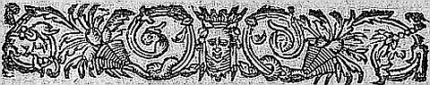
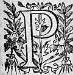
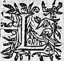
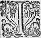

LE
DOUZIESME
LIVRE DE LA
SECONDE PARTIE
D'ASTREE.
Édition de 1610, p. 775.
Édition de Vaganay, p. 487.

PUIS qu'il vous plaist sage Adamas, et vous, grandeNimpheNymphe, d'ouïrouyr la fortune de la belle Eudoxe, vous me permettrez s'il vous plaist de vous dire comment je l'ay apprise, et par qui je l'ay entenduë, afin que vous adjoustiez plus de foy à mes paroles. Encores que vous me voyez avec ces habits de Berger, et vivre avec la charge d'un petit troupeau, dans le hameau de ces sages et courtois Bergers : ce n'est pas pour cela que je sçache asseurement d'estre de ceste contree, ny que j'aye esté nourry pour estre Berger. Au contraire l'on a eu tant de soinsoing de moy que pour me rendre plus honneste homme, j'ay esté nourry en tous les plus beaux exercices où la jeunesse puisse estre employee : si bien qu'il n'a tenu qu'à mon peu d'entendement, si je n'ay beaucoup appris. Pour ce subjectsujet ,
je fus envoyé aux Escholesη
des Phocenses, Massiliens, où je demeuray jusques à ce que j'eus
finy mes estudes. Et parce qu'il y avoit tousjours
fort bonne compagnie, lors que nous n'estions point
sur nos livres, nous faisions divers exercices.
Quelquesfois nous assemblant sur le bord de la Mer,
nous luittions, nous courions, sautions, ou jettions
la pierre : d'autres-fois quand il faisoit chaud,
nous nagions, chassant de ceste sorte le plus que
nous pouvions l'oisivetéoysivetéη
η
qui veritablement est la
mere des vices.
Ilη
advint en Estéη
, lors que les estudes cessent, et
que nous estions moins empeschez à nos livres ; que
nous mettant cinq ou six de compagnie, nous fismes
resolution de nous baigner, et pour cet effect
sortismes de la ville, et prenant le costé de la
Lygurie,
allions cherchant la poinctepointe d'un rocher qui
s'advançoitavançoit en Mer, duquel nous avions accoustumé de
sauter la teste la premiere dans l'eau, et allions bien
souvent toucher l'areine de la main, et pour marque
en apportions des poigneespongnees
sur l'eau : Mais à ce coup
quand nous eusmes monté cest escueilescueuil , et que nous
commencions de nous des-habillerdesabiller , nous en fusmes
empeschez par un tourbillon qui survint, et qui peu
apres fust suivy de quelques esclats de tonnerre.
Incontinentη
le Ciel se noircit d'une espaisse nuée,
et les ondes commencerent de s'eslever si hautes,
qu'à peine estions
nous asseurez sur cest escueilcet écueil ,
tant deles
η
flots rompus heurtoienthurtoient
de furie contre le
dos du Rocher : c'estoit une chose espouvantable de
voir le jour presque changé en nuict, d'oüir le
mugissement de la mer, de sentir l'esbranlement du
rocher, par le heurthurt des ondes. Et bref de considerer
le Cahos, et la confusion de tout ce grand Element.
Et ne faut point douter que la pluyepluie et l'orage ne
nous eussent contraints de nous en aller, si quelque
bon Demon ne nous y eusteut arrestez.
Nousη
avions veu que ceste tourmente s'c' estoit eslevee
si promptement que nous pensasmespensames bien que plusieurs
vaisseaux en auroient esté surpris : et parce que le
vent poussoit contre nostre bord, nous nous
resolusmesresolumes d'attendre que l'orage fut passé pour
voir si de fortune nous en pourrions point secourir
quelqu'un, et toutesfois, pour nous garentirgarantir un peu
de la pluyepluie , nous nous mismes dans le replyη
du
rocher où nous avions accoustumé de cacher nos
habits, quand nous nous baignionsbaignons .
L'orage dura
plus de deux heures, et lors que nous commencions
de nous ennuyer, et qu'il y en avoit de la
compagnie qui parloient de s'en retourner, il
sembla que le Ciel s'esclaircissoit, et peu apres
la pluye cessa. Nous sortismes alors du Rocher, et
montant sur le haut de l'escueil, jettions la veuë
le plus loing que nous pouvions, pour descouvrir
s'il ny avoit rien sur la Mer. Le vent en fin
chassa toutes les nuës, et le Soleil commença d'esclairer, et toutesfois les ondes ne s'abbaissoientabaissoient point, parce que les vents continuoient aussi grands qu'ils avoient esté de tout le jour. Et lors que nous discourions entre nous de la hardiesse des mariniers, et particulierement du premier qui hazarda de se mettre sur les eaux, combien la mer courroucee estoit espouvantableespouventable , et que l'homme sage ne s'y devoit jamais fierη , il y eust un de la compagnie qui plus attentif à descouvrir la Mer qu'à nos discours, parce qu'il se plaisoit de faire des preuves de sa bonne veuë, se leva tout à coup sur les pieds : - Et taisez vous, nous dit-il, il me semble de voir un vaisseau, et mettant la main sur ses sourcils demeura quelque temps sans parler : Et lors que nous nous mocquions de luy et de sa veuë : - Et bien, dit-il, vous verrez promptement si je l'ay si mauvaise, et vous souvenez que voila deux vaisseaux que le vent rompra contre nostre rocher, si Dieu ne les favorise de donner sur le sable le long de la coste. Nous nous levasmes pour voir s'il estoitdisoit η vray : au commencement personne n'appercevoit rien, mais quelque temps apres, il y en eust qui virent quelque chose. Le vent estoit si impetueux que ces vaisseaux furent bien tost apres jusqu'où ma veuë se pouvoit estendre : et lors chacun les voyoit à pleinplain . Il n'y avoit plus ny voiles, ny entennesantennes, ny mats : L'orage avoit contraint les Mariniers de les abbattreabatre et coucher dans le fonds, et ne se servoient plus que du TymonTimon , qui encor ne pouvoit guiereguere resister aux grands coups de la tempeste. Il y avoit de la
pitié
à les regarder, car le vent estoit si grand qu'ils
ne pouvoient s'empescher de se hurter l'un l'autre.
Le cryη
que le vent portoit jusques à nous estoit
pitoyablepitoiable de ceux qui estoient dedans, et qui à
genoux sur le tillac et sur la pouppe, eslevoyenteslevoient les mains au Ciel. La plus part voyantvoiant le rivage
s'estoient deshabillezdesabillez , esperant de le gagner à
nage si le vaisseau s'en approchoit un peu plus.
La fortune voulut qu'en fin apres s'estre à moitié
entre-ouverts l'un l'autre de force de
se hurter : un
tourbillon survint qui les poussa contre nostre
rocher. Du grand coup que le premierη
donna il recula
en arriere de telle furie, que rencontrant l'autre
qui le suivoit, il rompit une partie de sa pouppe
et l'esperon de la prouë de l'autre : et lors que
la mer estoit preste de les engloutir, il survint
un autre flot qui les poussa d'une si grande force
contre le mesme rocher, que les vaisseaux s'ouvrirent
entierement. Dieu quelle pitié fut celle-là :
quelques-uns se prenoient aux pointes de la roche,
et essayoyentessaioient d'y asseurer leurs pieds, attendant
quelque secours : d'autres saisissoient des racines,
et demeuroient attachez par les bras, sans en pouvoir
partir : d'autres entre les mains desquels les
racines demeuroient rompües, tomboient en la Mer,
que l'onde en se retirant emportoitraportoit
en arriere.
Quelquesη
-uns nageoient sur des tables, d'autres sur
des tonneaux, et autres choses semblables, mais la
plus grande partie s'en noya. L'une des plus grandes compassions
que je vis fut
de plusieurs
femmes qui n'avoient autre recours
qu'aux cris, j'advouë que ceste compassion me toucha de sorte qu'que estant à moitié desabillé je me hastay de me mettre nud, et faisant pour secourir ces pauvres gens, ce que j'avois fait si souvent pour mon plaisir, encore que le hazard y fust grand à cause du soulevement des ondes et de la force du vent : Je sautay du rocher dans la mer, et estant revenu sur l'eau, et jettant la veuë autour de moy, j'apperceusaperceus deux femmes qui embrassees alloient roulant sur l'eau, n'y ayantaiant rien qui les empeschast d'enfoncer, que leurs robes qui toutesfois peu à peu commençoient de s'appesantir. J'en pris une par les cheveux, et nageant de l'autre main, je les tiray toutes deux à bord, où les laissant à moitié mortes, je me rejettay dans l'eau pour secourir deux hommes dont l'amitié m'esmeutesmut à compassion, parce qu'il y en avoit un qui sçavoit nager, et avoit mis l'autre sur son dos pour le sauver, mais la charge estoit si pesante, ou celuyη qui estoit dessus qui estoit le plus jeune, avoit de sorte lié et serré le col de son amy de peur de tomber, que le nageur n'ayant ny force ny haleine, s'estoit desja enfoncé deux ou trois fois dans l'eau. Je survins donc tout aupres pour les secourir, et prenant d'une main celuy qui ne sçauroitsçavoit η nager, je le souslevaysoulevay un peu, et donnant courage à l'autre, il reprit force, et se voyantvoiant assisté de moy me fit signe que son amy luy ostoit le souffle : qui fut cause que luy desserrant un peu la main, quoy qu'avec grande peine, il commença de respirer, et parce que je n'osois guere m'approcheraprocher d'eux, de peur qu'ils ne me prissent les bras ou les jambes, je me tenois un peu à costé,
et de fois à autre leur donnois du pied, les poussant contre la terre. Dieu m'assista si bien que je les mis en fin sur le bord. A mon exemple tous mes compagnons en firent de mesme, de sorte que nous en sauvasmes plusieurs, mais si malmenez de ceste fortune qu'ils demeuroient estendus sur le bord de la mer, comme s'ils eussent esté morts. Et parce que j'eus opinion que Dieu me commandoit d'avoir particulierement soing de ceux que j'avois retirez du naufrage, apres avoir repris mes habits, je les vins retrouver et leur donnay tout le secours qu'il me fut possible. Et la fortune voulut qu'que apres avoir rejetté une partie de l'eau qu'ils avoient avalee : ils commençoient de se bien porter, et mesmes les femmes qui avoient esté plus en danger. L'obligation de ceux que nous avions retirez fut telle, qu'ils nous demanderent nos noms, et de quelles gens nous estions : et quand ils m'oüirent dire que je pensois estreη Segusien ou Foresien : - O Dieu s'escria l'un d'eux, ceux d'une telle contree sont destinez pour nous r'appeller de la mort ! Pour lors je ne leur demanday pourquoy ils avoient ceste opinion, voyant bien que le temps n'estoit pas propre, puis qu'ils estoient encores si estonnez du naufrage, qu'ils ne faisoient que souspirer, joindre les mains, et tendre les yeux en haut, pour le regret de la perte qu'ils venoient de faire : Et parce qu'ils estoient presque tous nuds, je fus d'advis que avant que de les emmener en la ville, il leur falloit chercher des habits pour les couvrir, n'estant
pas honneste de les conduire autrement. Je fus un de ceux qui eurent la charge d'aller en la ville, où nous trouvasmes tant de personnes, qui pitoyablementpitoiablement nous secoururent, que nous en eusmes de reste. Ils furent apres separez dans les meilleures maisons des bourgeois, qui ayant compassion de leur accident les receurent humainement. Quant à moy, je priay les deux amis que j'avois sauvé de se vouloir retirer avec moy parce qu'ils me sembloient personnes de merite. - Nous ne pouvons, dirent-ils, nous separer de ces deux femmes que vous avez sauvees, parce que nous les avons en nostre charge, et ce vous seroit peut estre trop d'incommodité. - Nullement, leur dis-je, pourveu que vous mesmesmesme n'en receviez pour la petitesse du logis : au contraire ce me sera une extresme satisfaction, si vous me voulez faire cetteceste faveur. Ils me suivirent donc tous quatre : et parce que j'avois des amysamis dans la ville, qui estoient mieux logez que moy, je les conduisis en la maison d'un riche bourgeois, avec lequel j'avois une tres estroitte familiarité ; Sçachant bien qu'il l'auroit agreable, luy ayant desja veu faire plusieurs fois de ces actions de liberalité, et de pitié envers ceux qui poussez d'une mesme fortune, avoient faictfait naufrage contre ceste plage. Ils y furent tres-bien receus et accommodez de tout ce qui leur estoit necessaire. Or, il faut que vous sçachiez que c'estoient deux des principaux de Rome, dont l'un comme je sceus depuis, s'appelloit Ursace, et l'autre Olymbre ; de sorte qu'incontinent ils renvoyèrentrenvoierent en leurs
maisons, et eurent de l'argent, et plusieurs serviteurs. Mais pour satisfaire à ce que je vous ay promis, il faut que vous sçachiez qu'que attendant d'avoir responce de Rome, ces deux Chevaliers ne pouvoient estre sans moy, et falloit que laissant bien souvent mes estudes, je les accompagnasse par tous les endroictsendroits où la curiosité les attiroit, dont je prenois beaucoup de plaisir, parce que leur conversation estoit fort douce et honnestehoneste . En fin desirant de sçavoir qui estoient ceux à qui j'avois rendu un si bon office, un soir que j'estois seul dans leur chambre (car les deux femmes se retiroient ordinairement dans la leur apres le repas), je les suppliay de me dire pourquoy lors qu'ils avoient sceu que j'estois Seguzien, ils avoient dit que ceux de cestecette contree estoient destinez pour les r'appeller de la mort. Le plus vieux prenant la parole me respondit ainsi.
HISTOIRE
D'EUDOXE, VALENTINIAN,
ET URSACE.

VOstre desir est trop juste, courtois Silvandre
(il avoit apprisapris que je m'appellois ainsi) pour ne
luy satisfaireiatisfaire . Car il est tres-raisonnable que
vous sçachiez à qui vous avez sauvé la vie, et quelle
est la condition de ceux qui
vous ont tant d'obligation : Nous n'eussions tant demeuré à le vous dire, n'eust
esté la crainte qu'estant recognus nous ne
receussions du desplaisir de quelques ennemis
secrets : nous vous prierons donc de n'en faire point
de semblant, afinà fin que la peine que vous avez prise
à nous sauver ne demeure inutile. Et afinà fin que nous
ne puissions estre escoutez de personne, je vous
supplie de pousser la porte, ce qu'ayant fait, et
m'estant remis en ma place, il reprit la parole de
ceste sorte.
Sçachez donc que Theodose fils de l'Empereur
Arcadius, et le petit fils du grand Theodose,
estant Empereur d'Orient espousa Eudoxe fille
du Philosophe Leontius Athenien. Encores que ceste
Dame ne fut pas de race tant illustre qu'eust bien
requise la Majesté d'un tel Empereur, si est-ce que
sa beauté et sa vertu estoient telles qu'elles la
pouvoient bien encores eslever à une plus haute
dignité, s'il s'en fustfut trouvé parmy
les hommes.
Theodose n'eut qu'une fille d'elle, et parce qu'il
aimoitaymoit passionnément sa femme, il voulut que sa
fille en portast le nom. Elle fut donc appellee
Eudoxe, et comme si ce nom eust esté fatal aux
belles, ceste jeune Princesse dés ses premieres
annees parvint à une telle beauté, qu'elle surpassa
de beaucoup sa mere, et que chacun advoüoit que la
nature ne pouvoit rien faire de plus beau, ny de plus
parfait. En ce mesme temps Placidie ayant quelque
mauvaise satisfaction de son frere Honorius
s'estoit retiree en
Constantinople
vers son nepveu Theodose, car elle estoit fille de
Theodose le grand, et sœur d'Arcadius : emmenant
avec elle ses enfans Valentinian et Honorique, et
de fortune j'avois esté donné fort jeune enfant à
Placidie, pour estre nourry avec son fils comme
plusieurs autres de mesme aageâge , enfans des principaux Chevaliers et Senateurs de Rome : et lors qu'elle
quitta l'Italie j'avois pris une si grande amitié
à Valentinian et luy à moy, que l'on ne nous
pouvoit separer.
Ilη
advintavint que l'Empereur Theodose ne voyantvoiant point
d'enfant à son oncle Honorius, resolut de donner sa
fille à Valentinian, et le faire Empereur
d'Occident, apres la mort d'Honorius. La sage
Placidie qui voyoitvoioit bien que c'estoit l'avantage de
son fils, et le mieux qui luy pouvoit arriver, luy
commandoit d'ordinaire de rechercher ceste belle
Princesse : mais voyez que c'est que la contrainte en
amour : jamais Valentinian ne peutpût aimer d'amour
Eudoxe, quoy que ce fust la plus belle Princesse du
monde. Toutefois pour ne desplaire à la sage
Placidie, ny à son Germain, desquels toute sa
fortune dependoit, il se resolut de feindrefaindre et de
dissimuler si bien que chacun le creut estre
veritablement amoureux. Et pour ce subjetsubject il
faisoit bien souvent des tournois, dans les Cirques et
dans l'Hippodrome où le belle Eudoxe assistoit
ordinairement, quoy qu'elle fustfut si jeune qu'il n'y
eust pas grande apparence qu'elle deust prendre garde à l'Amour. Et parce que j'estois nourry aupres
de ce jeune Prince, il faut que je confesse que
tournant inconsiderémentinconsiderammment les yeux sur elle, j'en
devins
de sorte amoureux, que depuis il m'a esté
impossible de m'en retirer. Dois-je dire cette veuë
heureuse
ou malheureuse pour moy, qui m'a cousté
tant de travaux et tant de soing ? Mais comment leη
puis-je mettre en doute, puis que jamais personne
ne fut plus heureux
ayantaiant conceu un si genereux dessein, quelque peine et travail que la fortune m'ait envoyéenvoié pour ce subjectsuject ? Je devins donc
serviteur de ceste Princesse, et si Valentinian entroit aux tournois, soussoubs le nom feintfaint de Chevalier de la belle Eudoxe, je puis dire que je n'en faisois
pas de mesme, estant de sorte espris de sa beauté et
de sa vertu, que mon amour estoit incroyableincroiable pour
l'aage que nous avions tous deux.
En ce mesme temps il fut donné une jeune fille des
meilleures maisons de Grece à la jeune Eudoxe, pour
estre nourrie avec elle. Elle s'appelloit Isidore,
et faut advoueravoüer que hors-mis Eudoxe, il n'y avoit
rien en la Cour qui la valust. Valentinian ne
jetta pas
les yeux plustost sur son visage, qu'il en devint
amoureux : Mais elle se trouva si soigneuse de son
honneur et de sa reputation que, cognoissant bien
ceste affection, et que Valentinian ne la pouvoit
espouser, pour les occasions que je vous ay dictesdites (car chacun sçavoit la volonté de Theodoze) elle ne
voulut jamais souffrir sa recherche, s'en deffendant
au commencement par les plus douces voyesvoies qu'elle
peutput : mais enfin la rejettant plus rigoureusement,
peut estre que la qualité de Valentinian ne
meritoit pas. Et quoy qu'il s'y voulustvoulut opiniastrer, si traitta-elle de sorte avec luy qu'elle
le contraignit de s'en retirer en apparence, parce qu'elle luy jura que s'il continuoit, elle le declareroit à Theodoze, et à Placidie. Ce jeune Prince qui ne vouloit point desplaire à l'Empereur ny à sa mere, cacha si bien ses desirs, que personne ne s'en prist gardeprint, qu'que Eudoxe et moy, comme je vous diray. Cependant mon affection alloit croissant sans que ceste jeune Princesse s'en apperceust. Tant que ma jeunesse fut telle qu'il m'estoit permis de la voir sans soupçon, jamais je n'en perdis une commodité, me rendant si soigneux pres de sa personne, qu'elle estoit contrainte de se servir plus souvent de moy que de nul autre de mes compagnons. Et quoy qu'en ce temps-là je ne sceusse presque que c'estoit que l'Amour, si ne laissois-je d'avoir un tres-grand plaisir d'estre aupres d'elle, de la servir, d'en recevoir les commandementscommandemens , de baiser (lors qu'elle me tendoit quelque chose) l'endroit que sa main avoit touché, ce qu'elle ne voyoitvoioit point, ou si elle le voyoitvoioit , elle l'attribuoit à civilité. Je me souviens qu'en ce temps-là, elle se promenoit un jour dans une gallerie, où il y avoit quantité de belles et rares peintures qu'elle alloit considerantη . Entre les autres elle vit un Icare qui tout dépluméη se laissoit choir dans la mer. Ursace, me dictdit -elle (c'estcest ainsi que l'on me nomme) qu'est-ce que signifient ces plumes esparses, et cest homme qui tombe d'enhaut ? - C'est, luy dis-je Madame, un jeune homme qui porté d'un genereux courage, ne voulut pas se contenter de voler si bas que son pere, que vous voyez au dessous de luy : et
parce que ses aislesayles estoient jointes avec de la cire, la chaleur du Soleil les fit relascherrelacher , et luy n'en estant plus soustenu fut contraintcontrainct de tomber comme vous voyez. - Vrayement me respondit-elle, il estoit bien inconsideré. - Mais luy repliquay-je, il avoit un courage bien genereux. - A quoy luy servit il, me dit-elle, puis qu'il ne le peutpeust garantir de la mort ? - La mort, luy respondis-je, est peu de chose quand elle laisse une si belle memoire de nous. - Et quoy me dit-elle, vous loüez ceste action ? - Je la loüe de sorte, luy dis-je, Madame, que je ne refuseray jamais la mort, pour une semblable gloire. Elle pouvoit avoir douze ans, et moy quinze ou seize : aageâge peu capable encores de ressentir les traictstraits d'Amour, et toutesfoistoutefois je n'en estois pas exempt : mais j'avois si peu de hardiesse que je n'avois osé luy en rien descouvrirdécouvrir . - Et quoy me dit-elle, vous estimez donc bien peu vostre vie ? - C'est sans doute, Madame, luy dis-je, qu'il y a plusieurs choses que j'estime beaucoup plus. - Et lesquelles entre-autres, adjousta-t'elle, car il me semble que quand nous ne sommes plus, tout le reste ne nous touche gueresguere : - L'honneur, et l'Amour, luy respondis-je. - Et qu'est-ce que l'honneur, me dit-elle. - C'est une opinion, repliquay-je, que nous laissons de nous et de nostre courage. Et l'Amour, c'est un desir de posseder quelque chose de grand et de merite. Et c'est pourquoy, Madame, je ne ferois jamais difficulté de mourir en une genereuse action, ny en vous faisant service, en la premiere pour la gloire qui m'en demeureroit, en la derniere
pour l'affection que je vous porte. - Et comment,
me dit-elle tout enfant vous avez donc de l'Amour
pour moy ? A quoy l'avez-vous recogneureconneu : - Aux
effets luy respondis-je, car quand je ne vous vois
point je brusle de desir de vous voir : quand je
vous vois je meurs de regret de ne vous voir pas
assez. - Et comment, me dit-elle, vous est survenuë
ceste maladie, et qui en a esté cause : - Vos
perfections, Madame, luy dis-je, et vos beautez
m'ont fait ce mal, par la longue demeure que j'ay
faictfait pres de vous. - Si j'estois en vostrevôtre place, me
respondit-elle, je voudrois y demeurer le moins que
je pourrois : Mais n'y a-t'il point de remede pour
guerir de ce mal ? - Si a, luy dis-je, si vous vouliez
m'aymeraimer autant que je vous aymeaime . - Comment, dit-elle
soudain, en se tournant vers moy, que je bruslasse
quand je ne vous verrois point : En ma foy, Ursace cherchez quelque autre recepte, car pour celle-là,
je ne la puis pas faire. Je me suis quelquefois
brusleebrûlee le doigt, mais c'est une douleur insupportableinsuportable ,
et n'attendez point vous dis-je encorencore un coup,
d'estre soulagé de moy, par ce moyen.
Je n'osay repliquer, parce qu'en la gallerie il y
avoit plusieurs Dames et Chevaliers, qui discouroient
ensemble, sans toutesfois prendre garde à nous,
quoy qu'ils y fussent pour accompagner
cestecette jeune Princesse, mais son enfance et ma
jeunesse nous permettoient d'estre ensemble sans
soupçon, encores que je ne le pensasse pas ainsi.
Depuis elle devint bien plus sçavante lors
que l'aage luy enseigna la resolution des doutes qu'elle me souloit faire en son enfance, et en mesme temps, je devins aussi beaucoup plus amoureux, que je ne soulois estre. Valentinian qui avoit dessein sur la belle Isidore, faisoit le plus souvent qu'il pouvoit des tournois, parce qu'estant fort adroit, il luy sembloit que c'estoit un bon moyenmoien pour acquerir les bonnes graces de ceste sage fille, feignantfaignant toutesfois que ce fut pour la belle Eudoxe. Et parce qu'il prenoit ordinairement de ceux de son aageâge , et qu'il n'y avoit difference entre luy et moy, que de deux ou trois ans qu'il pouvoit avoir plus que moy, j'estois presque tousjours de sa partie. Et sembloit que la fortune me voulut favoriser, me faisant emporter bien souvent le prix, que tousjours, feignantfaignant que ce fut à cause de Valentinian, je portois à Eudoxe : Et lors qu'en le recevant, elle me permettoit de luy baiser la main ; O que j'estimois toutes les peines que j'avois euës, le reste du jour bien employees ! Je vivois toutesfois avec tant de discretion, qu'elle ne s'en pouvoit offencer, encores qu'elle eust quelque memoire des discours que je luy avois tenutenus : car pensant que ce fussent des imprudences de l'enfance, elle avoit opinion que l'aageâge m'avoit fait recognoistre ce que je luy devois. La premiere fois qu'elle soupçonna le contraire, ce fut un jour qu'elle s'estoit alléeallé promener de l'autre costé du trajecttrajet dans les jardins de l'Empereur. Apres s'estre longuement promenee, elle s'endormit souz un frais ombrage dans le giron d'Isidore : nous
estions quantité de jeunes Chevaliers à l'entree du cabinet, qui discourions, lors qu'une Abeilleη se vint poser sur sa levre, et apres l'avoir succee quelque temps la picqua bien fort : la douleur l'esveillaeveilla en sursaut et portant la main sur la picqurepicqeure se pleignit du peu de soin qu'Isidore avoit d'elle. Valentinian qui se promenoit par le jardin, accourut au cry qu'elle avoit fait, et voyantvoiant qu'elle le blasmoit Isidore à fin de reparer la faute qu'elleη avoit faite, il luy dit que j'avois une recepte qui la guariroit incontinent, et qu'il en avoit bien souvent veu l'experience sur plusieurs, mais particulierement sur luy, depuis deux jours. - Et que faut il faire luy dit elle. - Il dit, respondit Valentinian, quelque parole sur le mal et soudain la douleur cesse. Et lors, me demandant s'il estoit vray, je luy dis qu'ouy, et que jusques en ce temps làla je n'en avois point failly et que je ne pensois pas que la fortune me fust moins favorable pour elle que pour tous les autres. Elle se faschoit fort que j'approchasse ma bouche si prés de la sienne, et en me presentant la main me commandecommanda que j'essayasseassayasse dessus. Je luy mets la bouche contre, et soufflant un peu j'approchay les levres jusques à la peau, et la pressay doucement. O Silvandre quel commencement fut celuy-cy ! Elle retire la main, et me dit que c'estoit baiser, et non pas une recette, et ne voulut point le permettre, mais la douleur qui la pressoit la contraignitcontreignit en fin de me dire que je l'aprisse à Isidore, et qu'elle la luy feroit. Je fus bien combattucombatu, car je desireroisdesirois η fort d'estre celuy qui approcheroit de ses belles levres,
et toutesfois j'estois bien marry du mal qu'elle souffroit. Amour me conseilla de dire d'autres paroles à Isidore, afin que ne la trouvant pas bonne elle fut contrainte de recourre à moy. Et mon dessein reüssit comme je l'avois proposé, parce qu'ayant murmuré en vain mesces fausses paroles, et fait toutes les autres ceremonies, la douleur ne cessa point. Dont Valentinian se mocquantmoquant : - Pensez-vous, luy dit-il, ma maistresse, que chacun soit propre à ceste recepte ? je vous jure que je l'ay espreuveeesprouvee et que si elle ne vous profite c'est qu'Isidore y oublie quelque chose, et à ce mot ressortant du cabinet emmena avec luy tous les Chevaliers. La douleur augmentoit, et la levre commençoit d'enfler, lors que se tournant vers moy : - Par vostre foy dit-elle, Ursace, la recette est-elle bonne ? - Je vous jure luy dis-je Madame, par l'honneur que je vous dois, que je ne lale vis jamais manquer, et suis si marry qu'Isidore ne l'aitayt sceu faire, que je n'ay jamais desiré d'estre fille qu'à ce coup pour vous rendre service. Isidore prenant la parole : - Je ne sçay dit-elle, Madame, quelle difficulté vous en faites : mais si vous voyez comme la bouche vous grossit, vous ne voudriez pour quoy que ce fust que le mal passast plus outre. - Mais dittesdites -moy, Ursace, reprit Eudoxe, demeurerez vous long temps à faire vostre recette ? - Le moins que je pourray, luy dis-je Madame, et lors m'approchant d'elle, elle se retira à l'endroitendroict le plus obscur du cabinet, comme ayant honte d'estre veuë, et permit forcée de la douleur que je fisse mon enchantementη .
Fut il jamais sorcier plus heureux que moy ! Je dis donc les paroles sur lasa levre : mais quand je la pris entre les miennes, et qu'en sucçant je la pressay un peu, J'advouë que si quelqu'un eust peu mourir de douceur, qu'Ursace ne seroit plus. Elle se retire toute rouge de honte : - Voila dit-elle, la plus importune recepte qui fut jamais. - Mais Madame, luy dit Isidore, vous a-t'elle soulagee ? - Il me semble respondit-elle, que j'y recognois quelque amendement. - Vostre douleur, luy dis-je, se passera bien-tost, mais j'en auray tout le mal. - Comment, me dit-elle, vous aurez mon mal ! - Ouy Madame, luy respondis-je, les conditions de cetteceste recepte sont telles que celuy qui guerit autruy de ceste sorte, en souffre la douleur. Elle qui ne l'entendoit pas, ou pour le moins feignoitfaignoit de ne l'entendre ainsi que je le disois : - Vrayement Ursace, me dit-elle, je vous suis trop obligee de m'avoir voulu guerir en prenant mon mal. - Madame, luy dis-je, si je pouvois aussi bien rendre mien, tout celuy que vous devez jamais avoir, soyez certaine que vous n'en ressentiriez jamais. - Mais, dit Isidore en sousriant, si vous aviez autant de bonne volonté, Madame, pour luy qu'il en a pour vous, il faudroit qu'à ceste heureà cette heure vous luy fissiez la mesme recepte pour le guerir du mal qu'il a pour vous. - J'aymeaime mieux, respondit Eudoxe, luy estre redevable en cecy, que s'il me l'estoit, et puis ce seroit tousjours à recommencer, car il est trop courtois Chevalier, pour me laisser avec le mal qu'il me pourroit oster. - Il est vray, Madame, adjoustay-je, et puis mon
mal n'est plus en la lévre, il est passé au cœur. Elle entendit bien ce que je voulois dire, quoy qu'elle fit semblant de ne l'avoir point oüy, et sans Isidore qui estoit trop prés de nous, je luy en eusse bien dit davantage. Je me contentay donc de ceste ouverture pour ce premier coup. Et depuis je fis tels vers sur ceste picqueurepiqueure .
SONNET
D'une mousche sur les lévres de sa
Dame endormie.

CEpendant que Madame à l'ombre se repose,
Et trompe du Soleil la trop aspre chaleur,
Un petit animal volant de fleur en fleur,
Les douceurs va cherchant dont le miel se compose.
De fortune sa levre estant à moitié close,
La fleur representoit la plus vive en couleur,
Lors que cest animalη
, la voyant par malheur,
Y vole, et la sucçant pensa succer la rose.
Ah ! trop sage au faillir ! Trop heureux à l'oser,
Puisqu'à ta hardiesse on n'a sceu refuser,
Ce qu'on nienye aux desirs dont mon ame s'allume.
Mais ceste mousche, Amour, ravit tout nostre bien,
Que nous reste t'il plus, puis qu'elle a rendu sien,
Le miel dont s'addoucitadoucit toute nostre amertume ?
Je serois ennuyeux, ô courtois Sylvandre, si je vous
racontois par le menu le commencement et le progrez de mon affection : Je vous diray doncquesdonques seulement
ce qui sera plus necessaire que vous sçachiez.
Amour me rendit en fin si hardihardy , que je me resolus
de luy declarer tout ouvertement ce que je ressentois
pour elle : Je demeuray long temps à disputer en
moy-mesme, si ce seroit de bouche ou par l'Escriture,
en fin je conclus qu'il valloitvaloit mieux le luy dire, que
de le luy faire lire, par ce que j'avois de long temps apris qu'il faut faire demander par quelque autre ce
que l'on ne veut pas obtenirη
. Outre ce
η
que je prevoyoisprevoiois bien que la difficulté ne seroit pas petite de luy
faire recevoir de mes lettres. Mais, ô Dieux,
combien de fois ayant fait ceste resolution m'en
revins-je en mon logis, sans y avoir rien advancé :
Le Ciel en fin, qui sembloit en ce temps de vouloir
favoriser mon dessein, m'en donna une telle commodité.
Il ne faut, comme je vous ay dit, que passer le
Bosphore pour aller aux jardins de l'Empereur, scituez
toutesfois en Asie, en un lieu nommé Calcedoine,
qui est si prés de Constantinople, qu'on peut ouyr
la voix d'un homme d'un lieu à l'autre. Eudoxe s'alloit promener fort souvent en ces jardins, et
toutes les fois qu'il m'estoit permis, je l'y
accompagnois avec tant de soing de luy faire quelque
service, que quand ce n'eust esté que de luy amasser une fleur en tout un jour, j'estois fort contentcontant de
ma journee, ayant appris dés long temps, qu'en amour
les petits services, s'ils sont en grand nombre
font plus
d'effect que ceux qui sont d'importance, et qui arrivent rarement, parce qu'à ceux-cy on est obligé, si l'on ne veut estre estimé ennemy plustost qu'amy : mais il n'y a rien qui nous pousse aux autresη que la seule affection. J'estois donc d'ordinaire avec elle, et me rendois si soigneux qu'elle n'avoit une seule de ses filles, qui fut plus prompte à tous ses petits messages que j'estois. Il advint qu'un jour Valentinian l'avoit suivie en ce lieu, à cause d'Isidore, et parce qu'elle aymoitaimoit fort à se promener, et qu'Isidore se trouvoit un peu lasse, elles se separerent, Eudoxe continua le promenoir, et Isidore entra dans un cabinet, où elle trouva des sieges rehaussez de gazons, et couverts de quelques aix. Elle n'y eust pas demeuré long temps que Valentinian, qui estoit pour lors avec Eudoxe, feignant d'estre las, s'alla asseoir dans le mesme cabinet, Isidore en voulut ressortir, mais il lal'a retint par sa robe : Eudoxe qui s'en print garde, ne pût s'empescher de sousrire en me regardant, et me semblant que c'estoit une tres-bonnetresbonne occasion pour commencer mon dessein, je ne la voulus perdre : Je me sousris donc, comme elle, et plie les espaules, me tournant de l'autre costé, et alorsη me demanda que j'avois à sousrire. Je luy respondis tout franchement que c'estoit de voir que Valentinian la quittatquittast pour aller vers Isidore. - Et quoy me dit-elle, Ursace, n'en feriez vous pas de mesme ? - Moy, Madame, luy dis-je, auriez vous bien opinion que j'eusse si peu de jugement ? - Vous le devriez faire, me dit-elle, puis qu'il y a plus d'apparence qu'elle doive estre servie de vous
que de Valentinian. - Je sçay bien luy dis-je, Madame, que la condition d'Isidore et de moy, m'y devroit plustost convier, mais j'advouë que j'aime mieux faire une contraire faute à celle de Valentinian, - Comment l'entendez-vous ? respondit-elle. - Je veux dire, continuay-je, que plustost que de servir quelque chose d'égal à moy, comme Isidore, j'aymeaime mieux mourir d'amour, pource qui est par dessus moy, comme vous, - Comme moy : reprit incontinent Eudoxe, et que pensez vous dire, Ursace : - Je pense dire, Madame, luy respondis-je, que j'aymeaime mieux mourir en vous adorant que de vivre ayméaimé d'Isidore, et que la grande inegalité qui est entre nous, ne m'a sceu empescher que je n'aye eu ceste volonté depuis le jour qu'il me fut permis de vous voir. - Je crois, me dit la Princesse, que vous estes hors de vous mesmes de me tenir ces propos. - Ne le croyez point, luy dis-je, Madame, je ne parlay jamais ny avec plus de verité, ny avec un plus sain jugement. Elle demeura ferme et me regarda entre les yeux, et puis me dit : - Est-ce à bon escient, ouoù par jeu, que vous me tenez ce langage. - Je jure, Madame, repliquay-je, par le service que je vous doy, que je ne proferay jamais paroles plus veritables, ny d'une volonté plus resoluë, que celles que vous venez d'ouyrouïr , et de plus que ceste extremeextresme affection, dont je vous parle, ne changera jamais quelque traitementtraictement que je reçoive de vous. - Je suis marrie, me dit-elle, Ursace, de vostre folie, parce que la longue nourriture que vous avez euë de l'Empereur mon pere m'obligeoit de vous voir, et de me servir de vous d'une meilleure volonté, que de
plusieurs autres, dont les merites pouvoient esgaler les vostres. Mais puis que vostre outrecuidance a passé toutes les bornes de la raison, et vous a osté la cognoissance de ce que vous me devez, ressouvenez-vous, que s'il vous advient jamais de me parler de ceste sorte, je vous feray repentir de vostre temerité, et que l'Empereur et Valentinian en seront avertisadvertis . - Madame, luy respondis-je, si je ne craignois que ceux qui sont en ce Jardin s'apperçeussent de ce que je vous dis, je me jetterois à vos genoux, pour vous demander pardon de l'offence que je vous ay faite, mais estant retenu de ceste consideration, ayez agreable la volonté que j'en ay, et me permettez de vous dire, que les menaces que vous me faictes pourroient avoir quelque force sur moy, si c'estoit de ma volonté, que ceste affection fut née, mais puis que c'est le Ciel qui m'y force, n'esperez que la crainte de l'Empereur, ny la consideration de Valentinian m'en divertissent jamais. Il est vray que je puis bien me taire et mourir d'amour pour la belle Eudoxe : Et pour preuve de cela, et afinà fin de ne vous ennuyer jamais des fascheuses paroles qui vous ont offencee, je vous jure par le tres-humble service que je vous dois, de ne vous en parler jamais : Mais ressouvenez vous que toutes les fois que je m'approcheray de vous, et que je vous diray : bon jour, Madame, ou que seulement je vous feray la reverence, ce sera à direη : Je meurs d'amour pour vous Madame, et vous n'aurez jamais un plus fidelefidelle serviteur que moy. Et quand je prendray congé, et qu'en vous saluant je vous
donneray le
bon soir et me retireray, ce sera autant que si je
vous disois : Jusques à quand ordonnez-vous que je
sois miserable, et combien encore durera vostre
rigueur : Et pour commencer, luy dis-je
froidement, vous me permettez de prendre congé de
vous, et de vous donner le bon soir. Et à ce mot, je
fis une grande reverence, et me retiray, de peur
qu'elle ne me defendit encores
ces deux paroles, et toutefoistoutesfois je pris garde qu'elle se tourna de l'autre costé en sousriant. Ce
qui ne me donna point une petite esperance.
Or, Gentil estranger, je vesquis depuis ce jour de
ceste sorte avec elle, ne luy faisant jamais semblant de tout ce qui s'estoit passé, sinon par le bon jour
et le bon soir, ausquels, quand elle n'estoit point
veuë elle respondoit le plus souvent en branlant
la teste, comme si elle se fust encores offencee de
ce souvenir que je luy donnois. Plus de six mois
s'escoulerent que je continuay tousjours de mesme
façon, et qu'elle aussi s'opiniastroitoppiniastroit de ne point
recevoir mon affection. Enfin je vainquis, mais
aussi qu'est-ce que ne peut le service et la
perseverance d'un amant avisé.
Un matin que Valentinian la conduisoit au Temple,
je m'avançay et luy faisant une grande reverence,
je luy dis : - Bon jour Madame, elle alors en
sousriant, et se tournant vers moy : - Vos bon-jours
Ursace, me dit-elle, sont receus de bon cœur. O
Dieux, pourrois-je dire quel fut le contentement
que je receus, je proteste, que jamais je n'esperay
d'estre si heureux, et moins en ce temps-là que l'on
parloit du mariage
de Valentinian et d'elle, et
toutesfoistoutefois j'appris depuis, que ce que je croyois
la devoir esloigner de moy, fut ce qui me l'obligea davantage, parce que voyant que l'affection qu'il
portoit à Isidore s'augmentoit, et que celle qu'il
luy faisoit paroistre, n'estoit que pour complaire
à l'Empereur, Elle se resolut de ne l'aymeraimer aussi
que pour estre femme d'un Empereur, et de faire estat
de mon service, comme Valentinian de l'affection
qu'il portoit à Isidore. Je sceus ceste resolution
peu apres, car dés la premiere occasion qui se
presenta, elle me dit que mon opiniastreté et
l'affection de Valentinian envers Isidore, l'avoient vaincuë, et que si je continuois de vivre
avec la mesme discretion, elle continueroit aussi de
me vouloir du bien, et depuis ce jour elle permit
qu'en particulier je la nommasse ma Princesse, et
elle m'appelloit son Chevalier. Jugez Silvandre,
s'il y avoit homme au monde plus heureux que moy.
Car Eudoxe estoit l'une des plus belles Princesses du
monde, en l'aage de dix-septdixsept ou dix-huictdixhuict ans, et
qui ne faisoit paroistre d'aimer personne que moy.
Ce pendant que nous vivions de ceste sorte, Honorius,
qui avoit espousé la fille de Stilicon, mourut sans
enfans, et parce qu'un Romain nommé Jean, son
premier Secretaire, s'estoit fait
eslire Empereur par le moyen de Castinus, et de Ætius, l'Empereur Theodoze qui avoit fait dessein
de faire Empereur d'Occident, son cousin Valentinian,
l'y voulut envoyer avec sa mere Placidie. Je fis
semblant de la vouloir suivre, en ce voyage : mais en effet je ne desirois
rien plus que de demeurer pour la garde d'Eudoxe. Car encor que le desir de la gloire m'attirastattirat en Italie, l'amour me retenoit en Constantinople, avec des liens qui n'estoient pas foibles, parce que ceste belle Princesse se laissa aller outre son dessein de telle sorte à l'amitié qu'elle m'avoit promise, qu'en fin elle n'avoit pas moins d'affection pour moy, que j'en avois pour elle : Je croy bien qu'elle y fut trompée, et qu'au commencement elle ne creut jamais d'en venir si avant, mais je pense sans mentir que l'Amour a beaucoup de ressemblance avec la mort, et que comme on ne peut mourir à moitié, que de mesme on ne sçauroit aimeraymer à demy. Et lors que j'estois plus en peine de trouver une bonne excuse, l'Empereur receut des nouvelles que quelques ennemis avec un nombre infiny de personnes le venoient attaquer du costé de Constantinople : Ces nouvelles convierent plusieurs de demeurerdemourer, qui autrement eussent esté contrainscontraints pour leur devoir, de s'en aller sous la charge d'Artabure, qui conduisoit une forte armee par mer, ayant avec luy Aspat son fils, tres-vaillant et heureux Capitaine comme il fit bien paroistre en la prise de Jean dans Ravenne, et en la delivrance de son pere. Encores que je ne fusse point jaloux de Valentinian, quoy qu'Eudoxe luy fit paroistre de la bonne volonté, sçachant assez que ce n'estoit que pour complaire à Theodose, et pour estre Imperatrice : si est-ce qu'ayant aprisappris de longue main, que la doute qu'on fait paroistre de n'estre pas assez aymé, convientconvie η les Dames à nous en donner plus de cognoissance,
et qu'aussi feindrefaindre de la jalousie leur donne bien souvent occasion de redoubler leurs faveurs, je fis semblant d'estre un peu jaloux de Valentinian, et de me rejouïrresjoüir de son départ, et je fis des vers sur ce subjetsujet que je chantay devant elle, à la premiere occasion qui se presenta. Ils estoient tels.
Sur le départ d'un Rival.

JAmais contre les rocs tant de flots amassez,
Escumant de courroux, n'ont blanchi les rivages :
Jamais les blancsbancs
η
couverts n'ont veu tant de naufrages
Que cest esloignement m'a d'ennuisennuys effacez.
Bien-heureux souvenirs de mes soupçons passez,
Maintenant de mon heur asseurez tesmoignages ;
Qu'il est doux au nocher apres de grands orages,
De voir dedans un port ses navires cassez !
Blessé de froide peur dedans la fantasiefantaisie,
J'ay tremblé mille fois attaintatteint de jalousie,
Mais en fin son despart m'a du tout rendu sain.
Heureux esloignement, puisses-tu tousjours estre,
Ou bien s'il s'en revient, Amour fay luy paroistre,
Qu'à son dam il partit, et qu'il retourne en vain.
Je ne vous diray point en ce lieu quel fut le voyagevoiage de Valentinian, car vous le pouvez avoir entendu par plusieurs, tant y a qu'apres avoir mis tel ordre aux affaires d'Occident, qu'il jugea estre à propos, il revint en Constantinople, où il fut receu par Theodoze, comme si c'eust esté son fils, et soudain à la solicitation de Placidie, qui estoit demeuree au gouvernement d'Italie, le mariage de la belle Eudoxe fut conclud avec luy. Seroit-il bien possible, que je vous pusse raconter ce que je ressentis en ceste occasion. Je ne le croy pas, car je fus de sorte combatu de crainte et du regret, que sans Eudoxe, il est certain que je ne l'eusse peu supporter. Mais elle qui estoit sage et prudente, encor que de son costé elle fut fort affligée de se voir entre les mains d'une personne qu'elle n'aymoit point, si surmonta-t'elle ce desplaisir avec la resolution. Et parce qu'elle voyoit bien en quelle peine je vivois, elle me donna commodité de parler à elle dans son cabinet, sans qu'autre y fut qu'Isidore, en qui elle se fioit infiniment. Elle estoit assise sur un petit lict, et je me mis sur un genoüil devant elle, ayant dessous quelques carreaux qu'elle m'avoit fait apporter : Et parce que ravy de contentement je ne faisois que la contempler, et luy baiser la main qu'elle m'avoit permis de luy prendre, apres m'avoir consideré quelque temps, elle me parla de ceste sorte. - Et bien mon Chevalier, vous plaindrez-vous toute vostre vie de moy, et serez-vous tousjours en doute de l'amitié que je vous porte : - Ma belle Princesse, luy dis-je, si je n'avois accoustumé de
recevoir de vous plus de faveurs que je n'en merite, vous auriez quelque raison de me faire ceste demande à ceste heure que je reçois celle-cy, qui veritablement est telle que je ne puis la redire. Mais pourquoy ne me permettez-vous de me plaindre de la fortune, qui m'ayant monstré le bien qu'elle me pouvoit donner, l'ordonne toutesfois à un autre de qui l'affection le merite aussi peu que la mienne pourroit estre digne de l'obtenir, si elle leη pouvoit estre par uneun extreme Amour ? - Mon Chevalier, me respondit-elle, vivez content et asseuré de ce que je vous vay dire. Tout ce qu'une extreme affection peut obtenir de moy, sçachez qu'Ursace le possede, et ce que vous regrettez qui soit à un autre, croyezcroiez moy, mon Chevalier que c'est ce qui se doit donner par devoir et non point par Amour, et cela estant, quelle raison avez-vous de vous plaindre de la fortune ? - La raison que j'en ay repliquay-je, est aussi grande que l'obligation en quoy vous me mettez, par ceste asseurance. Pourquoy ma Princesse, ne me plaindray-je pas d'elle qui ayant voulu favoriser mon affection, m'a toutesfois privé de ce qui seul me pouvoit faire parvenir au bien que je desirois. - Ah mon Chevalier, me dit-elle, vous m'offensez. Comment ? vousnous ne m'avez aymeeaimee que pour avoir de moy ce que mon devoir vous refuse ? Et quelle m'avez vous estimee ? Et comment m'avez vous peu aymeraimer si vous m'avez euë en si mauvaise opinion : Je ne puispus luy respondre voyant comme elle le prenoit, mais avec un grand souspir je m'abouchay sur son gyrongiron, tenant sa
main contre ma bouche. Elle qui recognust bien ma peine, me mit l'autre main sur la teste, et passoit lesses doigts dans mes cheveux, et sans me dire mot sembloit d'attendre ce que je luy respondrois. En fin me levant je luy respondis : - J'advouë ma belle Princesse, que je vous ayme plus que vous ne voulez, et plus encores que la raison ne veut, mais qui pourroit vous aymer moins que cela ? Je confesse qu'il n'y a raison ny devoir qui puisse mesurer la grandeur de mon affection, et si je vous offence en cela, pardonnez moy en considerant que ce seroit profaner vostre beauté que de l'aymer moins, et plaignezpleignez moy qui ayant eu tant de courage me suis trouvétrouvee avec si peu de merite. Et toutesfois vostre bonne volonté pourroit suppleer à ce deffaut, si l'Amour avoit un peu plus de force en vous. - Je ne vous entensentends point, me ditdict -elle, et ne sçay en quoy vous voudriez que mon Amour eust plus de force. - O Dieu repliquay-je, qu'il sera bien malaisémal-aysé que mes paroles vous fassent entendre à mon advantage, ce que l'Amour ne vous a peu faire concevoir ! Je veux dire, ma Princesse, que si l'Amour avoit plus de puissance sur vous, ce debvoirdevoir que vous m'opposez en auroit beaucoup moins, et que ce trop heureux Valentinian possederoit ce qu'il recherche, et moy ce que je desire. - Ah mon Chevalier, respondit elle, avec un grand souspir, si vous sçaviez ce que je ressens en mon ame, et quelle est la contrainte que je me fais : vous croyriez bien qu'Amour a toute la puissance sur moy qu'il peut avoir sur un cœur.
Mais si je vous refuse quelque tesmoignage de cette puissance, ressouvenez vous quelle je suis née, et à quelles loix ma naissance m'oblige. Si la fortune m'avoit fait maistrenaistre d'un Leontin η Athenien comme ma mere, je pourrois disposer de moy, aussi bien que de mon affection, mais estant fille d'un Empereur Theodoze, petite-fille d'un Empereur Arcadius, et ayant pour bisayeul Theodose le grand, ne voyez-vous pas que ceste naissance m'astraint pour ne leur point faire de honte, à laisser la disposition de mon corps à ceux qui me l'ont donné. C'est un tribut de l'humanité que de ne voir jamais ça bas chose qui soit entierement accomplie : les grandeurs et les Empires trainent inseparablement cetteceste contrainte que jamais on ne s'apparieappane que par raison d'estat, ny vous ny moy ne voyons rien de nouveau, il y a long-temps que nous avons préveu qu'il nous adviendroit ce que nous ressentons, et quand je tournay les yeux sur vous, et que je vous aymayaimay , ce fut avec ceste resolution que Valentinian seroit mon mari. Je m'asseure que vous avez pensé la mesme chose, dés le premier jour que vous fistes dessein de m'aymeraimer , et qu'est-ce donc qui vous afflige maintenant, et quel accident voyez vous que vous deviezη dire inopiné. Ces mots me toucherent si vivement, fut pour voir une si grande resolution que j'accusois de peu d'amitié, fut pour penser qu'un autre la possederoit, qu'il me fut impossible de luy permettre de parler davantage sans l'interrompre : - Vous croyezcroiez donc, luy disje, Madame, que ce soit aymeraimer
que de retenir ces considerations : vous avez opinion que la vrayevraie amour puisse estre subjecte aux loix du devoir ? O Dieux, que vous et moy sommes trompez ! vous qui avez creu d'aymeraimer , et moy qui ay pensé d'estre aimé de vous ! Et là m'arrestant un peu, je repris de ceste sorte, lors que je vis qu'elle vouloit prendre la parole : - Les loix d'Amour, Madame, sont bien differentes de celles que vous vous proposez, et si vous voulez cognoistre, quelles elles sont, lisez-les en moy, et vous verrez que comme l'inesgalitéinegalité qui est entre nous ne m'a peu empescher d'eslever les yeux à ma belle Princesse, de mesme ne vous doit elle divertir de baisser les vostres vers vostre Chevalier, n'y ayant pas plus de difference de vous à moy, que de moy à vous. Et quant à ce que vous m'alleguez de vostre naissance, puis qu'elle est telle que rien ne vous peut relever par dessus ce que vous estes, pourquoy au lieu de tourner vos yeux sur la grandeur, qui ne vous peut estre augmentee, ne les jettez-vous sur vostre contentement, afin que comme vous estes de vostre naissance la plus grande Princesse du monde, vous soyez aussi par vostre choix la plus contente Princesse qui fut jamais. Vous dittesdites que je commençay de vous servir avec ceste opinion que Valentinian seroit vostre mary. Ah, Madame ! j'advouë, que quand je commençay de me donner à vous, j'eus ceste creance que je le pourroispouvois supporter, mais si depuis mon affection est tellement creuë qu'il m'est impossible d'y penser sans perdre incontinent
toute resolution, que pourrez-vous m'opposer que la foiblesse de vostre amitié qui ne s'est point augmentee depuis le premier jour qu'elle prist naissance ? Comment ma belle Princesse, vous refuserez des faveurs à mon affection que vous accorderez à une personne qui ne vous aimeayme point ! Vous consentirez que ces beautez, qui sans plus doivent estre la recompence, et la felicité d'une parfaicte Amour, soient possedees par celuy qui les desdaigne, ou ne les recognoist pas ? comment souffrirez vous sesces caresses ? Et comment ne regretterez vous point la peine et le cruel desplaisir de vostre Chevalier ? Isidore qui oyoit une partie de nos discours, et qui desiroit infiniment de nous y favoriser, non pas pour amitié qu'elle me portast, ou pour volonté qu'elle eust de tenir la main à semblables recherches, mais pour l'esperance qu'elle avoit que ceste affection pourroit passer si outre que peut-estre elle romproit le mariage de Valentinian et d'Eudoxe : Afin de nous donner plus de commodité de parler ensemble, peu à peu se retira dans un arriere cabinet où en fin elle s'endormit. Je m'en apperceus incontinent, encore que j'eusse le dos tourné contr'contre elle, parce que passant devantcontre les flambeaux qui estoient sur la table derriere nous, je vis son ombre contre la muraille, qui me fit remarquer qu'elle s'en alloitη . La Princesse qui s'estoit appuyee du coude contre le chevet du lict, et qui avoit la teste sur la main, ne s'en prit point garde, estant si attentive à ce que je luy disois que malaisémentmalaysément l'eust elle peu
voir, encore qu'elle eust passéη pardevant ses yeux. Et parce que mes dernieres paroles la toucherent fort vivement, elle demeura quelque temps sans me respondre, baissant les yeux contre terre, en fin sans se remuer, apres un si grand souspir : - Ah, mon Chevalier, me dit-elle ! que vos parolesparolles me percentpersent l'ame cruellement, et que les choses que vous me presentezrepresentez me sont difficiles à supporter, mais que puis-je faire ? que puis-je devenir ? Si je n'espouse Valentinian, que sera-ceque que de moy, et si je l'espouse, ô Dieu, à quel supplice me vois-je destinee ! Je vis à ces dernieres paroles que les larmes luy couloient le long du visage, et qu'elle s'estoit tuëtuce , pour ne pouvoir parler de peur que les souspirs ne se meslassent et sortissent au lieu de la voix. Ces pleurs m'esmeurentesmurent de pitié, mais ils ne me donnerent pas une petite asseurance, et n'augmenterent pas peu mon courage. Je vous confesse, gentil Silvandre, que je n'eusse jamais esperé de reduire ceste Princesse en cest estat, mais voyant plus d'Amour en elle que je n'eusse creu, je pris plus de hardiesse que je n'eusse jamais pensé. Je m'approche donc d'elle un peu plus que je n'estois, et feignant de luy soustenir la teste contre mon espaule, ma bouche se rencontra justement à l'endroit de ses yeux : au commencement je n'osois les baiser, et faisois semblant que c'estoit par mesgarde, mais voyant qu'elle n'en disoit rien, peu à peu je descendis plus bas et rencontray sa bouche, qu'elle retint longuement sur la mienne, et parce qu'elle ne me faisoit point de deffence, je luy mis une main
dans le sein, mais avec tant de transport que je tremblois comme la feüille agitee du vent. Depuis ce temps je me suisuis trouvé en plusieurs rencontres, en beaucoup de grandes et diverses batailles, et en maints assauts : mais je ne fus de ma vie saisi de telle crainte qu'en ceste occasion. Elle me permit donc encores ceste privauté sans m'en rien dire, mais lors que descendant la main un peu plus bas, je la voulus mettre sous la robbe, elle me dit froidement : - Que pensez-vous faire, mon Chevalier, Isidore vous voit. - Il y a long temps, luy dis-je, ma belle Princesse, qu'elle nous a laissez seuls. - Comment, dit-elle, en sursaut, Isidore n'est-elle pas icy : et se relevant sur le lict : - Elle a eu tort, continua-t'elle, de nous laisser seuls de ceste sorte. - Et pourquoy, Madame, luy dis-je, nous n'avons point affaire d'elle. - Non pas vous, me repliqua t' elle, mais si ay bien moy : Et si vous m'aimiezaymiez comme vous ditesdittes , vous seriez content de ce que je vous ay permis, sans me rechercher de chose que je ne puis. Je pensois que la presence d'Isidore vous empescheroit de passer plus outre, que l'honnesteté me peut permettre, et voulois bien que ce fut elle, qui par ce moyen vous en fit la deffence, et non pas moy, à fin de vous laisser ceste satisfaction de mon amitié, qu'il n'avoit pas tenu à moy que vous n'eussiez eu toute sorte de preuve de ma bonne volonté, mais puisquepuisqu' elle s'en est allee, et que vous ne vous arrestez pas à ce que vous devez, je suis contrainte de vous dire, que si vous voulez de moy, ce qu'il me semble que contre
mon honneur vous recherchiez, je le vous permettray, à condition toutesfois que je tiendray un poignard nud en la main, pour incontinent apres m'en donner dans le cœur, et le punir tout à l'instant de cetteceste sorte, de la faute qu'il m'aura contrainte de commettre : que si vous ne voulez que je meure, ne me contraignez donc point, je vous supplie, de vous permettre ce que je ne puis ny ne dois faire sans mourir. Il faut advoüer que ces parolesparolles me rendirent de telle sorte confus, que me levant de la place où j'estois et me rejettant à ses genoux, je luy protestay de ne rechercher jamais ny tesmoignage de son amitié, ny soulagement à mes desirs, plus grands que ceux qu'elle venoit de me donner. - Si vous le faites, me dit-elle, je vous permettray le reste de ma vie les mesmes privautez que vous avez receuë, et ceste preuve de l'affection que vous me portez me sera agreable, cognoissant que cét Amour outrepassant toutes les limites des plus violentes Amours, s'arreste toutesfois à celle de mon honnesteté. Et à ce mot me prenant par la teste avec les deux mains, elle me baisa pour arreserres de sa promesse, nous avions fait du bruit, et avions un peu relevé la voix, de sorte qu'Isidore s'esveilla, et parce que la nuictnuit estoit fort avancee, et que les flambeaux estoient presque achevez, Eudoxe l'appella et luy demanda quelle heure il estoit. - C'est l'heure, Madame, dit-elle, que je viens de faire un grand sommeil, et que chacun dort, sinon vous. - Et pensez vous Isidore, dit la Princesse, que Valentinian ne veille pas à cette heureà ceste heure pour sa Maistresse ? - Je
ne sçay, dit Isidore, ce qu'il faitfaict , mais je sçay bien que si ce n'estoit que pour luy, je serois à cette heure au lict et dormirois fort bien. Je luy respondis : - C'est bien au lict aussi où il voudroit vous trouver. - Et quoy dit-elle en sousriant, n'en voudriez vous point ailleurs ? La Princesse se mit à rire, et apres luy dit : - Et que pensez vous dire ? Isidore ? Je pense que vous dormez. - Que voulez vous que j'y fasse, dit-elle en se frottant les yeux, Ursace me fera devenir folle. Et par ce qu'il estoit tard, et que Eudoxe ne se vouloit point cacher de cetteceste fille, dont l'humeur luy estoit tres-agreable, et la prudence fort cognüecogneüe . En se levant de dessus le lict, elle me prit par la teste et me baisa, et s'approchant du feu, elle me commanda de me retirer, ce que je fis : mais non pas sans user du privilege qu'elle m'avoit donné de la baiser, et parce qu'elle prit garde qu'Isidore la consideroit sans dire mot, elle luy dit : - Que regardez-vous Isidore ? - Je regardois : Madame, dit-elle, si la moucheη vous avoit fort picquee. - Quelle mouche ? dit la Princesse. - La mouche du jardin, dit-elle : car ce Chevalier vous fait souvent la recette de la picqueure, et à ce mot prenant un des flambeaux qui estoient sur la table, elle se mit devant moy pour me conduire par un petit degré desrobéderobé qui sortoit dans la basse court du chasteau, non pas sans qu'Eudoxe ne sousrit de ceste rencontre, et ne luy dit : - Gardez qu'estant seule avec luy, il ne vous face la mesme recette. - N'ayez peur Madame, dit-elle, cetteceste recette
ne vaut rien pour moy, car je ne croy point en
paroles.
Voila en quels termes j'estois lors que Valentinian
espousa cetteceste belle Princesse, qu'incontinent apres
il emmena en Italie. Je ne vous dis point les
regrets que je fis, ny les desplaisirs que je receus,
principalement la nuict de ses nopces, parce qu'ils
vous ennuyeroient, et qu'ils furent entierement
inutiles ; mais ceux de la belle Eudoxe ne furent
gueresguieres moindres, à ce qu'elle me dit, et Isidore,
qu'elle emmena avec elle quand elle partit de
Grece, pour l'extréme confiance qu'elle avoit en
elleη
. A quoy Valentinian ne contraria pas, comme
vous pouvez penser. Mais si ceste premiere nuict me
fut presque insuportableinsupportable , je ne fus pas sans peine
à trouver une excuse pour suivre ceste belle
Princesse, car j'estois tombé malade du grand
desplaisir que j'eus, lors que Valentinian estoit
party, et depuis ayant receuη
ma santé, je demanday
congé à l'Empereur de suivre Ariobinde, ou Asila,
deux grands Capitaines qu'il donnoit à Valentinian,
avec une armee pour l'assister contre l'inondation
de ces peuples Barbares, qui de tous costez, se
venoient jetter sur son Empire. Mon aage et ma juste
requeste obtindrent facilement ce que je demandois,
mais le malheur ne voulut-il pas que ceste armee
s'estoit arrestee en Sicile, et Valentinian
ayant passé outre et la belle Eudoxe, Theodose
nous contre-manda, à cause d'Attila, qui par le
moyen des Huns, Alains et Gepides, avoit assemblé
un peuple
presque infiny, et s'en alloit fondre sur Constantinople. Le commandement du retour ne fut pas plustost porté à Ariobinde, et à Asila, qu'ils receurent presque en mesme temps la nouvelle de la mort de Theodose, qui attaint de pesteη estoit mort sans fils. Je ne voulus porter ces mauvaises nouvelles à la belle Eudoxe, mais je suppliay Ariobinde qu'il me laissast tenir compagnie à celuy qu'il y envoyeroit, feignant que j'avois un extreme desir deη revoir l'Italie avant que de m'en retourner, ce qui me fut aisément accordé. Et partant nous vinsmes à Naples, et delà à Rome, où je fus receu avec tant de bonne chere que je n'en pouvois desirer davantage. Eudoxe ressentit la mort de son pere, comme son bon naturel luy commandoit, et durant le temps que les grands pleurs demeurerent à s'escouler, Valentinian fut adverty par quelques personnes que Pulcheria, qui estoit sœur de Theodoze, avoit espousé un vieux Capitaine nommé Martian, et qu'elle l'avoit faict eslire Empereur. Ce Martian estoit celuy sur qui Genseric, Roy des Vandales, vit voler l'Aigle, quand il le tenoit prisonnier en Afrique, et avec lequel il avoit faict depuis une tres-grande amitié. Et parce que c'estoit un tres-grand Capitaine, et de grande reputation, il contraignit bien tost Attila de se retirer en Pannonie, où despité contre son frere Bleda, il le fit mourir par trahison, afin de demeurer seul Roy de toutes ces nations Barbares. Quand je fus adverty de l'eslection de ce nouvel Empereur, et que Attila avoit esté repoussé, je pensay qu'il n'y
avoit rien qui me contraignit de partir d'Italie, au contraire la guerre qui s'y faisoit de tous costez, me convioit, avec Amour d'y demeurer. Et lors que j'estois en ces considerations, l'Empereur fut adverty que ce fleau de Dieu Attila, car c'est ainsi que luy-mesme se nommoit, avoit pris la Gaule pour son premier dessein. Et qu'ayant rendu presque sujets par ses armes, Valamer et Ardaric Roy des Ostrogots et des Gepides, il les avoit contraints de se joindre à ses forces composees des Erules, des Alains, des Turingiens, des Marcomancs, et de quelques Francs qui estoient demeurez delà le Rhin en leurs premieres habitations, lors que sous le grand Pharamond ce peuple guerrier s'efforça de passer et d'occuper en Gaule les pays qu'ils tiennent maintenant, et qu'ils commencerentη , du nom de Franc, d'appeller France. Aussi-tost que ces nouvelles furent asseurees, l'Empereur renforça l'armee du Patrice Ætius, l'un des meilleurs et des plus grands Capitaines Romains, et qui avoit la charge des Gaules. Encores que ce me fust une chose bien difficile que de quitter la belle Eudoxe, si falut-il m'en aller : Et lors que je luy en demanday congé : - Pourquoy, me dit-elle, mon Chevalier, voulez vous vous esloigner de moy ? Quel suject vous en ay-je donné ? Avez vous si peu d'affection qu'elle vous permette de me laisser ? - Ma belle Princesse, luy dis-je, si je ne fay ce voyage où tant de jeunesse de ceste Cour s'en va, quelle opinion aura-t'on de mon courage : Pourquoy pensera-t-on que je sois demeuré. Et
vous-mesme, que jugerez-vous de moy : Elle alors en sousriant : - Or souvenez vous, me dit-elle, des raisons que vous ne vouliez point recevoir avant mon mariage, et avoüez que ce mesme honneur qui alors me les faisoit proferer, vous les met à ceste heureà cette heure en la bouche, et que ce que je vous en ay dict, n'a seulement esté que pour vous rendre preuve, qu'encores que je contrariasse à vos desirs, je ne laissois de vous aymer autant que vous m'aymez à ceste heureà cette heure, et croyez-le pour faire autant pour moy que je fay pour vous, car je ne doute
η point que vous ne m'aymiez, encoreaimiez, encor que le devoir ait assez de force pour vous faire esloigner de moy. Et lors en me baisant : - Ressouviens-toy, me dit-elle mon Chevalier, de revenir bien tost, et de m'estre tousjours fidellefidele . Et ne pouvant demeurer plus long temps aupres d'elle, je partis, et m'en vins trouver Ætius, et fisfit tels vers sur ce sujetsuject .
SUR UN A-DIEU
ADIEU.
J'Estois pour mon mal-heur prest à partir des lieux,
Où dans le sein d'autruy je me laissay moy-mesme,
Lors que plein de regret en mes derniers adieuxa-dieux ,
J'alois contre l'Amour proferant ce blaspheme.
Doncques cruel Amour, si tu faisfaits qu'elle m'aymeaime ,
Et que je l'ayme aussi cent fois plus que mes yeux,
C'est seulement à fin qu'un regret plus extreme
Nous blesse l'un et l'autre, et nous offence mieux.
Mais quand je pris congé : - Souvien toy, me dit-elle,
De revenir bien tost, et de m'estrefidellefidele ,
O tourment bien-heureuxη
guery si doucement !
Content en mon mal-heur, je fus contraintcontraints de dire
Je cognois qu'on peut estre heureux mesme au tourment
Et que le bien d'Amour surpasse son martyre.
Cependant Valentinian qui estoit infiniment amoureux de la sage Isidore, continuoit sa recherche, mais avec toute sorte de discretion, et pensant que le refus qu'elle faisoit de luy, ne luy procedoit que de la crainte qui accompagne ordinairement les filles, de ne se pouvoir marier quand on sçait qu'elles ont ayméaimé : Il se resolut de la loger, et apres avoir cherché en sa Cour quelqu'un qui fustfut propre pour elle, il jugea que Maxime, Chevalier Romain, homme de grande authorité, seroit fort bon : tant parce qu'il demeuroit le plus souvent à Rome, et qu'il luy seroit plus aisé de la voir, que d'autant qu'il estoit fort ambitieux, et que luy faisant de l'honneur, il l'abuseroit facilement. Maxime qui desiroit de se marier, et qui pretendoit tout son advancementavancement de l'Empereur, receut àη tres-grande faveur l'offre que Valentinian luy en fistfit faire, outre que ceste Dame estant tres-belle, et de bonne et illustre race, avoit aussi bonne reputation qu'autre qui fustfut en la Cour. Isidore
d'autre costé n'y contraria pas, parce que Maxime estoit des plus riches de Rome, etη avoitavoir esté deux fois Consul ; Et l'Imperatrice qui aimoitaymoit infiniment ceste Dame, fut bien aiseayse de la voir logee dans Rome, tant avantageusement. N'y ayant donc rien qui contrariast à ce mariage, il fut incontinent conclud au contentement de chacun : Mais quand l'Empereur voulut tenter quelques jours apres la volonté de la sage Isidore, il lal'a trouva plus retiree de son amitié qu'auparavant, dont il pristprint un si grand dépit, qu'il resolut de ne se plus arrester aux supplications. Il advint doncquesavint donques qu'attirant Maxime le plus pres de sa personne qu'il pouvoit, il joüoit presque ordinairement avec luy. Un jour Maxime euteust le jeuη si contraire qu'il perdit tout son argent, et n'ayant plus rien sur luy qu'il peustpût joüer que la bague qui luy servoit de cachet, et qu'il portoit tousjours au doigt, il lal'a mit en jeu et la perdit : L'Empereur s'imaginant d'avoir trouvé une tres-bonne occasion pour achever son dessein, feignit d'avoir quelque affaire d'importance, et laissant un des siens en sa place, luy commanda de continuer le jeu sur le credit de Maxime, jusques à ce qu'il se fustfut r'aquité, ce qu'il faisoit en dessein de l'amuser : Cependant il envoye vers la sage Isidore de la part de son mary, et luy commande de venir visiter l'Imperatrice, et pour marquesmarque luy monstre la bague de son mary. Elle qui creut à ce messager, et ne pensant point à cestecette tromperie, s'y en vint incontinent, mais estant conduitteconduite par celuy que l'Empereur y avoit envoyé, au lieu
d'aller chez Eudoxe, elle fut menée en des jardins où l'Empereur l'attendoit, luy faisant entendre que l'Imperatrice y estoit. Parvenuë donc en ce lieu retiré, jugez si elle fut estonnee de se voir entre les mains de Valentinian. Elle commence de paslir et de trembler, l'Empereur qui le recognutrecogneut , lal'a prenant par la main lal'a voulut faire assoirasseoir dans un cabinet qui estoit au milieu du jardin, mais elle refusa d'y entrer, se voyant seule avec luy, toutesfois la prenant par le bras, et usant de force, il l'y porta et poussa la porte sur eux. O Dieux, courtois Silvandre, quellequ'elle devint la pauvre Isidore, voyant un tel commencement : Elle estoit telle que si elle eusteut esté conduitteconduite au supplice : mais l'Empereur qui pensoit de la vaincre par belles paroles, et qui n'eust jamais pensé qu'une femme luy peustpût resister, l'ayant assise sur un litlict , se mit aupres d'elle, et luy parla de cestecette sorte : - Je ne fay point de doute, belle Isidore, que vous ne trouviez fort estrange la tromperie que je vous ay faictefaite , et que vous n'en soyez estonnee, et peut-estre courroucee contre moy. Toutesfois quand vous considererez l'extreme affection que je vous porte, combien elle a continué, et comme il m'a esté impossible de m'en divertir, soit par les raisons que je me suis plusieurs fois moy-mesme representees, soit par les rigueurs dont vous avez usé contre moy : vous ne trouverez point ceste action si estrange, ny n'en serez point si courroucee contre moy, que prenant pitié d'une personne qui est entierement vostre, vous ne pardonniez cestecette hardiesse, et me rendiez
content avant que de partir d'icy. Toutes choses vous y doivent convier : Premierement l'affection que je vous porte, que vous recognoissez bien telle qu'il n'y a rien qui l'esgaleégale . Puis la qualité de celuyη qui vous aymeaime , que je ne representeray point autre que vous lal'a sçavez et qui est telle, qu'estant Empereur, vous pouvez aspirer à l'Empire, si vous voulez me rendre autant de satisfaction que le merite l'amour que je vous porte : Et en fin la consideration de Maxime ne vous en peut divertir, puis que par la bague qu'il vous a envoyee, il fait bien paroistre qu'il n'y consent pas seulement, mais qu'il le desire. Que sera-ce donc, ma belle Isidore, qui me niera le bien que je desire, puis que toute raison le veut ainsi : Et lors luy mettant la main soussoubs le menton lal'a voulut baiser, mais elle tourna doucement la teste à costé, sans le repousser avec trop de violence, parce que voyant l'estat où elle estoit, et que la force ne luy serviroit de rien, elle se resolut de recourre à tous les artifices que la prudence et la ruzeruse luy pourroient mettre en l'esprit : Le repoussant donc doucement avec la main, elle le supplia de l'escouter et de se r'asseoir, et luy qui desiroit sur tout de la vaincre par douceur, luy voulut bien complaire à ce coup : Et lors elle reprit ainsi la parole : - Je ne puis nier, Seigneur, que je ne sois infiniment estonnee de me voir seule aupres de vous en ce lieu escartéécarté , et tant contre mon opinion, puis que d'icy dépend la ruine de mon honneur, et la fin de ma vie, mais il n'y a rien qui m'empesche d'estre bien fort asseuree que
vous ne ferez rien contre vostre devoir, et contre ma volonté, lors que je considere qui vous estes, et qui je suis : car pour ce qui vous concerne, comment redouterois-je d'estre entre les mains de ce grand Valentinian, fils de ce genereux Empereur Constance, le plus grand, le plus sage et le plus accomply qui ait jamais esté appellé du nom de Cesar ? De ce Valentinian, dis-je, qui a eu pour mere ceste grande et sage Placidie, l'honneur et le miroir des Dames, et de qui les sages conseils luy ont esté continuez si longuement et avec tant de profit de tout l'Empire ? Penseriez vous, Seigneur, que j'eusse peur de vous, de qui la sagesse est cogneuë de tout le monde, de qui la prudence est admiree de chacun, et de qui la justice n'est redoutee de personne : Il faudroit que j'eusse peu de cognoissance des perfections de l'Empereur si j'entrois en doute de sa prud'hommiepreud'hommie pour me voir seule avec luy en ce lieu escarté, sçachant bien que sala puissance n'est pas moindre dans le milieu des ruës et des plus grandes assemblees, qu'elle sçauroit estre icy, et que les occasions qu'on ditdict estreη meres des meschancetez, ne le sçauroient rendre autre qu'il est : parce que toutes heures et tous endroicts luy sont mesmes occasions, puis que sa puissance est esgaleégale en tous lieux et en tous temps. C'est pour les foibles et les personnes sujettes aux autres que telles occasions, qu'ils nomment commoditez, peuvent estre propres et necessaires, mais nullement pour Cesar,
qui
peut tout et qui n'a point de borne à sa puissance
que sa volonté.
Queη
si cetteceste volonté, Seigneur qui limite sans plus vostre puissance, m'est entierement acquise, ainsi
que vous me l'avez tant de fois juré, comment
pourray-je craindre qu'elle s'estende plus outre
qu'il ne me plaira ? Non, non, je ne dois point estre
estonnée de me voir seule entre les mains de
l'Empereur, n'y estant pas davantage à ceste heureà cette heure que j'y suis ordinairement : mais j'advouë bien que
je ne puis assez trouver estrange que je sois venuë
en ce lieu par le consentement de Maxime, et qu'il
aytait servy d'instrument pour m'y conduire, et cela
m'offence de sorte contre luy, que jamais sonη
respect ne me divertira de consentir à tout ce que vous
voudrez de moy, estant sans doute indigne, ayant si
peu d'honneur, d'avoir Isidore pour sa femme ! Isidore, dis-je, qui a tousjours vescu de sorte
qu'il n'y a rien qui la puisse faire rougir, sinon
d'estre femme d'une personne de si peu de merite que
ce des-honoré Maxime, la honte et le vitupere des
hommes.
Or
η
Seigneur, je ne veux pas demander que c'est que
vous voulez de moy, ny à quelle occasion vous m'avez
faictfait conduire en ce lieu ? Ce traistre de qui je
voy la bague le sçait assez, et vos discours ne me
le font que trop entendre ; mais je vous veux bien
supplier tres humblement d'avoir consideration à ce
que je suis, et de vous ressouvenir
que c'est qu'une
femme qui n'a plus d'honneur, et si vous m'aymezaimez ne
vueillez me rendre tant indigne d'estre aymée de
ce grand Cesar, de qui le nom est honoré par tout le monde. Ressouvenez-vous, Seigneur, que vous foulez sous les pieds l'honneur, et la vie de celle que vous ditesdictes que vous aymezaimez , et qu'en mesme temps vous faictes une si grande offence à vostre reputation, que je ne sçay si jamais il vous sera possible de la reparer. Vous ditesditces qu'en vous rendant ceste satisfaction, vous estes tel que je puis pretendre àa l'Empire. O Dieux ! Et comment en jugeriez-vous digne celle qui ne meriteroit pas seulement de vivre apres une si grande faute ? Si vous avez ceste bonne volonté, conservez moy telle, que sans honte vous me puissiez faire telle que vous dites, si la fortune veut favoriser vos desseins en cecy, comme elle a desja faictfait paroistre en tant d'autres occasions. Si vos paroles sont veritables, vous m'aymezaimez , et si vous m'aymezaimez que pouvez-vous desirer davantage que d'estre aimé aimé de moy ? Mais comment ? Pensez vous que je puisse aymeraimer celuy qui me ravit l'honneur que j'ay plus cher que la vie ? Ne precipitez rien, Seigneur, vous avez si longuement temporisé : Il y a si long temps que vous me faictes l'honneur de m'aymeraimer . Vous avez esté vostre maistre jusques icy, continuez encore un peu, et croyez que le Ciel ne vous a point fait de si grandes faveurs, sans vous en vouloir donner de plus grandes. Considerez l'obligation que vous avez à Dieu, qui vous a donné pour pere, Constance, estimé voire presque adoré de tout l'Empire, pour mere, Placidie, la plus sage Princesse qui fut jamais, et lors qu'esloigné de l'Italie,
vous y aviez le moins
d'esperance, il vous a suscité un parent, qui vous
donnant une sage Princesse pour femme, vous a remis
un Empire pour son dot : Mais Dieu s'est-il contenté
de ceste faveur ? Nullement, Seigneur, il vous a
conduit comme par la main, et mis miraculeusement
dans le throsnetrosne où vous estes : Il vous a faictfait vaincre
Jean, par le jeune Aspar, je dis ce Jean, qui avoit
occupé l'Empire : Il a fait surmonter ce vaillant
Castinus, par ce mesme Artabure, qui peu
auparavant estoit prisonnier de Jean, dans Ravenne : Il vous a remis entre les mains ce prudent
et sage Patrice
Ætius, par le moyenmoien de ceux qui
presque ne vous cognoissoient point : Il vous a
deffait de ce Boniface, usurpateur de l'Affrique : Il vous a rendu amy depuis
n'agueresn'aguieres ce redoutable Genseric, Roy des Vandales : bref que n'a-t'il
point fait pour vous, ce grand Dieu dont je vous
parle, et quelles graces ne luy devez vous point
rendre ? Or Seigneur, ce mesme Dieu à qui vous
avez toutes ces obligations : c'est celuy-là mesme
qui maintenant vous voit, et qui regarde quel sujet
vous luy donnerez à ce coup de continuer ses graces
envers vous, ou bien de vous envoyerenvoier des chastimens.
Considerez quels miserables
accidensaccidents , voire quelles
tragedies sont autrefois survenuës en ce mesme
Empire, pour une semblable occasionη
que celle-cy.
Oη
Dieu Tout-puissant, jette plustost
sur moy ton foudre, et me cache dans le profond de
la terre, que de permettre que je sois cause
d'esmouvoir ton courroux contre ce grand
Empereur,
le plus sage, le plus juste, le plus ayméaimé et le plus
estimé de tous ceux qui depuis Auguste ont tenu
cet Empire soussouz leur puissance.
Et à ce mot, se jettant à ses genoux elle continua :
- Et vous, Seigneur, faites moy plustost mourir, que
de me ravir ce qui me peut rendre digne d'estre
aymeeaimee de vous, et de me faire estre le sujet
d'attirer sur vous la haine de Dieu, et des hommes.
Monstrez à ce coup que veritablement vous estes Cesar, c'est à dire, Seigneur, et commandez de sorte
sur ceste passion, que vous soyezsoiez aussi bien
invincible à vous-mesmes, que Dieu vous a rendu
victorieux sur tous vos ennemis.
Valentinian
la voyantl'a voiant à genoux lal'a releva, et touché
de ses remonstrances, estoit honteux de ce qu'il
avoit faictfait , et eust bien desiré de ne l'avoir point
entreprinsentrepris : Ses paroles si pleinesplaines de veritables
raisons, ses pleurs dont elle avoit tout le visage
et tout le sein noyénoié , et la crainte de ce qui en
pourroit advenir, avec saη
naturelle bonté, luy
firent prendre resolution de se surmonter soysoi -mesme,
et de la renvoyerrenvoier sans la toucher, et en ceste
volonté apres l'avoir un peu rasseuréer'asseuree , il luy
promit et jura que jamais il n'useroit de force : Mais qu'il lal'a supplioit d'avoir consideration de son
amitié, et pour le moins de l'asseurer de n'avoir
jamais memoire de ce qu'il avoit voulu faire, et
que Maxime et Eudoxe venant à mourir, elle seroit
contente de l'espouser. La sage Isidore
oyantoiant ces
parolesparolles , rassereine son visage, luy jure et promet
tout ce qu'il veut, et le supplie de permettre
qu'elle
s'en aille. A ce mot Valentinian luy baise la main, et avec un grand souspir, appelle Heracle l'Eunuque, qui estoit celuy de tous ceux de sa Cour, en qui il se fioit le plus, et le conseil duquel il suivoit presque en tout : Cet Eunuque estoit meschant, et n'avoit rien d'aymableaimable , sinon qu'il estoit fidelle, au reste le plus avare, et le plus grand flatteurflateur qui fut jamais : Ç'avoit esté luy qui avoit porté la bague à la sage Isidore, et qui l'avoit conduitte en ce jardin. Et par ce que l'Empereur vouloit que ceste affaire fustfût la plus secrette qu'il luy seroit possible, il n'avoit pris autre compagnie, que celle de cet homme, auquel il avoit commandé de demeurer dans un arriere cabinet, pour venir vers luy aussi tost qu'il l'appelleroit. Heracle à la voix de l'Empereur, courut incontinent à luy, pensant qu'Isidore ne voulant de bon gré consentir au desir de Valentinian, il l'appelloit pour luy ayder, mais quand il oüit le commandement qu'il luy faisoit de la r'amener chez elle, et qu'il luy euteust redit les considerations qui la faisoient renvoyerrenvoierη η sans l'avoir touchee : - Est il possible, dictdit -il, Seigneur, que des paroles vous puissent faire perdre une telle occasion de vous contenter ? Vous arrestez-vous aux belles promesses qu'elle vous fait ? Et ne voyezvoiez vous pas que ce n'est que la crainte qui en est cause ? Et d'effect, vous a t'elle jamais parlé de ceste sorte, que depuis qu'elle se voit entre vos mains ? Craignez vous ce que l'on pourra dire, ou de vous ou d'elle ? De vous c'est sans raison : Car que peut-on dire pis que de vous publier infiniment
amoureux d'une belle Dame ? Et
qu'ellequelle
η
injure est celle-là, ou qui sont ceux qui s'en
sont souciez ; et quant à ce qui lal'a touche, aussi
bien n'y a t'il personne qui (sçachant que vous
l'aymezaimez , et que vous l'avez tenuë en ce lieu si
longuement sans autre tesmoing, que Heracle) ne croyecroie que vous en avez passé vostre envie ? Et plus vous
direz et jurerez le contraire, et moins vous
adjoustera-t'on de foy : Que si personne n'en sçait
rien, et que la chose soit secrette, comme il ne
tiendra qu'à vous deux qu'elle ne le soit,
qu'importera-t'il à sa reputation ? Ce qui ne sera
point sceu, ne luy touche non plus que s'il n'estoit
pas. Et quantquand à ce qui est de Maxime, ou il sçaura
qu'elle a esté icy, ou il ne le sçaura pas. S'il
l'ignore, il ne sçaura non plus tout ce que vous
ferez, et s'il le sçait, ditesdittes moy, je vous supplie,
où est le mary qui ne croiroit tout le pis qui en
sçauroit estre, et qui ne penseroit que les
protestations contraires de sa femme, ne seroient
que des excuses ?
Etη
quant à ce qui est de Dieu,
ressouvenez-vous, Seigneur, qu'il sçait bien
qu'encores que vous soyez Cesar, vous ne laissez d'estre homme, et cela estant, il excusera aussi
bien en vous ceste faute, qu'en tout le reste des
hommes : mesme que j'ay ouy dire à quelques-uns,
que s'il ne se resout de pardonner ceste erreur,
il peut bien faire estat de demeurer seul dans le
Ciel, ou pour le moins sans homme. Ne laissez donc
perdre ceste commodité que vous regretterez
longuement en vain si elle vous eschappe
sans que
vous vous en serviezη
.
La sage Isidore, qui vistvit que l'Empereur se laissoit
emporter aux meschantes persuasions d'Heracle,
voulut reprendre la parole pour respondre à ce
qu'il avoit dit, mais l'Eunuque qui en eut
peur, et qui vistveit bien que son maistre desiroit, et
n'osoit pas user de violence, pour interrompre
Isidore, luy dit : - Seigneur, n'escoutez point la
voix de ceste SyreineSireine, qui ne parle de ceste sorte
que contre sa propre intention, et qui pour vous
faire croire qu'elle est preude femme, ne desire rien
tant que d'y estre contrainte par vous, afin de
pouvoir se couvrir ainsi de ceste action ; et croyezcroiez que si vous laissez perdre ceste commodité, elle vous
mes-estimera, et se mocquera de vous, et si vous me
le permettez, dit-il, en passant de l'autre costé
du lict, vous verrez que je dis vray,
et lors voulant mettre la main sur elle, elle luy
donna de la main sur la joüe un si grand coup, que le
sang luy en sortit incontinent du nez : Mais
l'Eunuque qui estoit accoustumé à semblables
rencontres, voyantvoiant que l'Empereur n'en disoit mot,
la pristprint par le haut des manches, et lal'a tirant à la
renverse sur le lict, luy lia de sorte les bras,
qu'elle ne s'en pouvoit servir. Elle se mit bien à
crier, et à faire toute la deffence que elle pûstpût ,
mais tout luy fut inutile, et l'Empereur en eut par
l'ayde d'Heracle tout ce qu'il en voulut : Et lors
qu'elle estoit en cestcet estat : - Ah Valentinian,
luy dit-elle, ressouviens-toy que tu fais un acte
indigne de toy, et que je mourray vengee de ceste
offence. Mais aussi-tost qu'Heracle
l'eust laschee,
elle se jetta sur luy, et des ongles, des dents et
des pieds, le meurtrit en cent lieux, et entre-autres
endroits luy mit les ongles au visage, dont elle luy
deschira une partie de la jouë, et ne luy pouvant
plus faire de mal, courut par le cabinet pour trouver
quelque arme pour tuer Valentinian, et elle aussi : Mais de fortune il n'y en avoit point. Elle se met
donc aux injures, et contre l'un, et contre l'autre,
se veut tuer, se frappe le visage ; bref fait des enrageries tant elle estoit transportee.
Lors que Valentinian la veidvid en cet estat, il voulut
la consoler, luy demande pardon, accuse l'Eunuque
de toute la faute, et luy remonstre que si elle
continuë, elle en donnera cognoissance à toute la
Cour, qu'aussi bien la chose estoit faicte, et qu'on
n'y pouvoit plus remedier, qu'elle excusat l'Amour,
qu'elle luy demandat tout ce quellequ'elle
η
voudroit pour
amende de cet outrage. Bref il luy representa tant
de choses, qu'en fin outree de douleur, et de
lassitude, elle s'assit sur un siege, tant hors
d'elle-mesme qu'elle ne pouvoit parler : Valentinian s'approche d'elle, se mit sur un autre siege,
continuë ses supplications, et ses remonstrances,
et en fin luy declare que son mary n'en sçavoit rien,
et luy dit de quelle sorte il avoit eu ceste bague.
VoyezVoiez sage Silvandre, quelle vertu eurent ces
paroles en ce genereux
courage ? L'Empereur luy
faisoit ceste declaration, afin qu'elle ne le dist
pas à Maxime, et pour luy donner quelque
consolation, sçachant que le tout estoit ignoré de
son mary : Et au contraire, depuis
qu'elle avoit receu
cet outrage, le plus grand desplaisir qu'elle eust,
c'estoit de penser que son mary y estoit consentant,
et ne sçavoit à qui recourre pour estre vengee : Mais
quand elle entendit la tromperie que l'on luy avoit
faicte, elle en receust une grande satisfaction, esperant d'estre maintenuë et d'en pouvoir faire la
vengeance : Et afin de le faire mieux à propos,
apres avoir demeuré quelque temps sans parler, elle
se contraignit de sorte, que Valentinian jugea
qu'elle estoit un peu remise, car luy adressant sa
parole, elle feignit d'avoir un grand contentement
de ce que Maxime n'en sçavoit rien, et le conjura
de ne luy en vouloir rien dire, et garder que ny
luy, ny autre ne le sceut, afin que ne pouvant
vivre en effect, telle qu'elle devoit estre, elle fut
pour le moins en bonne opinion aupres de chacun.
L'Empereur qui l'aymoitaimoit passionnément, et qui sans
l'Eunuque n'eust jamais usé de force, le luy promet
avec tous les sermens qu'elle veut, et le commande
si absolument à Heracle, qu'il ne falloitfaloit avoir peur
qu'il y contrevint.
Apres avoir r'accommodé sa coiffure, et le reste de
son habit, le mieux qu'il luy fut possible, elle se
retire chez elle, où elle attendoit la venuë de son
mary, que Valentinian trouva encor au jeu, et qui
s'estoit r'acquitté d'une partie de sa perte. La
nuict estant venuë, et l'Empereur l'ayantaiant
licentié,
il revint en son logis, où il ne fut pas plustost,
que suivant sa coustume, il alla voir la sage
Isidore : elle estoit dans un cabinet toute seule,
si couverte de larmes, que
quand il lal'a veid, il en demeura tout estonné, et l'ayantaiant supplié de s'asseoir aupres d'elle : - Mon mary, luy dit-elle, ne vous estonnez point de me voir en cestcet estat, j'en ay tant d'occasion que je ne veux plus vivre, mais avant que mourir faitesfaictes moy un serment qui me rendra contente à jamais, qui est de venger ma mort. Maxime qui aimoit ceste femme pour sa sagesse, et pour sa beauté, plus qu'il ne se peut croire, voulut s'approcher d'elle, comme de coustume pour la baiser, et sçavoir ce qui l'affligeoit, mais elle se recula, et luy dit : - Il n'est pas raisonnable, Maxime, que ce corps soüillé, comme il est, s'approche de vous : Je ne suis plus ceste Isidore, que vous avez tant aimee, et qui n'aymaaima jamais rien que vous : Je suis (ô amy, que je n'ose plus nommer mon mary,) je suis une autre femme, que je ne soulois pas estre ! Le plus meschant, et le plus grand TyranTiran qui fut jamais, m'ayantaiant de sorte soüillee, que je ne veux plus vivre, ne meritant pas de vivre vostre femme. Et sur cela, luy raconta tout ce que je viens de vous dire, luy monstrant pour marque de ce qu'elle disoit sa bague, les meurtrisseures qu'elle s'estoit faite, et le sang d'Heracle, qui en la tenant luy estoit tombé dessus. Je serois trop long si je voulois redire les plaintes qu'elle et Maxime firent ensemble. Tant y a que du tout resolu à la vengeance, il lal'a pria de n'avancer point ses jours, de peur d'irriter Dieu contre elle, et qu'elle pûstpût avoir le contentement de la vengeance qu'il luy promettoit de faire, si grande qu'elle auroit subjetsujet de satisfaction. Et que cependant n'ayant point
consenty de la volonté à
cetteceste violence, elle creut qu'il ne la croyoitl'a croioit pas
moins chaste, ny moins digne d'estre sa femme
qu'auparavant, que pour achever le dessein qu'ils
avoient faictfait il falloitfailloit feindre, et quellequ'elle asseurat Valentinian, de ne luy en avoir rien dit,
afin qu'il ne prit garde à luy. Elle le fit de sorte
que jamais l'Empereur ne s'en douta, voire mesme
luy rendit la bagueη
de son mary, afin de le luy mieux
persuader. Et environ ce temps Eudoxe accoucha d'une
fille qui fut nommee Eudoxe, comme elle, et l'annee
apres d'une autre qui eut le nom de son ayeuleaieule
Placidie.
Cependant nous estions en Gaule, attendant Attila,
où Ætius se preparoit de tout ce qu'il jugeoit
estre necessaire : Ce barbare ayantaiant ramassé une
tres-grande armee, comme je vous ay dit, faisoit
dessein d'attaquer Constantinople : Mais voyantvoiant que
la bonne conduitteconduite de Martian l'empeschoit d'y faire
progrez, et qu'il ne pouvoit entretenir la grande
multitude de gens qui le suyvoientsuivoient , ny en Pannonie,
ny en Germanie presque deserte à cause des divers
passages que tant de nations y avoyent faits,
delibera de se jetter sur l'Empire d'Occident, desja
bien fort esbranlé et dissipé, par tant de peuples
qui y estoient venus fondre. A quoy l'assistance que
Genseric Roy des Vandales luy promettoit, ne luy
servoit pas d'un petit éguillonesguillon .
Ce Vandale
ayantaiant eu la fille de Thierry, Roy des
Gots, en mariage pour Honoric son fils, prit
opinion qu'elle le vouloit
empoisonner, et soussouz ce pretexte, luy fit couper le
nezη
,
et la r'envoyal'a renvoia en Gaule, vers son pere, duquel redoutant le courroux, il pensa estre à propos de se fortifier de l'amitié des Huns, en leur promettant toute sorte d'assistance. Attila qui n'avoit pas moins promis à son ambition, que tout l'Empire d'Occident, ayant renouvellé et remis son armée en bon estat, prit le chemin des Gaules, mais auparavant despeschedespeche vers Thierry, pour lors le plus puissant Roy de tous ceux qui lesη avoient occupees : car il tenoit presque toute l'Espagne, et une grande partie de la Gaule, à sçavoir depuis les Pirenees, jusques à Loire. Et parce que Attila redoutoit la grandeur de ce puissant Barbare, il luy fait entendre qu'il ne vient en Gaule que contre les Romains, et qu'ils partageront ensemble l'Empire, qui aussi bien s'en alloit tout dissipé. Il en fit de mesme à Gondioc, Roy des Bourguignons, et à ce vaillant Meroüee, Roy des Francs, et successeur de Clodion, fils de Faramond : Et traitta si secrettement avec Singiban, Roy des Alains, qu'il luy promit de tenir son party. Mais Ætius qui a esté l'un des plus avisez Capitaines du Monde, recognoissant sa ruseruze , la descouvrit à ces Roys, leur fait entendre que quand les Romains seroient deffaits, Attila tourneroit ses forces sur eux, et se les rendroit tributaires comme il avoit desja fait à Valamer, et à Ardaric, et aux autres ses voisins, et que l'amitié de l'Empereur Valentinian leur estoit bien plus necessaire et honorable : Necessaire, d'autant que l'Empire Romain estant si grand, et de si longue main estably, il n'y avoit pas apparence
qu'il ne deust se maintenir, et qu'il estoit impossible, que ayantaiant un si puissant voisin pour ennemy, ils peussentpussent dormir d'un bon sommeil en leurs maisons. Que quant à Attila, ce n'estoit qu'un orage, qui estant passé ne reviendroit plus, et qui seroit de sorte mâté, avant que d'arriver jusques à eux, qu'il ne sçauroit leur faire, ny beaucoup de bien, ny beaucoup de mal : Et que l'amitié de l'Empereur leur estoit plus honorable, d'autantdautant que Valentinian estoit un grand Prince, bon, et qui leur estoit desja conjoint d'amitié : Qu'aux Bourguignons il avoit donné leurs habitations où ils estoient, et que l'amitié de Vualia avec Constance, pere de Valentinian, avoit acquis aux Visigots, tout ce qu'ils tenoient en Gaule : Bref, qu'ils avoient desja esprouvé la foy de l'Empire Romain, qui leur devoit empescher d'en douter, au lieu que ce seroit une grande folie à eux de se fier à Attila, de qui l'ambition estoit telle, que violant tout droict divin et humain, il n'avoit pas mesme pû souffrir pour compagnon son frere Bleda, qu'il avoit miserablement fait mourir. Ces remonstrances furent cause que les Francs, les Visigoths, les Bourguignons et les Alains se confœdererentconfedererent avec Ætius contre Attila, qui ayantaiant escoulé quelques annees en l'aprest de son armee, s'en vint fondre en fin, avec cinq cens milleη combatanscombattans sur la Gaule. Les premiers qu'il attaqua, furent les Francs, prenant et razant presque toutes leurs villes, encores qu'il enη eust en son armee, comme je vous ay dit : mais c's' estoient de ceux qui n'avoient pas eu le courage de passer le Rhin,
avec les premiers qui avoient pris leurs demeures en Gaule, et ruinant et bruslant de ceste sorte toute ceste province, il parvint jusques à une ville des Carnutes, nommée Orleans, où il mit le siege, et l'eust prise sans doute, si les Francs, et les Visigots ne se fussent presentez à luy avec une telle armee, qu'il fut contraint de s'en aller. Ceste armee, et celle d'Ætius estoit composee aussi bien que celle d'Attila de diverses nations, entre les autres des Francs, des Visigots, des Sarmates, des Alains, des Armoriquains, des Luteciens, Bourguignons, Saxons, Ribarols, Auvergnats, Heduois, et divers autres peuples Gaulois, avec les Lombrions, jaditsjadis soldats de l'ordonnance Romaine, et maintenant alliez et gens de secours. Attila deceu de son attente, (parce qu'il pensoit que Sigiban Roy des Alains, luy mettroit Orleans entre les mains, y estant avec les siens, mais il fut descouvert) ne sçachant presque s'il devoit combatre ou s'en retourner, se retire jusques en la plaine de Mauriac, où interrogeant les sacrificateurs, du succez de la bataille, il leur demande quelle en seroit l'issuë. Ils respondent apres avoir veu les entrailles des animaux : qu'il perdroit la bataille : Mais que le principal chef des ennemis y seroit tué. Luy qui creut que ce seroit Ætius, se resoultresout à la donner, ne se souciant pas de la perdre, pourveu que ce grand Capitaine mourut, esperant de bien tost remettre une autre armee sur pieds, et n'ayantaiant plus un tel homme en teste, de se rendre incontinent tributaire l'Empire Romain. Il advint donc que le lendemain
la bataille se
donna : Je pourrois bien vous particulariser tout ce
qui s'y fit, car j'estois avec Ætius, aupres
duquel je combatis ce jour-là. Mais je serois trop
long, et cela ne serviroit de rien à nostre discours ;
Tant y a qu'Attila fut vaincu, et contraint de se
retirer dans son camp,
qu'il avoit fermé de ses chariots. Et parce qu'il
avoit opinion qu'on l'y viendroit attaquer, il
avoit fait une haute PiramydePiramide de toutes sesles
η
selles
et bats de son armee, au milieu de ses chariots, en
dessein d'y mettre le feu, et de s'y brusler plustost
que de tomber entre les mains de ses ennemis. Je le
vis ce jour-là, et le lendemain aussi, et l'on
recognoissoit bien à sa mine, la vanité qui estoit en
l'ame de cet homme : Mais Priscus
η
Secretaire de Valentinian, et qui
fut envoyé en SyrieScithie
η
vers luy avant qu'il vint
en Pannonie m'a dit qu'il ne veid jamais un homme
plus presomptueux ny plus hautain, ayant delibéré
de se faire Monarque de tout le monde, et deslors
se donnadonnoit le nom de Roy des Huns, des Medes, des
Goths, des Danois, et des Gepides : Il prenoit le
titretiltre de la terreur du Monde, et de Fleau de Dieu,
et parce que je luy demanday, si sa taille estoit
telle que son courage, il me respondit, qu'il estoit
plustost petit que grand, avoit l'estomach large, la
teste grande, les yeux petits, mais vifs et luisans,
la barbe claire, le nez enfoncé, et la couleur
brune, que son marcher estoit glorieux, et monstroitmontroit bien l'orgueil de son esprit, et les traits de son
visage faisoient bien cognoistre qu'il estoit
amateur de la guerre.
Quη
'au reste, il estoit ruzé,
et qu'encores qu'il
fut courageux, si n'avoit-il
pas accoustumé de combattre de sa personne qu'à
l'extremité, se reservant tousjours aux grandes
affaires. Que comme il estoit tres-cruel et inhumain à
ses ennemis, aussi estoit-il doux et courtois à ceux
qui se sousmettoient à luy, ou qui l'ayantaiant offencé,
luy demandoient pardon : Ausquels il gardoit la foy inviolablement, et les defendoitdeffendoit contre tous.
Ce rapport que Priscus fit d'Attila estant de
retour à Rome, fut cause qu'Honorique sœur de
Valentinian
desira de l'espouserépouser , comme je vous
diray : Mais cependant pour retourner à Ætius, il faut
que vous sçachiez amy Silvandre, que ce grand
Capitaine estant hors du danger où Attila l'avoit
mis, cogneut bien qu'il rentroitr'entroit en un plus grand :
Parce que si les Francs, Bourguignons et Visigots
venoient à recognoistre leurs forcesη
, il n'y avoit
point de doute qu'ils pourroient beaucoup offencer
l'Empire, et pour un ennemy il s'en voyoitvoioit tout à
coup plusieurs sur les bras. Pour les retenir donc
en quelque crainte, il trouva à propos de laisser
sauver Attila, pensant que la doute qu'ils auroient
d'un si grand ennemy, les retiendroit tousjours unis
à l'Empereur : Et parce que Thierry,
Roy des Visigots, estoit mortη
en ceste bataille, et
que Thorismonde et Thierry ses enfans, vouloient
pour venger leur pere, forcer Attila dans ses
chariots, il feignitfaignit de les leur
η
aimer davantaged'avantage qu'il
ne haïssoit pas Attila, et leurη
conseilla de s'en
retourner en diligence à Tolose, avec le reste de
leur armee, d'autantdautant qu'il estoit à craindre, que
leurs freres qui avoient esté laissez, ne
s'emparassent du Royaume en leur absence,
disant
qu'avant la mort de leur pere ils faisoient desja courre ce bruit : Et qu'à ceste cause il estoit
d'advis qu'ils ne diminuassent point plus leur armee,
afin que s'ils avoient affaire de gens, ils ne s'en
trouvassent dénuez, et que pour les assister en
ceste occasion, et en toutetout autre, il leur offroit
toute la puissance de l'Empire. Thorismonde qui
estoit d'un naturel assez deffiant, et qui se
souvenoit qu'il avoit laissé trois autres de ses
freres dans le païs, nommez, Frideric, Rotemer et Honoric tenant Ætius pour son amy, sans faire
plus long sejour, prend le corps de son pere, et
s'en va en diligence en Aquitaine, où sans difficulté
il est receu, ses freres n'ayant point pensé à ce
qu'Ætius luy avoit persuadé. Ces trouppes estant
separees de nostre armee, elle demeura si foible,
que chacun fut d'opinion qu'il estoit bon de laisser
aller
Attila, disant, qu'un Capitaine prudent, doit
faire un pontη
d'or à son ennemy quand il s'en veut
aller. CestC'est ennemy de l'Empire eschappa donc des
mains de Ætius de ceste sorte, et quoy que ce
grand Capitaine l'eust fait avec une bonne
intention : si est-ce que depuis l'Empereur le
recogneust fort mal.
Or je suivis tousjours Ætius en toutes ces
dernieres expeditions, sans que j'osasseosasses partir de
l'armee, tant à cause des diverses occasions de
combattre qui se presentoient à toute heure, que
pour l'expres commandement que la belle Eudoxe m'en
faisoit qui estoit bien ayseaise de me tenir loing
d'elle, de peur que l'ordinaire recherche que je luy
faisois, n'emportast quelque chose par dessus son
dessein, ou que quelqu'un s'en
prit garde. Et Dieu sçait qu'ellequelle η contrainte je me faisois, et combien de fois je me resolus de partir, et mettre sous les pieds toute consideration de devoir et de discretion : mais quand je me representois les expresexprez commandemenscommandements qu'elle me faisoit, je ne pus jamais y contrevenir. Je demeuray donc en ceste armee l'espace de douze ansη , sur la fin desquels se donna la batailleη dont je viens de vous parler ; il est vray que durant ce long exil je receus plusieurs fois des lettres d'Eudoxe, par lesquelles elle me continuoit tousjours l'asseurance de ses bonnes graces : Et parce que porté du desir que j'avois de faire quelque chose qui fustfut digne de l'amitié d'une si grande Princesse, je ne perdis jamais occasion de me signaler, que je ne rendisse preuve de mon courage : j'acquis beaucoup de reputation parmy l'armee, mais plus encores aupres de la belle Eudoxe, qui en estant advertieavertie , par les lettres qu'Ætius escrivoit à l'Empereur, s'en rejoüissoit comme de chose qu'elle sçavoit bien estre faite à son occasion, et par celle qu'elle m'escrivoit, elle m'en remercioit comme si c'eust esté quelque present que je luy eusse fait. Je me ressouviendray toute ma vie de la lettre que je receus d'elle, apres ceste grande bataille. Elle estoit telle.
LETTRE

IL n'appartient qu'à mon Chevalier, d'estonner ses
ennemis de son bras, et ses amis de son courage. Avoir
relevé deux fois l'Aigle Romaine
abatue par les
Francs et Gepides : Avoir trois fois en un jour remis
à cheval Ætius, presque estouffé par la foule des
ennemis, ce sont veritablement des actions dignes
de celuy qui doit estre aymé de moy. Mais puis que
la fortune a secondé jusques icy vostre valeur, je
vous deffends de la tenter si souvent à l'advenir
que vous avez fait par le passé, et vous commande de
vous conserver, non pas comme vostre, mais comme
mien. Ayez donc soin de ce que je vous donne en garde,
et m'en venez rendre conte quand Etius laissera
l'armée, à finafin que comme vous avez participé à ses
peines et à ses dangers, vous ayez part aussi à
l'honneur et à la bonne chere que l'Italie luy
fera, et que je vous prepare.
Durant le temps que j'estois demeuré en l'armee, j'avois fait amitié fort particuliere avec un jeune Chevalier Romain nommé Olymbre,
c'est celuy que vous voyez icy. Plusieurs bons offices faits et rendus l'un à l'autre, comme en semblables lieux les occasions en sont ordinaires, en estreignirent de sorte les nœuds, que jamais depuis il n'y a rien eu qui nous aytait peu separer. Ce Chevalier pour l'amitié qui estoit entre nous, fut depuis tant supporté d'Eudoxe qu'il fut Senateur. Et vous advouë qu'apres elle, il n'y a rien au monde qu'il cherisse plus que mon amitié, si ce n'est celle de Placidie : Car il faut que vous sçachiez, Silvandre, que la bonne volonté qui estoit entre nous ne nous a jamais peu permettre de nous separer depuis le commencementcommancement de nostre cognoissance, si ce n'a esté pour le service l'un de l'autre. De sorte que me voyant resolu de revenir à Rome, quand Ætius y retourna, il desira de faire ce voyage avec moy ; et d'autant que nous n'avions rien de secret qui ne fut communiqué entre nous, je luy déclaray librement l'affection que je portois à Eudoxe, et la bonne volonté qu'elle me faisoit paroistre, le priant toutesfoistoutefois de ne luy en point faire de semblant, de peur qu'elle n'en fut offencee contre moy. Ceste declaration fut cause que depuis se rendant familier d'Eudoxe, il prit la hardiesse de regarder Placidie sa fille, et commença de la servir qu'elle n'avoit pas encores plus de douze ans, monstrantmontrant en cela d'avoir quelque conformité d'humeurs avec moy : car ce ne η fut presque en mesme aage que je commençay de servir la mere, de qui ceste fille avoit beaucoup de traits. Olimbre estoit plus jeune que moy, n'ayant pour lors plus de
vingt et sept ans, et moy j'en
avois plus de trente et cinq, et la belle Eudoxe environ trente, toutesfois la difference de l'aage,
de luy et de moy, ne fit point d'empeschement ny à
la naissance, ny à l'accroissement et conservation
de nostre amitié, au contraire il me semble qu'elle
y estoit presque necessaire pour supporter les
imperfections l'un de l'autre, parce que s'il
faisoit quelque chose qui me desplust, j'en
accusois sa jeunesse, et s'il en remarquoit en moy
qui ne luy fust pas agreable, il la suportoitsupportoit pour
le respect qu'il portoit à l'aage que j'avois plus
que luy. La belle Eudoxe et moy, prismes bien garde de la naissance de son affection, et que Placidie ne l'avoit point à contre-cœur. Et quoy qu'Olymbre ne fut ny Roy ny Empereur, si est-ce qu'Eudoxe ne s'offençoit point de ceste affection, parce qu'il
estoit et de richesse, et de race autant illustre
qu'autre qui pour lors fut à Rome, son pere, ayeul
et bisayeul ayant esté Senateurs, et plusieurs-fois
Consuls : Si bien que pour ces considerations, pourveu
que ce ne fut pas devant les yeux de l'Empereur, elle
ne s'en soucioit point, mais plus encores pour
l'amitié qu'elle voyoit entre nous. J'ay bien voulu
vous dire ces choses avant que vous raconter la
reception que la belle Eudoxe me fit, à fin de n'estre
contraint d'interrompre plusieurs fois mon discours.
Sçachez donc, courtois Sylvandre, que nous en
revenant avec Ætius, nous receumes par toute
l'Italie tant d'honneur et de remerciements, et le
peuple Romain fit de telles acclamations
lors que ce grand Capitaine entra dans la ville, qu'encores que l'Empereur ne luy eust pas decernédiscerné le triomphe, si sembloit-il qu'il triomphast, fust pour les voix, fut pour la suitte du peuple qui accouroit à la foule de tous costez. Ce qui ne toucha pas un cœur insensible en frappant celuy de Valentinian, car ceste grandeur de courage qui estoit en Ætius, ceste prudence dont il conduisoit toutes ses actions, ceste loüange que le peuple luy donnoit, et l'honneur que toute l'Italie luy avoit rendu, le rendirent de sorte soupçonneux de la grandeur ded' Ætius, que dés-lors il en conceut une jalousie, qui depuis le fit aisément consentir au mauvais conseil qui luy fut donné. Mais quantquand à moy qui ne me souciois guere des affaires d'estat, et qui avois seulement devant les yeux, et en tous mes desseins, l'affection de la belle Eudoxe, dés que je fus arrivé, et qu'en compagnie d'Ætius, j'eus baisé la main de l'Empereur, je passay chez l'Imperatrice, où feignant d'avoir à luy dire quelque chose de la part de mon General, je la vis en particulier, et en receus tant de bonne chere, que les douze ans d'absence me sembloient bien employez, puis qu'à mon retour je recevois tant d'extraordinaires faveurs. Estant en fin contraint de sortir de son cabinet, pour ne donner cognoissance de ce que nous avions si longuement celé, je m'en allay trouver la sage Isidore, comme celle que j'aymoisaimois et honorois le plus apres Eudoxe, mais je la trouvay bien changee de ce qu'elle souloit estre, n'ayant plus ceste gaillardise, ny ceste hardiesse dont elle estoit
tant estimable. Je luy en demanday la cause, mais ses larmes me respondirent pour elle, et ne peus tirer de ce coup autre responce, dont estant infiniment estonné, je creus au commencement, que les soucis du mariage, en estoient peut estre cause, ou que son mary luy estoit rude, ou la desdaignoit pour quelque autre, et ceste doutedoubte me fit racourcir ma visite, plus que je n'eusse fait : mais quand je remarquay depuis que Maxime l'aimoit et caressoit infiniment, quand je sceus les richesses qui estoient en ceste maison, je perdis l'opinion que j'avois eüe, et ne peus imaginer la cause de sa tristesse, qu'un soir, que parlant à la belle Eudoxe, je sceus qu'elle ne venoit plus à la Cour que fort rarement, et qu'elle estoit si changee envers elleη , qu'elle n'estoit pas cognoissable. Je me doutay incontinent, non pas de tout ce qui estoit avenuadvenu , mais d'une partie, et m'enquerant si l'Amour de Valentinian continuoit, et qu'elle m'eust dit qu'elle n'y avoit point pris garde : - Croyez, luy dis-je, ma Princesse, qu'il y a quelque mal entendu entre-eux : Et que l'Empereur luy a fait quelque desplaisir, ouoù le luy a voulu faire, et que cela l'empesche de vous voir si souvent, qu'elle avoit accoustumé : car vous ne l'avez pas esloignee de vous par quelque défaveur : son mary ne la traitte pas mal, et ses affaires domestiques ne la contraignent pas de vivre de ceste sorte, si bien que la cause doit venir de plus haut. Que si c'estoit quelque maladie du corps, elle paroistroit autrement. - Je croy me dit-elle, que vous avez raison, car elle ne me voit jamais qu'elle
n'aytait les larmes aux yeux, et quand l'Empereur vient où elle est, je la vois toute changer, et s'en aller le plustost qu'il est possible. Je luy en ay souvent demandé le sujet, mais je ne l'ay peu sçavoir d'elle, et vous me faitesfaictes souvenir que je l'ay souvent ouy souspirer. Ces considerations furent cause qu'elle me commanda de l'aller trouver de sa part, et de faire tout ce qui me seroit possible pour le descouvrir : J'y fus et y usay de tout l'artifice que je pus, mais ce fut inutilement, n'y cognoissant autre chose qu'une grande animosité contre l'Empereur ; Et lors que je fis ce rapport à la belle Eudoxe, je l'avertisadvertis de feindre qu'elle en eut sceu quelque chose de Valentinian, et que cela, peut-estre, la feroit relâcherrelascher : Et il avintadvint comme j'avois pensé : car un soir estant tous trois dans le cabinet de l'Imperatrice, elle fut tant tourmentee de nous ; qu'en fin, toute couverte de pleurs, et la belle Eudoxe feignant fort à propos d'en sçavoir une partie, elle fut contrainte de nous avouëradvouër la meschanceté qui luy avoit esté faitefaicte , et suivit apres un torrent d'injures contre l'Empereur, et de paroles desesperees, qui esmeurentémeurent de sorte Eudoxe, qu'elle ne se peut empescher d'accompagner de ses larmes la sage Isidore. J'eus à la verité, compassion de cestecette honneste Dame, et faut avoüeradvoüer que si c'eust esté autre que l'Empereur, je luy eusse offert et ma main et mon espee pour venger un si grand outrage, mais contre celuy que j'avois recogneurecognu pour mon Seigneur, et à qui j'avois tant de fois promis fidelité, et duquel j'avois eu plusieurs bien-faits, et receu beaucoup d'honneur, je fusse mort plustostplutost que d'y songer,
ny d'entreprendre chose quelconque contre luy, ny contre son estatη : Et lors que leurs larmes furent un peu escoulees, et que je peus parler à la belle Eudoxe : - Madame, luy dis-je, voicy ce me semble un bon sujet pour me rendre le plus heureux homme qui fut jamais. - Et comment ? respondit-elle. - Vangez-vous, luy dis-je, ma belle Princesse, et des mesmes armes dont vous avez esté offencee, vous ferez trois, voire quatre actions dignes de vous. Premierement vous tirerez vengeance de l'offence que l'on vous a faite, puis vous donnerez quelque satisfaction à vostre chere Isidore, vous chastierez celuy qui a failly, et vous me recompencerez et rendrez le plus content qui puisse estre entre les hommes. La sage Isidore qui n'avoit parlé de long temps, empeschee de ses pleurs, se hasta de respondre avant que l'Imperatrice : - Madame, dit-elle, se jettant à ses genoux, je vous jure que ceste vengeance seroit la plus juste et la plus grande que je sçaurois jamais recevoir : aussi bien n'est-il pas raisonnable, que celuy qui recognoist si mal le bien que le Ciel luy a fait, le possede plus longuement sans compagnon : Il est indigne, Madame, de vous avoir, et vous estes injuste si vous demeurez plus longuement sienne : Le mespris qu'il a fait de vous, la mescognoissance de l'obligation en laquelle l'a mis l'Empereur vostre pere, le deshonneur qu'il a fait à vostre maison, et bref l'outrage qu'a receu ceste miserable Isidore, à qui vous avez fait autrefois l'honneur de vouloir du bien, et que vous avez nourrie : vous convient d'octroyer
à Ursace la demande qu'il vous a faite. Quel mal vous en peut-il advenir ? vous aymez ce Chevalier, il est discret, personne ne le sçaura, et vous vous vengerez doucement d'une injure qui d'autre sorteη est irreparable : L'Imperatrice en souriantsousriant nous respondit : - Je voy bien que les personnes interessees ne sçauroient estre bons juges, vous me conseillez tous deux de me vanger, en m'offençant davantage. Si l'Empereur a failly j'advouë bien que j'en reçois quelque injure, mais d'autant que je ne dispose pas de ses actions, je n'en suis pas coulpable : or vous voulez que je la devienne, en commettant la mesme faute. - Ma Princesse, interrompis-je, il y a bien de la difference, car soyez tres-certaine que vous ne m'oyrez jamais plaindre de la force que vous m'avez faite. - Je crois cela de vostre bonne volonté, respondit-elle, en baissant la teste, et tournant les yeux de mon costé, et toutesfois si vous vouliez veritablement estre mon Chevalier, vous le devriez faire, puis que ce nom vous oblige plus à conserver mon honneur que ma vie. - Pour ce coup, respondis-je, Madame, je le laisseray pour prendre celuy de vostre vangeur, et toutesfois je ne voy pas qu'il y allast de vostre honneur, puis que personne ne le sçauroit, comme Isidore vous a representé. - Et si personne, dit elle, ne le sçavoit, quellequ'elle vengeance seroit la mienne, puis que celle qui n'est point sçeuë, ny ressentie, est comme si elle n'estoit pas ? VoyezVoiez -vous mon Chevalier, je vous aymeaime , mais comme je doy, et je voudrois bien me vanger, mais sans m'offencer, et puis que
cela ne
peut estre de ceste sorte, n'en parlons plus, et
tournons nostre pensee ailleurs. Les sages discours
de ceste grande Princesse nous osterent la parole,
et nous firent dire d'une commune voix, Qu'elle
meritoit de trouver un autre mary que Valentinian,
ou Valentinian
unune
η
autre femme que Eudoxe.
Et toutesfois le refus de ceste vengeance, qui
peut estre eust contenté l'esprit de ceste Dame
offencee, fut cause qu'Isidore, ne laissant jamais
son mary en repos, le sollicitoit continuellement
à la vanger de l'injure qu'ils avoient receuë. Luy
qui ne l'avoit point oubliee, mais qui ne
dissimuloit que pour executer son dessein bien à
propos, pensoit jour et nuict à ce qu'il avoit
affaire. En fin ne voulant point une moindre
vangeance que la vie de celuy qui l'avoit offencé,
Il jugea que s'il entreprenoit quelque chose contre
l'Empereur, les forces qui estoient entre les mains
d'Ætius, et l'authorité et prudence de ce Capitaine pourroient le mettre en danger de sa perte, et de
celle de ses ennemis. Il creut donc estre à propos
d'oster du monde Ætius, à finafin que Valentinian
estant affoibly de ce costé-là, fut apres plus ayséaise
à ruiner. Mais quand il eut pris ceste resolution,
la difficulté fut de l'executer, par ce que la
grande puissance de ce vaillant Capitaine estoit
telle que par force mal-aisément l'eut-on peu
offencer, et sa prudence si grande, que la finesse et la ruse estoient bien foibles, pour la decevoir :
il pensa donc qu'il n'y avoit point un meilleur
instrument, que le mesme Valentinian, duquel il
cognoissoit l'humeur soupçonneuse,
qui se conduisoit par des ames viles et basses, et craignoientη les moindres apparences du danger. Il s'addresse à Heracle, qui avoit tousjours porté depuis comme par une secrette punition de Dieu, les marques des ongles d'Isidore, et luy represente, la soupçonneuse grandeur d'Ætius, l'honneur que toute l'Italie luy avoit fait àa son retour, les loüanges que chacun luy donnoit, l'Amour que le peuple luy portoit, l'affection des soldats, les richesses qu'il avoit acquises en Gaule, les liberalitez ou plutost prodigalitez envers tous, le credit qu'il avoit parmy les estrangers, les intelligences avec les ennemis de l'Empire : Et bref pour confirmer du tout ce soupçon, luy remontreremonstre qu'ayant peu deffaire et ruiner entierement Attila, il l'avoit fait sauver et luy avoit donné passage, avec promesse, comme il y avoit apparence, d'estre assisté de luy en son pernicieuxpernitieux dessein : que depuis il s'estoit rendu amy non seulement des Visigots et Bourguignons qui estoient desja en Gaule, mais de plus, des Francs qu'il y avoit retenus, et des Vandales mesmes, par le moyen desquels il avoit ruiné les affaires de l'Empire en Affrique, et en Espagne, et par l'entremise des Anglois, ravy la Bretagne, et par celle des Bretons, presque toute l'Armorique : qu'il ne restoit plus que l'Italie qu'il auroit desja fait usurper à quelques nations barbares, s'il ne l'avoit reservée à son ambition, que les apparences en estoient si grandes, que si l'on ne se hastoit de le prevenir, il y avoit beaucoup de danger que l'on n'en ressentit bien-tost les malheureux effets. Que quant à luy, il concluoit, que pour le salut de tous,
il estoit expédient de ne le bannir pas seulement de l'Empire, mais de tout le monde, d'autant qu'un esprit ambitieux comme celuy-là ne pouvoit estre gaigné ny par douceur ny par force. Heracle qui de son naturel estoit effeminé et sans courage, et par consequent soupçonneux et cruel, se laissa aysémentaisément persuader, qu'Ætius desseignoit quelque nouvelleté, et que pour luy trancher tous ses desseins il falloit le prevenir. En ceste opinion apres avoir remercié Maxime du soing qu'il avoit de l'Empereur, et du bien public, il s'en alla trouver Valentinian auquel il representa le peril si proche et si grand, que le jour mesme, il fit tuer Ætius par ses Eunuques. Action qui le rendit si mal voulu de chacun, que deslors presque il cessa d'estre Empereur, n'estant obey que comme Tyran, et certes il cogneut bien peu de temps apres, que Proxime Chevalier Romain, luy avoit respondu fort veritablement, lors qu'il luy demanda s'il n'avoit pas bien faictfait de tuer Ætius : - De cela, dit-il, Je vous en laisse le jugement, mais je sçay bien que de la main gauche vous vous estes coupé la droite. Car Attila solicité par l'Amour d'Honorique qui luy avoit envoyéη son portrait, et qui pour estre mal traittétraittee de son frere, desiroit infiniment de sortir de ses mains, et d'espouserdes'epouser ce grand Roy Barbare et de plus portéη de son extremeextresme ambition, voyantvoiant Ætius son grand ennemy, n'estre plus : remettant son armée sur pieds s'en vint attaquer l'Italie. Et si furieusement que les premieres troupes des nostres qui s'opposerent à luy,
ayant esté deffaites, il ne le η trouva plus que les villes qui luy fissent teste, et entre les autres Aquilée, qu'en fin apres un siege de trois ans il prit et démolit jusques au fondement. Ceux de Padoüe en ce temps là et quelques peuples nommez Vennetes, venus dés longtemps de la Gaule Armorique, (lors comme je croy que sous Belovesus un peuple presque infiniinfiny de Gaulois passa en Italie) fuyant la furie d'Attila, se retirerent en quelques petites isles de la mer Adriatique, avec leurs femmes, enfans, meubles, et tout ce qu'ils avoient de precieux, oùou desseichant les Palus, et Marestsmarets qui y estoient, ils commencerent de se loger : et premierement en un lieu qu'ils nommerent Rialte, voulant dire, comme je pense, rive haute, parce que ce lieu là estoit plus relevé que les autres : et depuis ayant trouvé le lieu commode, s'y sont du tout arrestez, et du nom qu'ils portoient l'ont appellé Venise, et les habitans Venitiens. Incontinent quequ' Aquilee fut destruite, tous ceux qui se purentpeurent sauver, recoururent aux mesmes Isles et Palus qui estoient à l'entour de Rialte, et edifierent Grade : ceux de Concorde, Caorly, ceux d'Altine, Vorcelly : Bref ceux de Vincence, de Veronne, η de Bresse, de Mantouë, de Bergame, de Milan, et de Pavie, voyant comme ces premiers demeuroient asseurez en ces lieux se resolurent de s'y retirer ; et bastissant le mieux qu'ils purentpeurent , et le plus prés les uns des autres, se lierent d'une si estroiteestroitte amitié, que depuis ils n'ont tous faitfaict qu'un peuple, qui pour estre composé de diverses nations n'ont peu s'accorder à l'election
d'un Roy,
mais pour oster toute jalousie, se sont eux-mesmes
donné des loix communes, et commencent de vivre en
Republique, s'estant soustraits et separez de
l'Empire. Or ce qui m'a fait vous dire plus au long ce
commencement, c'est parce que tous les Astrologues
qui ont jetté la figure de la naissance de ceste
assemblee de gens refugiez, ont dit que jamais
Republique ne fut fondee en un point plus heureux que celle-cy. Non pour une grande et fort estenduë
domination, mais pour sa longue duree, qui ne
sembloit point avoir de fin, sinon lors que toutes
les choses qui sont sous la Lune, doivent estre
changees. Et pour la douceur de la vie, pour les
justes loix, et pour les grands personnages qui en
sortiroient, fut en paix, fut en guerre : Qu'elle
remettroit l'Empire de Constantinople, et luy
donneroientdonneroit
η
des Empereurs, que ses armes se verroient
victorieuses par tout l'Orient,
et que l'Italie et tous les Princes d'Occident estant pres
prests d'estre surmontez par quelque grand et
dangereux Barbareη
seroient rendus victorieux pres
de Naupacte, et remis en leurs premieres seuretez.
Bref, ils promettentη
tant d'heur, et de felicitez
à ces petites Isles : qu'il semble que ce doive estre
un jour, le recours de tous les affligez, et de tous
ceux qui ne trouvent point d'asseurance ailleurs.
Et qu'à ceste occasion Dieu ne leur a point voulu
donner d'autres murailles que la mer, pour faire
entendre qu'elleη
est ouverte à tous les hommes.
Dieu qui dans sa profonde providenceη
dispose toute
chose à une bonne fin, sçait luy
seul si ces
predictions sont veritables, et pourquoy il veut les
favoriser de tant de bon-heur : tant y a qu'il se
voit beaucoup d'apparence de leur future grandeur,
puis qu'à peine tout ce peuple s'y est-il retiré,
que desja ces Isles ne paroissent plus Isles, mais
une grande ville r'atachee par une infinité de Ponts,
et dont les ruës n'ont autre pavé que la Mer, y
estant accourusaccouru
de toutes parts tant d'artisansartisants , et
tant de grands personnages, que veritablement dés
son origine elle se peut dire admirable.
Mais pour revenir à nostre discours, Apres qu'Attila eut pris Aquilee, et ruiné le payspaïs d'alentour, il
s'achemina droit à Rome, et ne faut point douter
qu'il ne l'eust prise et saccagee, si Valentinian
perdu de courage, ne se fut rendu son tributaire,
et ne luy eust accordé sa sœur Honorique pour
femme : Mais ceste honteuse paix estant faicte : il se
retira en Pannonie, où le soir de ses nopcesη
, outré de viande et de vin, s'estant mis au lict, il fut
trouvé mort le lendemain ; Les uns disent que ce fut
d'une perte de sang par le nez qui le suffoqua,
d'autres qu'il fut tué par une de ses femmes, tant y a que veritablement il mourut la nuict qu'il se
maria, delivrant par ce moyen l'Empire, et de frayeur
et de tribut. Valentinian recognut bien en ceste
necessité quelle faute il avoit faictefaite d'avoir tué
Ætius, ne trouvant Capitaine pour opposer à ce
Barbare, n'y ayant personne qui se souciast de
luy faire service, puis qu'il recompensoit si mal
ceux qui luy en avoient rendu le plus.
Quant à moy j'eusse eu honte de me trouver en
Italie, qui estoit le lieu
de ma naissance ; et la voir en telle desolation, sans essayer de neme η perdre avec elle, n'eust esté que par commandement de Valentinian, et par celuy d'Eudoxe aussi, dés qu'Aquilee fut assiegée, je fus envoyéenvoié vers l'Empereur Martian, demander secours : mais je le trouvay fort refroidy envers Valentinian, tant à cause de la mort ded' Ætius qu'il ne pouvoit approuver, que parce qu'Attila luy avoit mandé qu'il ne venoit en Italie que pour obtenir Honorique, de laquelle il estoit devenu amoureux ?η Et sçachant que Valentinian s'opiniastroit à la luy refuser, il ne fit pas grand conte de le secourir en ceste necessité, où il luy sembloit qu'il s'estoit reduit par sa mauvaise conduiteconduitte et sans raison. Cependant que je faisois ceste poursuitte, je tombay de sorte malade, que chacun me tint pour mort, et mesme il y en eut qui dirent à Eudoxe qu'ils m'avoient veu enterrer. Jugez quel sursaut fut le sien, et quel regret elle eust de ma perte : car je puis dire avec verité, que jamais personneη ne fut plus aymee que moy. Elle n'avoit autre soulagement que celuy d'Isidore à qui elle racontoit tous ses desplaisirs, et lors qu'elle en estoit plus en peine, elle receut des nouvelles d'un des miens, qui par mon commandement avoit escrit à la sage Isidore, parce que je n'avois eu la force de tenir la plume, ny de voir les lettres. Mon mal fut dangereux, car c'estoit le pourpre, mais beaucoup plus long encores, parce qu'il m'avoit mis si bas que je ne pouvois me r'avoir, et demeuray plus de huict mois de ceste sorte : en fin ayant esté arresté à Constantinople dix-huict
ou vingtsvingt mois inutilement, je me resolus de
me faire porter dans les vaisseaux qui m'attendoient
au port, et m'en vins à Ravenne, où Valentinian s'estoit retiré pour sa seureté, avec Eudoxe, et ce
qu'il avoit eu de plus cher ayant abandonné Rome, à toute sorte de violence si la paix ne fut
survenuë, comme je vous ay dit.
Estant donc l'Italie r'asseurée de sa peur, et plus
encores lors que la mort d'Attila fut sceuë, Petronius Maxime mary de la sage Isidore, se
resolut de faire sa vengeance, luy semblant que
toutes choses secondoient son dessein. Il l'avoit retardétardé, tant qu'Attila avoit esté en Italie, pour
la crainte de ce barbare, et qu'il avoit opinion que
le peuple mesme ne pouvant supporter ce Prince fayneant, feroit quelque sedition publique, voyantvoiant maintenant que ces occasions de crainte estoient
passees, et que le peuple avoit supporté avec
patience la nonchalance de l'Empereur, il se resolut
à l'entiere vengeance, et à ne la plus dilayer. Il
avoit une grande authoritéauctorité dans l'Empire par ce qu'il
estoit Patrice, et ayantaiant le dessein de se venger, et
peut-estre de se faire Empereur, avoit de
longue main acquis l'amitié du peuple et des
soldats : de ceux-cy par sa liberalité, car il estoit
fort riche, et de ceux-là se rendant populaire, et
joignant tousjours sa voix aux requestes qui estoient
faites pour la descharge et franchise du peuple, sans
esgard du bien du Prince, ny de l'Estat ; Et pour
rendre hay Valentinian de chacun, il le conseilloit
secretementsecrettement de ne point recompencer les soldats, ny
par honneur, ny par bien-faictsfaits , et de
surcharger de sorte le peuple qu'il n'eust que le moyenmoien de vivre, et non pas d'entreprendre quelque nouvelleté. Et pour mieux parvenir à son dessein, il s'estudia d'agrandir tant qu'il luy seroit possible, les amis du grand Ætius, avec lesquels il se rendit si familier, qu'ils estoient presque d'ordinaire avec luy. L'Empereur n'entroit point en doute de toutes ces choses, car il sçavoit que Maxime avoit esté d'advis qu'on se deffit de Ætius, outre qu'il y avoit desja si long temps que ce meurtre avoit esté fait, qu'il ne pensoit plus que quelqu'un en eust encor le souvenir. Et quant à ce qui estoit de la violence faittefaicte à la sage Isidore, il croyoitcroioit qu'elle n'en avoit rien dit à son mary, puis que depuis tant d'annees il n'en avoit point faict de semblant. Bref, il vivoit si asseuré, qu'il avoit mesme approché de sa personne, les plus grands amysamis d'Ætius. Ce qu'ayant de long temps consideré le vindicatif Maxime, et ne cherchant que les moyensmoiens de contenter la sage Isidore qui sans cesse luy estoit aux oreillesη ; un jour tirant à part Thrasile l'un des plus grands amysamis du grand Ætius, et qui pour lors avoit charge de la garde de l'Empereur, il sçeut de telle sorte luy remettre devant les yeux la mort de son amy : la nonchalance, et le peu de courage de Valentinian, qui n'avoit jamais faictfait la guerre que de son cabinet, et la facilité qu'il y avoit de s'en vangervenger , qu'il le porta aysémentaisément à tout ce qu'il voulut : Et non contentcontant de la vengeance, et passant plus outre, resolurent d'usurper l'Empire, et que Maxime y estant parvenu, en feroit si bonne part à Thrasile,
qu'il auroit subjetsuject de se contenter : Ceste resolution estant prise, ils ne tarderent guereguieres de l'executer : car Thrasile en trouva la commodité telle qu'il voulut, estant d'ordinaire prés de la personne de l'Empereur. Un jour que Valentinian estoit à table, et qu'il mangeoit retiré, Thrasile et Maxime le tuerent miserablement, et l'Eunuque Heracle auprés de luy, non point tant pour s'estre voulu mettre en deffence, que pour le conseil qu'il avoit donné à l'Empereur quand la sage Isidore fut forcee. Ainsi mourut Valentinian apres avoir regné trente ans. Si j'eusse esté prés de sa personne, en ceste occasion, il n'y a point de doute que j'y fusse mort, ou que je l'eusse defendu : car encor que ce fut une meschante action, que celle qu'il commit contre la sage Isidore. Si est-ce que ce n'est point au subjectsuject de mettre la main sur son seigneur, et qu'il doit bien essayeressaier par toutes voyesvoies , et par bon conseil de le retirer de son vice : Mais non pas de l'en chastier et moins encores d'oster la vie à celuy pour lequel il est obligé de mettre la sienneη . J'estois pour lors au sacrifice, avec la belle Eudoxe, où le tumulte fut si grand, quequ' elle fut contrainte pour se sauver de la furie du Tyran de se retirer hors de Rome : mais il falut bien tost y retourner. Car Maxime ayant commis cet homicide, se resouvintressouvint bien qu'il ne faut jamais faire une meschanceté à moitié, et pour ce se trouvant les forces entre les mains par le moyenmoien de Thrasile, et de quelques autres dont il s'estoit acquis l'amitié, et de plus, tres-asseuré du consentement du peuple,
il se fit incontinent eslire et proclamer
Empereur, ce qui fut faict sans que personne s'y
opposast, pour le trouble enquoy toute la ville
estoit. Isidore fut incontinent advertie, et par son mary,
et par le bruit commun de la mort de Valentinian :
Mais elle luy portoit tant de haine, qu'elle ne le
peustpût croire mort avant que l'avoir veu : Elle sort
donc de son logis, s'en va droit au PalaisPallais : et
voyantvoiant le corps sans teste, se lave les mains de son
sang, et receut un si grand contentement de sa
mort, que la joyejoie luy dissipant entierement les
forces, et les esprits, elle tomba morte de l'autre
costé : Quant à moy j'estois comme je vous ay dit,
avec la belle Eudoxe, et ne voulus la délaisser en
une fortune si estrange. Je l'accompagnay par tout
où elle voulut, trop heureux de luy pouvoir faire
service, et de luy tesmoigner et mon affection, et
ma fidelité.
Vous pourrois-je dire amy Silvandre, combien de
fois de peur je la tins esvanoüie entre mes bras, combien de fois par mes ardans baisers je r'appelayr'appellay son ame à moitié sortie de ce beau corps ? Et
combien de fois je luy noyaynoiay le visage et le sein de
mes larmes ? La haste que nous avions euë de partir,
estoit cause que nous estions presque seuls, et que
la nuit nous perdant par les chemins, nous fusmes
contraints de nous arrester dans un bois, oùou
cherchant l'endroit le plus caché, je fis tout ce
que je pus, pour amoindrir l'incommoditéincommidité du lieu
sauvage. Elle n'avoit avec elle que ses deux filles,
Olymbre et deux jeunes hommes,
qui avoient accoustumé
de nous suivre ordinairement, et qui furent assez empeschez à garder nos chevaux : de sorte qu'il n'y eust toute la nuict aupres d'elle que ces deux jeunes PrincesPrincesses η , Olymbre et moy. Je me couchay en terre, et elle mit sa teste sur mon estomach, ses filles estoient à ses pieds, qui luy tenoient les jambes, et l'accommodasmesaccommodâmes de ceste sorte le mieux que nous peusmespusmes . Nous faisions dessein de nous eschapper d'Italie, et d'aller en Constantinople trouver Martian, par ce qu'encores que nous ne sçeussions que Maxime eusteut tué l'Empereur, (ayant faictaiant fait faire ce meurtre par Thrasile η : si est-ce que nous avions sçeu qu'il avoit pris le tiltre d'Auguste, et craignions qu'estant Empereur il ne voulustvoulut se venger sur elle, de l'injure receuë en la personne d'Isidore. Quoy que ceste nuit fut penible et pleine d'alarmes pour la belle Eudoxe, si advoüerayavoürai-je n'avoir jamais passé une plus douce nuict, car j'eus continuellement la main dans son sein, et la bouche jointe à la sienne. Amour sçait quels furent mes transports, et combien de fois je faillis de perdre tout respect. Elle le recognut lors que sentant ses deux filles endormies, je voulus couler une main par la fente de sa robe, car me prenant doucement la main, elle joignit sa bouche contre mon oreille, et me dit le plus bas qu'elle put telles paroles : - Et quoy mon Chevalier, ne vous semble-til point que Dieu soit assez courroucé contre moy, sans que vous attiriez sur ma teste par des nouvelles offences, de nouveaux chastimens ? à ce mot elle se teust, et remit sa teste où elle la souloit avoir, me donnant
un baiser, qui me rendit bien tesmoignage qu'elle m'aymoitaimoit , et moy apres ceste faveur joignant de mesme ma bouche contre son oreille, je luy dis : - Mais, ma belle Princesse, quelle offence seroit-ce, puis que vous n'estes plus à personne qu'à vous-mesme ? Voulez-vous, peut-estre, que j'attende que vous soyezsoiez encore à quelqu'un qui vous possedera devant mes yeux ? Est il possible que vous vous reserviez de ceste sorte pour ceux qui ne vous aymerentaimerent jamais ? Elle alors haussant la bouche contre mon oreille : - Mon Chevalier me dit-elle, n'offençons point Dieu, ny mon honneur, et pour vous asseurer de la doute où vous estes, recevez le serment que je vous fais. Je vous jure, Ursace, par le grand Dieu que j'adore, que je n'espouseray jamais homme que vous, et si ce que j'ay esté me permettoit de pouvoir disposer librement de moy, je vous prendrois dés à ceste heureà cette heure pour mon mary : Mais je veux croire que vostre amitié est telle que vous ne voudriez pas, qu'ayant esté Imperatrice, je vesquisse d'autre sorte, et tinsse un moindre rang : peut-estre que la fortune disposera de sorte de vous, que je pourray vous contenter avec honneur, et lors plaignez vous de moy si j'y faux. Cependant vivez avec ceste satisfaction, que je n'espouseray jamais personne si ce n'est vous, et pour asseurance de ce que je vous jure, recevez ce baiser : Et lors joignant sa bouche à la mienne, elle demeura long temps collee dessus. Si ceste asseurance me fut agreable, et si je receus ce serment de bon cœur, jugez-le gentil estranger, puis que je
n'avois jamais rien desiré avec tant de passion. Je luy respondis donc de ceste sorte : - Ma belle Princesse, je reçois ceste promesse avec tant de remercimensremerciemens , et d'une si bonne volonté qu'en eschange je me donne entierement à vous, et vous proteste que jamais je ne contreviendray à ceste donation. Mais permettez-moy aussi de jurer par ce grand Dieu, devant lequel vous m'avez fait ceste promesse, que si jamais il advient que par vostre volonté ou autrement, quelqu'un vous possede en qualité de vostre mary, je le feray mourir avec la mesme main que maintenant vous me tenez entre les vostres, sans que vous en puissiez estre offencée contre moy, ny que vous diminuiez l'amitié que vous m'avez promise. Elle alors s'abouchant à mon oreille : - Je ne le vous permets pas seulement, me dit elle, mais je vous croiray pour traistre, et deffailly de cœur, si vous ne le faictes : Et à ce mot, elle se remitmit comme elle estoit, et passamespassâmes la nuict comme nous l'avions commencée. Mais helas ! je ne jouysjoüis pas long temps du contentement d'estre seul aupres d'elle, ny mon amy non plus, d'estre aupres de Placidie, car le lendemain ce TyranTiran Maxime voyantvoiant quequ' Eudoxe et ses deux filles s'estoient sauvées, envoyaenvoia de tous costez pour nous attraper et dépescha tant de gens, qu'en fin nous fusmes rencontrez et ramenez vers luy quelque deffence qu'Olymbre et moy puissions faire : quiη apres avoir esté blessez en divers lieux, mais moy beaucoup plus qu'Olymbre, feusmesfûmes en fin emportez
vers ce TyranTiran , qui ne se contentant pas d'avoir tué Valentinian, et usurpé l'Empire, voulut encores pour une entiere vengeance, ou plustost pour rafermir son usurpation, et luy donner quelque couleurη , espouser la belle Eudoxe. O Dieux ! que ne fit elle point pour s'en empescher ? mais, ô Dieux, que ne ressentis-je point ! J'estois de sorte blessé que je ne pouvois sortir du lict, et entre les coups que j'avois, j'estois tres-mal d'une jambe et du bras droit : Si bien que je ne me pouvois ayderaider ny de l'un ny de l'autre, En fin le TyranTiran voyantvoiant que Eudoxe n'y vouloit point consentir de sa volonté, usa d'une si grande violence que dix ou douze jours apres la mort de Valentinian, il contraint Eudoxe d'estre sa femme, Je sceus ces nouvelles par Olymbre, qui estoit desja presque guery, et qui ne bougeoit le plus souvent du chevet de mon lict. Et lors que nous ne sçavions que juger de ceste action, et que nous estions presque en doute qu'il n'y eust du consentement de ceste Princesse, je receus une de ses lettres, qui fut telle.
LETTRE

SI Eudoxe n'est miserable, il n'y en eust jamais au
monde : Je suis entre les mains d'un TyranTiran qui me
force à des injustes nopces. J'appelle le Dieu qui a
ouy les sermens que je vous ay faits pour tesmoing
que je n'ay consenty ny ne consentiray jamais à sa
volonté : et que je vous somme de la promesse que vous
me fistes en mesme temps, si vous ne voulez que je me
plaigne autant de vous, que vous et moy avons
d'occasion de nous douloir de la fortune, qui m'a
laissé assez de vie pour me voir entre les mains de
celuy qui me ravit tant injustement des vostres ; et
que particulierement j'enη
auray de vous accuser de
faute d'affection, si vous ne me tenez mieux parole
que je ne la vous tiens, puis que le desastre le
veut ainsi.
Que n'eusse-je point entrepris si la force eut esgaléégalé ma volonté ? ou seulement si mes blesseures me l'eussent permis ? Mais helas ! j'estois en estat que mal-aysémentmalaisement eusse-je peupû faire mal
à autruy, puis qu'il me fut impossible de m'en faire à moy-mesme, lors que pour ne voir Eudoxe possedée par ce Tyran, je voulus me mettree fermettre le η dans l'estomach, Et peut-estre en fin j'y fusse parvenu sans mon cher Olymbre, qui plus soigneux de moy, que je ne vous sçaurois dire, s'en prenant garde, m'ostoit toute sorte de moyen de me pouvoir offencer. Et puis me representoit tant de raisons pour me divertir de mon dessein, qu'en fin il me retint en vie, jusques à ce que huict ou dix jours apres ces injustes nopces, je vis entrer dans ma chambre, la sage et belle Eudoxe : Elle avoit obtenu ceste permission de Maxime, luy disant qu'il estoit bien raisonnable qu'elle me veid en mon mal, puis que pour la deffendre, j'avois esté blessé de ceste sorte : luy qui la vouloit gaignergagner par la douceur, s'il luy estoit possible, et qui n'avoit point de soupçon de moy, tant nous avions vescu discretementdiscrettement par le passé, et tant Isidore avoit esté discrette et fidelle à sa maistresse. Elle vient donc me voir, et feignant qu'il ne falloitfailloit pas que beaucoup de personnes entrassent dans ma chambre, elle laissa toute sa suitte dans une antichambre, et ne mena avec elle que Placidie la petite Princesse, sçachant bien qu'Olymbre l'entretiendroit et l'empescheroit de prendre garde à ce que nous dirions : Elle s'approche donc de mon lict, et s'assit au chevet, et chacun s'estant retiré, elle voulut parler : mais elle demeura long temps sans le pouvoir faire. En fin voyant que les larmes me sortoient des yeux, et que je ne pouvois proferer une parole,
tournant sa chaire contre le jour, parce qu'elle n'avoit voulu passer dans la ruelle, elle se couvrit et par son ombre me cacha presque entierement, de peur que ceux qui me servoient ne pussentpeussent remarquer nostre desplaisir. Nous demeurames encor quelque temps de ceste sorte sans dire mot : Mais ayant repris un peu de resolution, je luy dis en fin ces paroles : - A ce que je vois Madame, il n'y a personne qui ait perdu en ceste fortune que Valentinian, et Ursace. Luy se voyant ravir la vie, son Empire et sa femme : Et moy : les bonnes graces d'Eudoxe. Mais combien est plus douce la perte qu'il a faite, puis que montantmourant η il a perdu tout le ressentiment de son mal, au lieu que la vie m'est seulement demeurée pour ressentir mieux le mien, et pour me pouvoir dire le plus malheureux de tous les hommes qui vivent. Elle me respondit, premierement avec des larmes qu'elle ne peut retenir, et puis avec telles paroles : - Vous aussi mon Chevalier, vous-vous aydezaidez à me donner de la douleur, et au lieu de soulager, et de plaindre mon mal, vous l'augmentez par vos reproches. Et bien puis que vous en avez le courage, j'avouë que je merite d'estre traittéetraictee de ceste sorte, et que le Ciel ny vous, ne sçauriez augmenter mes ennuis : car tout ce qui me reste à souffrir, qui n'est plus que la perte de ma vie, ne me peut estre que soulagement, puis que je cognois qu'Ursace ne m'ayme plus. - O Dieu m'escriay-je tant haut que je pus ! transporté de l'offence que ces paroles me faisoient, et fus bien marry de m'estre escrié si haut, car deux
ou trois personnes accoururent pour sçavoir ce que je voulois, ausquels je respondis que c'estoit un eslancement que j'avois senty en la blesseure de mon bras, et que cela estoit passé. Ils me respondirent qu'il ne falloitfaloit point remuer de peur d'efforcer le nerf, qui estoit un peu offencé, et lors s'estans retirez je repris ainsi la paroleparolle : - Comment, Madame, Ursace ne vous ayme plus ? vous le pouvez dire sans rougir, et vous ne craignez point que le Ciel vous punisse de l'outrage que vous me faictesfaites ? Ursace ne vous ayme plus, Madame ? Et depuis quand avez vous recogneu ce changement en luy ? Est-ce devant que Valentinian soit mort ? vous m'avez escrit le contraire, et vos lettres en feront foy en terre, et l'ame de la sageη Isidore aux Cieux. Est-ce depuis sa mort ? Les promesses que vous m'avez faites,η dont vous avez eu si peu de memoire, et celles que vous avez receuës de moy (desquelles je me souviendray bien mieux que vous,) Vous reprocheront que cela n'est pas. Mais ce sera peut-estre depuis l'outrage que vous m'avez fait, en vous donnant à ce cruel Tyran. S'il est ainsi, ç'a donc esté pour avoir veu que j'aye peu vivre, apres avoir receu de vous une si grande offence. Mais de cela vous en devez accuser Olymbre, qui m'en a osté tous les moyensmoiens , et qui m'a faitfaict entendre que vous le vouliez et me le commandiez ainsi. Que si la vie qui m'est demeuree vous a donné ceste creance, je la vous feray perdre, aussi tost que je seray en estat de recouvrer un fer pour me le planter au cœur : Car aussi bien le veux-je punir, cet inconsideré qu'il
est, de vous avoir aimee, et
d'avoir esperé que vous l'aimeriezaymeriez aussi
constamment que luy. Et si vous me voulez rendre
quelque preuve, non pas d'amitié : (car je n'en espere
plus de la femme de Maxime :), mais de compassion
seulement : Et quelle compassion dois-je attendre de
la femme d'un Tyran ? Quelque recognoissance donc
de n'estre pas entierement ingrateingratte , donnez moy
vous-mesme le fer, que je ne puis si promptement
recouvrer, à finafin que je vous fasse voir que c'est la
force, et non la volonté qui me retient en vie, apres
un si grand outrage. Elle alors vaincuë de ces paroles, et ne pouvant
supportersuporter que je les continuasse, s'approchant
davantage de moy, me respondit de ceste sorte :
- Quand vous avez dit, qu'il n'y avoit que Valentinian,
et vous qui eussiez perdu en ceste miserable
fortune, j'ay creu
que ne me mettant point du nombre, vous ne m'aymiezaimiez plus, puis que je suis celle qui y ay
faict la plus
grande perte : n'ayant pas seulement esté privée de la
personne, et de la vie de mon mary : Mais de moy-mesme,
qui me vois en la possession de celuy, que je hay
plus que toutes les choses du monde, qui se doivent
le plus haïr. Oyant maintenant le contraire par vos
paroles, et sçachant bien que vous avez tousjours
esté tres-veritable, je change d'opinion, et ne me
dis plus si miserable, puis que je sçay que vous
m'aimezaymez encores. Je vous en dirois davantage, si je
ne craignois que l'on prist
prit garde à nos discours, et
seulement je vous veux conjurer par l'amitié que vous
me portez, de croire que comme vous
eustesestes demeuré par force en vie, que de mesme, c'est en despit de moy, que je vis aupres de Maxime, que je ne tiens non plus que vous faitesfaictesη η pour l'Empereur : Mais pour le plus cruel Tyran, qui fut jamais en Rome. Et si le desir de vengeance et celuy de vous pouvoir rendre un jour contentcontant de moy, ne me retenoitη en vie soyez certain que dés l'heure que pour ma deffence je vous vis si cruellement blesser devant mes yeux, et plus encores depuis la force qui m'a esté faitefaicte , je serois sans doute dans le tombeau : Mais le Ciel qui est juste, me promet que je verray la vengeance du sang de Valentinian, et de l'outrage qui a esté faitefait à Ursace et à ceste miserable Eudoxe. Cependant contraignez vous, mon Chevalier, et vous guerissez, car il n'y a que ce seul moyen pour parvenir à ce que nous pretendons. Vous sçaurois-je dire quel soulagement fut celuy que je receus par cetteceste declaration ? Il fut tel que me resolvant de guerir, pour faire promptement ceste vengeance, il me sembloit que je n'avois plus de mal : Pour ce coup elle ne m'en voulut dire davantage, estant contrainte de s'en aller, pour ne faire soupçonner nostre dessein. Mais deux ou trois jours apres qu'elle me vint revoir, elle me fit entendre que Maxime avoit tué Valentinian, et que ç'avoientavoit η esté pour l'espouser, à ce quiqu'il η luy en avoit dit luy-mesme : dont elle estoit si offencee, qu'elle estoit resoluë de le faire mourir par quel quequelque voye qu'elle peustpeut rencontrer. - Il faut, luy dis-je, ma Princesse, que vous ne faciezfassiez rien imprudemment,
parce que si vous failliezfaillez vostre entreprise une fois, il ne faut plus que vous esperiez de l'executer, outre le danger en quoy vous vous mettriez, et puis vous me feriez un trop grand outrage, si autre que moy mettoit la main dans le sang de celuy qui est parricide de mon Seigneur, et qui par violence vous a ravie. Mais voicy ce que je juge à propos. Valentinian, quelque temps avant qu'Attila tourna ses armes contre l'Italie, avoit fait la paix avec Genseric Roy des Vandales, et luy laissa l'Afrique, à condition qu'il fut son amy, et confederé. Ce Barbare a tousjours depuis fait paroistre qu'il aymoit l'Empereur, et ne s'est voulu allier avec ses ennemis, faites luy sçavoir la meschanceté de Maxime, le meurtre de Valentinian, l'usurpation de l'Empire, la force qu'il vous a faitefaicte , et le sommez de l'amitié qu'il a promise à l'Empereur, par laquelle l'Afrique est sienne, et ne doutez point qu'il ne vous secoure : car encores qu'il soit Barbare, si est-il genereux, et telles nations font plus d'estat de conserver l'amitié aux morts, que non pas à leurs amis vivants, leur semblant qu'il n'y a rien qui les y porte ny convie que la libre volonté qu'ils ont de maintenir leur promesse. Et toutesfois, à finafin que vous ne soyez pas deceuë en luy, tous ces Barbares sont avares de leur naturel : offrez luy l'Empire, et à fin qu'il l'entreprenne de meilleure volonté, et avec plus d'asseurance, faites luy entendre les moyensles moyens que vous avez de luy donner l'Italie, et combien vous y avez de serviteurs,
qui vous sont restez encores apres le parricide commis en la personne de l'Empereur : Et quoy qu'il soit bien fascheux de voir un Barbare estre Seigneur de l'Italie, si est-ce qu'il vaut mieux que cela soit, que demeurer sans vengeance, et mesme que Genseric estoit amy de Valentinian, et l'est de Martian. Eudoxe ayant quelque temps consideré ce que je luy disois, me respondit que toute la doute qu'elle faisoit en cetcest affaire, c'estoit de traitter avec le Vandale si secrettement, et promptement qu'elle le peut voir plustostη en Italie que l'on ne sceut qu'il y vint : Et quequ' elle ne sçauroit, veu l'estat où j'estois, qui pourroit estre capable de faire ce voyagevoiage , que de retarder, elle aymoitaimoit autant mourir pour l'insupportable regret qu'elle avoit de coucher aupres de ce TyranTiran ; que pour quelque temps elle s'en exempteroit, feignant d'estre malade : mais qu'à la longue cela ne pouvoit estre. Je luy conseillay de continuer ceste feintefainte , et que pour tromper les yeux de ceux qui regarderoient son visage, elle usast de la fumee de soulfresouffre tous les matins, la recevant et au visage et aux mains, mais qu'au commencement ce fut fort peu, afin qu'on ne s'estonnast de la voir si tost changee, que ceste fumee luy rendroit le teint si different de ce qu'elle l'avoit, qu'il n'y auroit personne qui ne creutη sa maladie tres-grande. Que pour aller en Affrique mon malheur m'en empeschoit pour lors, outre que j'avois faitfaict vœu de ne sortir jamais d'Italie, que je n'eusse faitfaict mourir le Tyran : mais qu'elle se pouvoit fier de mon cher Olymbre, et que je
l'asseuroisassurois qu'il ne failliroit jamais à chose qu'elle luy commandastcommandat , et que je luy respondois de son affection, de sa fidelité, et de sa capacité. Elle qui n'avoit desir semblable que de se vengervanger et sortir des mains de ce Tyran, s'en remit entierement à moy, et me pria de faire ceste dépesche. Je le fis, Silvandre, et Olymbre s'y monstramontra si sage, et si diligent qu'estant arrivé à Cartage en moins de quinze jours, il disposa de sorte Genseric, fut à la vengeance, futfust à l'usurpation et au pillage de Rome, que deux mois apres le Roy Vandale print terre en Italie, avec trois cens mille combattanscombatans qu'il avoit ramassé des Affriquains, des Mores ou des Vandales, dont toute la ville fut de sorte effroyée, et toute la province, que chacun fuyoit dans les montagnes, et dans les bois et rochers : Et parce que nous le solicitions de venir droit à Rome pour prendre le Tyran : il se hasta tant qu'il pûtpeut , sans s'amuser à pointη de villes le long de son chemin, dequoy Maxime prit une telle frayeur, que sans faire aucune resistance, il permit à chacun de se retirer dans les montagnes et lieux plus cachez, et luy mesme s'en voulut fuyr comme les autres. J'estois guery en ce temps-là et ne me ressentois plus de mes blessuresblesseures , et n'eust esté que la belle Eudoxe me deffendit de ne point executer mon dessein, que le Vandale ne fut pres de Rome, à fin d'estre plus asseuré : il n'y a point de difficulté que j'eusse desja mis la main sur le Tyran. Et à ce coup voyant qu'au lieu de deffendre l'estat qu'ilη avoit usurpé, il le laissoit en proye à ces
Barbares, j'eus peur qu'il ne se sauvast, et que Genseric ayant quitté l'Italie, il ne revint encores en sa tyrannie : Cela fut cause que je me mis apres luy, avec quelques-uns de mes amis, et l'atteignis sur le bordbort du Tibre, ainsi qu'il remontoit à cheval apres avoir repeu, pour faire une grande traitte, et se jetter dans les montagnes : Encores que ceux qui venoient avec moy fussent harassez du chemin que nous avions desja fait, et d'un nombre beaucoup plus petit, si fis-je resolution de lela charger, et de ne le laisser point passer plus outre : Je le deffie donc surη la méchanceté meschanceté qu'il a faite, en la mort de l'Empereur, en l'usurpation de l'Italie, et en la force commise contre la belle Eudoxe, et parce qu'il se sentoit coulpable et de l'un et de l'autre, il refusa de venir aux mains avec moy, et voulut prendre la fuitte, dont les siens mesmes furent tant animez que se joignant presque tous avec mes amis, ils coururent apres, et de fortune mon cheval estantallant plus viste que tous les autres, je l'atteignis le premier, et luy donnay un si grand coup sur la teste, que fust de peur ou autrement, il se laissa choir en terre, où incontinent ceux qui venoient apres moy, acheverent de le tuer, tant chacun estoit animé contre sa perfidie, et contre son peu de courage. Ainsi finit ce Tyran, tant hay des siens, que quand il fut mort ils le mirent en pièces, et les jetterent dans la riviere comme s'ils eussent voulu effacer son offence de ceste sorte : mais toute l'eau du Tybre n'eust sceu laver la moindre de celles qu'il avoit commises, fut contre l'Empereur,
fustfut contre la belle Eudoxe, ou contre tout l'estat.
Or je vous ay raconté jusques icy de miserables accidens pour la belle Eudoxe, etou pour moy : Mais
ceux que j'ayaye maintenant à vous dire, sont bien
encores plus fascheux. Car helas ?η
ce sont ceux qui
m'ont reduit en l'estat où vous m'avez veu, lors que
le Ciel tant inopinément vous a fait arriver pour me
sauver la vie, et quoy que je n'y espere remede
quelconque, que celuy que vous m'avez empesché, je
veux dire la mort, si ne laisseray
je de continuer
pour satisfaire à la priere que vous m'en avez faite.
VoylaVoila donc Genseric arrivé dans la ville, il y
entra sans trouver resistance, et sans quequ' une seule
porte se trouvasttrouva fermee. Eudoxe le reçoit,
l'appellant du nom d'Auguste, et luy ditdict , que
l'Empire luy doit sa liberté. Bref, luy rend tous les
honneurs, et les remercimens qui luy sont possibles :
Mais ce courage Barbare au lieu de s'amolir par ces
faveurs, se rend plus altier et insuportable.
D'amy il devint ennemy, et se porte
non pas comme
un Prince appellé pour secourir une Princesse
affligee, mais comme un conquerant qui a sousmis par
armes et apres une longue guerre une province
ennemie. Il donne donc la ville en pillage, et sans
pardonner non plus aux choses sacrees qu'aux
prophanes, il despoüille les temples de leurs vazes,
de leurs tresorsthresors , et des raretez dont la devotion du
peuple, et des EmpEmpereurs .
Romains les avoit enrichis par tant de siecles. Et apres que cetteceste confusion
eut duré 15.quinze jours, il courut une partie de
l'Italie, et vint jusques à
Parthenopé, où toutesfois il ne fit que perdre son temps et gaster le plat pays : Et se voyant outré, s'il faut dire ainsi, deη toute sorte de despoüille il s'en retourna en Affrique, ayant chargé ses vaisseaux de tout ce qu'il avoit trouvé de rare dans la ville : Mais helas ! ne se contentant pas des choses inanimées, il ravit encores les personnes qu'il jugea luy pouvoir estre utiles, et entre les autres, ô Dieux ! il emmena la belle Eudoxe, et ses deux filles Eudoxe et Placidie : J'estois pour lors pres de cetteceste Princesse desolée, quand il luy manda qu'elle se tint preste pour partir trois jours apres : Elle tomba evanouye, et peu s'en falutfallut qu'elle ne perdit la vie, et pleustplust à Dieu qu'elle et moy fussions morts à l'heure, pour le moins elle n'auroit point esté captive, etη je ne serois pas demeuré en Italie : lors que l'on l'emmena en Affrique. O Dieux, comment puis-je me ressouvenir de cét accident sans mourir : Je sors de Rome avec quelques uns de mes amis, sans dire à personne mon dessein, non pas mesme à mon cher Olymbre, à qui je ne peus parler en partant : par ce qu'il estoit aupres de Genseric, qui l'avoit pris en amitié depuis son voyage d'Affrique, et par le commandement dde 'Eudoxe il ne bougeoit guere d'aupres de luy, à fin de conserver la ville, le plus qu'il luy estoit possible, d'autant qu'à sa requeste il faisoit plusieurs graces à diverses personnes. J'envoyay depuis vers luy, afin qu'il asseurast Eudoxe que je la sortirois des mains de ces Barbares, ou que je mourrois en la peine. Elle qui avoit un jugement fort sain, cogneut bien que mon entreprise
estoit impossible, pour le grand nombre de soldats que Genseric avoit amené, qui passoient trois centscens mille hommes : Et si elle eust sceu en quel lieu j'estois, c'est sans doute qu'elle m'eust deffendu d'executer ce dessein : mais pour n'estre surpris des Vandales, je ne demeurois jamais une nuictnuit entière en un lieu. Je r'amassay environ mille chevaux, et si j'eusse eu plus de loisir, peut-estre eusseeussay -je fait une telle armee que ces Barbares ne s'en fussent pas tous allez en Affrique si chargez de nos despoüilles, sans pour le moins esprouver combien pesent les coups des soldats Romains. Mais je n'eus que huict jours de loisir, et toutesfois ne pouvant souffrir que l'on emmenast Eudoxe, je resolus de combattre une si grande et espouventable armee, avec une si petite troupetrouppe , faisant mon conte que je mourrois les armes en la main, pour un subject si honorable, que jamais ma vie ne sçauroit estre mieux employee. Il advint toutesfois autrement, car m'estant embuschéembuché dans un bois qui est sur le chemin d'Hostie, je vis passer une partie de l'armee en assez mauvais ordre, mais d'autant que je ne voulois qu'Eudoxe, j'attendis jusques à ce que je vis venir quelquesquelque chariots, dans lesquels j'apperceus des Dames, et pensant que ce fussent celles que je demandois, je donnay courage à ceux qui estoient aupres de moy, les asseurant que j'avois une grande intelligence dans l'armee des ennemis par le moyen d'Olymbre, duquel ils sçavoient la faveur, et que nous ferions aujourd'huy un acte digne du nom Romain. A ce mot
poussant mon cheval, et eux me suivant d'un grand
courage, nous chargeons ces chariots, à la garde
desquels il y avoit plus de dix mille Barbares : Je
ne vous raconteray point par le menu de quelle sorte
cestecette
charge fut faictefaite , car cela n'importe de rien : Tant y a que nous les deffismesdéfismes , et que si Eudoxe eust esté où je pensois qu'elle fust, c'est sans
doute que je la delivroisdelivrerois
des mains de ces
Barbares : mais le malheur voulut, qu'elle estoit
encoreencores derriere, et que les Dames que j'avois
veuës, estoient de celles qui estant prises et dans
la ville et par la compagniecampagne
η
, estoient emmenees avec
le reste du butin en Afrique. O Dieux, quel
regret fut le mien quand je vis mon entreprise
faillie ! Et que j'avois toute l'armee sur les bras :
car à ce tumulte l'avant-garde recula et
l'arriere-garde s'avançant, se joignit presque au dos
gros de la bataille qui n'estoit pas encores passee, de
sorte que je fus environné de tous costez d'un si
grand nombre d'ennemis, que nous fusmes tous deffaictsdeffaits .
Quelques-uns se sauverent, mais la plus grande
partie y demeura : quant à moy je demeuray parmy les
morts, et fus despoüillé comme tel, et cela fut
cause deque mon bien : Car mes habits estant portez par
un soldat, Eudoxe les recogneut, et les monstrant à
Olymbre qui ne l'abandonnoit point, tout ce qu'elle
peut dire ce fut : - Ursace en fin a trouvé le repos
que la fortune luy a tousjours refusé. Et à ce mot
s'esvanoüitesvanouyt dans la lictiere où elle estoit.
Olymbre courant apres celuy qui portoit mes habits,
s'enquit de luy où il les avoit pris, et luy ayant
dictdit l'endroit, il partit incontinent,
et chercha tant qu'il me trouva. Quels furent les regrets que son amitié luy fist faire ? il n'y a personne qui les puisse redire. Tant y a qu'ayant eu permission du Vandale de me rendre les derniers devoirs, il s'en revint à Rome où il me fit r'apporterraporter , n'ayant osé asseurer ma mort à la belle Eudoxe, qui toutesfois ne luy fut cachee par Genseric, à ce que depuis nous avons sçeu. Tant y a que me faisant porter sur des brancards, je ne sçay si ce fut le marcher des chevaux, qui par le branslementbranlement esmut mes sentimens, ou qu'estant couvert de quelques habits, la chaleur qui n'estoit point encor' esteinte du tout en moy, reprit force peu à peu, tant y a que je donnay signe de vie. Olymbre qui avoit continuellement l'œil sur moy, s'en prit garde incontinent, et plein d'une joye incroyable, me fit mettre dans la premiere maison qu'il rencontra ; où il me secourut de sorte, qu'en fin je revins de ce long esvanoüissementévanouissement . Vous pourrezpourriez mieux sçavoir de luy, amy Silvandre, que je ne vous sçaurois dire, quel extreme contentement fut le sien, quand apres m'avoir pleuré mort, il me revit en vie. Ceux qui lale η virent en cest estat, jugerent bien que sa vie ne luy estoit pas plus chere que la mienne : et toutesfois nous eussions esté l'un et l'autre beaucoup plus heureux, si mes jours eussent esté finis en ceste rencontre : Car je n'eusse point eu les déplaisirsdesplaisirs que l'absence et le ravissement d'Eudoxe m'ont depuis rapportezapportez , et Olymbre ne seroit point separé de sa chere Placidie, ny Eudoxe abandonnee d'Olymbre
duquel elle eust receu plusieurs services en ceste occasion : sans ceste vie miserable qui ne m'est restee que pour un plus grand malheur. Ceste consideration fut celle qui me fit resoudre à la mort, aussi-tost que je sceus que ce perfide Genseric l'avoit emmenee avec ses deux filles : Mais l'extreme soing que mon amy avoit de moy, m'empescha d'executer ce genereux dessein, tant que mes playes me retindrent dans le lict. Ce qui fut cause qu'aussi-tost que je fus guery, et que je puspeus monter à cheval, je me desrobaydérobay le plus secrettement de luy qu'il me fut possible, et prenant le chemin de Toscane, je me cachay dans les montagnes de l'Apennin, faisant dessein d'y mourir, à faute de manger, ou d'autre incommodité : ne voulant respandre mon sang pour n'offencer le grand Dieu qui punit les homicidesη : Mais lors que la longueur de ce dessein me fit resoudre à une plus prompte mort, et que perdant toute sorte de consideration du Ciel, je me voulois ouvrir le cœur avec un glaive ; Mon cher Olymbre survint, qui m'arresta le bras, et me redonna la vie pour une seconde fois. Et lors que je m'opiniastrois, et m'efforçois d'effectuer ceste derniere resolution, il survintη un jeune homme, qui par sa beauté et par sa sagesse, nous fistfit croire qu'arrivant si à propos, c'estoit un messager du grand Dieu qui estoit envoyéétoit envoié pour me divertir de ce dessein. J'advoüeavoüe qu'au commencement je le creus, et que me rendant du tout obeïssant à ses paroles, je perdis pour lors ceste volonté de me faire mourir, esperant recevoir de luy quelque tres-grand
et incroyable secours, et que deceu de ceste sorte, nous nous retirasmes tous trois
en la plus proche
ville pour faire
panserpenser
Olymbre d'une grande
blessureblesseure que je luy avois faictefaite
en la main, quand il
me voulut oster le fer duquel je me voulois tuer.
Maisη
quand je sceus que ce jeune homme estoit
Segusien comme vous, et qu'il estoit arrivé au lieu
où j'estois par hazard, j'advoüe que je pris une plus
forte volonté de mourir, qu'auparavant, et l'eusse faictfait sans ce jeune homme qui s'appelloit Celadon, comme
depuis il me dictdit , qui me representa tant de raisons,
qu'en fin je resolus d'attendre la guerison
d'Olymbre. Il y avoit en ce lieu un vieux et sage Chirurgien qui
pansoitpensoit la blesseure de mon amy, auquel l'aage et
les voyages qu'il avoit faictsfaits en divers lieux,
avoient apris beaucoup de choses : cestui-cycestuy ne vint
pas souvent où nous estions, sans prendre garde à
nostre tristesse, et parce que d'une parole à
l'autre, on vient quelquefois à descouvrir beaucoup
de secrets qu'on voudroit tenir cachez, je ne peus
si bien me dissimuler, qu'il ne recogneut en partie
le dessein que j'avois.
Celaη
fut cause qu'un jour
voyant que la blesseure de mon cher Olymbre ne le
pouvoit plus convier de nous venir visiter, estant
presque guerie, il me tira à part et me tint ce
langage : - Seigneur, ne trouvez estrange si je me
mesle de vous donner un conseil que vous ne me
demandez pas : Mon aageâge , vostre merite, et ce que je
dois au grand Dieu m'y convient. Prenez donc en
bonne part ce que je
vous vay dire. J'ay recogneu que vous estes saisi d'une si grande tristesse, que vous desseignez contre vostre vie, ne le faictes pas, car le grand Dieu punit tres-rigoureusement apres leur mort les homicidesη d'eux-mesmes ; outre que c'est un deffaut de courage de se tuer, pour ne pouvoir supporter les coups du desastre, et tout semblable à celuy qui s'enfuiroit le jour d'une bataille, de peur des ennemis : car ceux qui se donnent la mort pour quelque desplaisir qu'ils prevoyent, ou qu'ils souffrent, s'enfuyent veritablement de ce monde à faute de courage, et pour n'oser soustenir les coups de la fortune. Ce n'est pas à dire pour cela que les hommes, comme esclaves, soient obligez d'endurer toutes les indignitez que ceste fortune leur fait, ou leur prepare : Car le grand Dieu les ayme trop pour les avoir sousmis à ceste misere. Mais il leur a donné le jugement, et la prudence pour faire ceste eslection avec une bonne et sainctesaine raison. Et parce que l'homme prevenu de la passion, ne sçauroit ny bien juger, ny bien eslire, il l'a rendu accompagnable, et luy a donné un naturel qui aymeaime la societé, afin que s'eslisant un ou plusieurs amis, il leur demande conseil lors qu'il voudra disposer, non seulement de sa vie et de sa mort, mais de toutestous autres affaires d'importance. Et d'autant que les amis sont le plus souvent interessez en ce qui touche le bien ou le mal de la personne qu'ils ayment : Ce grand Dieu ne voulant point laisser encor en cecy l'homme sans une bonne guide, luy
a donné des
Juges et des RoysRois qui en ordonnent ainsi qu'ils
trouvent à propos ; pour nos dissentions qui touchent le bien, ou quelque
offence receuë.
Leη
Senat y pourvoit tres-sagement,
mais pour les outrages de la fortune, parce qu'elle
a tousjours esté tant aymeeη
du peuple et de l'Empire Romain, il n'en a pas voulu estre le juge,
cognoissant bien que comme les amis sont interessez
en la cause de leurs amis, il ne pouvoit que juger
favorablement, et à l'advantage de la fortune. Toutesfois ce grand Createur
des hommes qui les ayme
comme ses enfans, les a voulu pourvoir de tout ce qui
estoit necessaire pour vivre et mourir en hommes, et
pour ce subjectsuject a inspiré ces grands et prudensprudents
Massiliens de s'en establir les juges, leur semblant
que la mort n'estant point un tort, ny un outrage,
mais un tributη
de nature, c'est faire tres-injustement
et tres-lachement de refuser le remede à ceux qui
avec raison le demandent, que le temps en fin ne
peut niernyer à leur aage, et pourtant il y a un lieu
public en leur ville où ils gardent du poison meslé
avec de la siguë, qu'ils donnent à boire à celuy qui
veut mourir, si toutesfois le conseil des six centssix cens juge que les raisons soient bonnes pour lesquelles
il desire la mort.
Jeη
vous donne cet advis, Seigneur, afin que si le
desastre vous poursuit injustement, vous puissiez
justement sortir de sa Tyrannie, par l'advis de
tant de personnes estimees sages et prudentes. Et
quant à moy, à finafin que
vous ne pensiez pas que je vous
donne un conseil que je ne vueille prendre, je suis
resolu de partir dans peu de jours, pour les aller
trouver, à fin de clorre heureusement ma vieillesse,
y estant toutesfois poussé par une contraire opinion à la vostre, car ayant vescu un si long aage que
quatre-vingts et dix-neuf ans avec toute sorte de
felicité selon ma condition, à sçavoir riche des
biens de fortune autant qu'autre de mon estat, heureux en enfans, bien aymé de tous mes voisins,
estimé de chacun ; Je ne suis pas resolu d'attendre
la centiesme annee, pour donner loisir au desastre de me faire mourir malheureuxη
: Ayant apris que si Priam fust mort quelquequelques temps avant la perte de sa
ville, il eust esté le plus grand Prince de l'Asie.
Ce bon vieillard me tint ces paroles, qui ne firent
pas un petit effect en moy, car aussi-tost,
m'approchant d'Olymbre je luy en fis le recit,
et presque en mesme temps nous resolusmesresolumes tous trois
de venir ensemble en ce lieu, pour de compagnie
mettre fin à nos jours. Mais le Ciel ne l'a pas
voulu, leη
faisant mourir lors que vous nous avez
secourus, et parce que ces deux femmes que vous
avez sauvees sont deux de ses filles plus aymees,
qui estoient venuës pour luy clorre les yeux, si de
fortune le conseil des six cents luy eust accordé le
poison, nous avons pensé d'estre obligez de les
assister en cet accident, et de ne les point
abandonner, jusques à ce qu'elles ayentelle ayant trouvé le
corps de leur pere, et rendu ce dernier devoir à
celuy qui n'eut jamais infortune durant sa vie, à finafin que mesme
apres sa mort, il soit si heureux, que
d'estre enterré par les mains de ses enfans. Et
apres nous avons faictfait dessein de les renvoyer à nos
despendsdespens , aussi-tost que nous aurons eu nouvelle de
Rome. Mais pour ce qui nous concerne, nous sommes
resolus d'achever nostre dessein, et ne retardons de
nous presenter devant le conseil, que pour faire
paroistre que la perte des biens, ny le naufrage ne
nous ont point donné ceste volonté, estant plus
riches, puis que le Ciel le veut, de grandes terres
et possessions que de contentement, et pour cettecet occasion nous avons envoyé en nos maisons pour faire
venir nos esclaves et serviteurs, avec une partie de
nos biens.
Ursace finit de ceste sorte, me laissant infiniment
touché de compassion pour sa fortune et pour celle
d'Eudoxe, et luy ayant respondu que j'en avois veu
plusieurs qui avoient faict la requeste du poison au
conseil des six cens, ausquels on l'avoit accordee,
et refusee à d'autres, il me pria de les tenir
secrets, de peur que s'il y avoit quelques amysamis de
Maxime, ou quelqu'un outragé
de Genseric, il ne les
prevint, et leur empeschatη
de mourir de leur
volonté : Et apres s'enquirent comment la requeste se
devoit presenter, en quels termes, et quelles
ceremonies il y falloitfailloit faire. Je leur respondis que
la chose estoit fort aisee, et qu'il ne falloit
s'addresseradresser qu'au Magistrat particulier auquel on
donnoit la requeste qu'il rapportoit au conseil des
six cens
six cents, et qu'il ne falloit
y nommer personne,
afin que sans esgard des qualitez, ils peussent
en mieux juger, et que la requeste devoit estre telle.
REQUESTE
Qui se presente au conseil des six centssix cens ,
demandant le
poison.

LE souverain Conseil des six centssix cens , est requis d'accorder au suppliant, le favorable soulagement des miseres humaines, en vertu des sages et genereuses loix des Massiliens, ordonnez, Juges en terre entre la fortune et les hommes. Et pour cest effecteffet luy soit donné un jour pour deduiredesduire ses raisons par devant eux, ainsi se conserve et s'augmente leur grandeur.
Ils m'en demanderent copiecoppie , afin de n'y point faillir, et la leur ayant promise, je continuay : - Apres leur dis-je, on vous assignera le jour, et devant eux vous desduirezdeduirez les occasions qui vous convient à vouloir mourir ; sans toutesfois que vous soyez obligé de dire vostre nom, ny d'autreη que vous alleguiez en vostre discours, qui doit estre fort clair et de peu de mots : et croyez que si c'est chose juste, ils vous accorderont ce que vous requerez. Je vis bien à ces dernieres paroles qu'Ursace vouloit mourir,
car je lisois à ses yeux le contentement de
son ame : mais je cogneuscognus bien aussi qu'Olymbre n'y
estoit poussé que de la seule amitié qu'il portoit à
son compagnon, duquel il ne se vouloit point separer.
Orη
quelques jours s'escoulerent de ceste sorte, au
bout desquels ils eurent nouvelle d'Italie, telle
qu'ils attendoient, par un vaisseau qui leur apporta
grande quantité d'esclaves, de serviteurs et de
richesses. Il faut que j'abbregeabrege ce long discours : Toutes choses
donc estant prestes, ils me prierent de les
accompagner devant les Juges et leur rendre ce dernier
et pitoyable
office. Je le fis à regret, car je les
aymois, et voyant la volonté qu'ils avoient, je
craignois que le Conseil trouvast leur demande juste.
Ils presentent donc leur requeste, et sont assignez
au troisiesme jour d'apres, car c'estoit le terme
qu'ils donnoient pour changer d'advis : Mais Ursace constant et ferme en ceste opinion se trouva dés le
matin devant eux avec Olymbre, tous deux bien
vestus, et bien accompagnez, et estant appellez dans
le Conseil, et enquis du subjectsuject qu'ils avoient de
vouloir mourir : Ursace parla briefvement de ceste
sorte.
DEMANDE D'URSACE.

JE veux mourir, Seigneurs Massiliens, parce que la vie m'est desagreable, inutile et honteuse : Desagreable, d'autant qu'aymé et Amant d'une tres-belle et tres-vertueuse Dame, elle m'a esté enlevee et emmenee esclave en pays estranger : Inutile, parce que ce ravisseur est infiniment puissant par-dessus toutes mes forces : Et honteuse, d'autant quequ' ayant mille fois juré à ceste belle Dame de ne souffrir, tant que je serois en vie, qu'il luy fust faitfaict outrage ; ce m'est une honte extreme de vivre et ne la secourir pas. Or le grand Dieu n'ayant donné la vie aux hommes, que pour leur bien, il n'est pas raisonnable qu'elle me demeure seulement pour mon mal. C'est pourquoy je me presente devant vous, sages Seigneurs, pour obtenir le soulagement que vous ne refusez point aux miserables, et croyez que vous ne l'accorderez jamais à personne plus affligee, ny qui le desire davantage.
Ursace parla de ceste sorte, qui fit tourner les yeux de chacun sur luy, admirant sa constance et la fermeté de sa parole, car jamais
il ne changea de voix ny de couleur. Et peu apres Olymbre se descouvrant la teste, dictdit ainsi.
DEMANDE D'OLYMBRE.

JE veux mourir, Seigneurs Massiliens, pour les mesmes
raisons que mon amy vous a deduitesdesduites, parce que
comme luy j'ay perdu celle que j'aymois : Et de plus,
parce que je vois qu'il veut mourir : Car l'aymant
plus que tout ce qui est en l'Univers, je ne puis, ny
ne dois consentir qu'il se separe de moy. Je ne le
puis, d'autant que l'amitié n'estant qu'une union de
deux volontez, je n'aymerois point, (et cela est
impossible) si je consentois à ceste des-union. Et je
ne le dois, parce que c'est contre le devoir d'un
homme d'honneur, de cesser d'aymer, ce qu'avec raison
il a commencé d'aymer. Or toutes raisons m'ont
contraint à ceste amitié : car il est vertueux, bon
amy, et je luy suis obligé de la vie. Ne seroit-ce
contrevenir à toutes raisons, si je deffaillois en
ceste amitié ? C'est pourquoy, sages Seigneurs, puis que le Ciel vous a establis pour le soulagement des
affligez, ne m'en refusez point le remede, afin de ne
contrevenir à vos loix et ordonnances, que par tant
de siecles vous avez jugees si justes et si sainctes.
Chacun certes admira la resolution de cet amy, et n'y eust celuy qui ne desirast d'estre le tiers, pour participer au bon-heur d'une telle amitié. Le conseil cependant apres avoir longuement disputé, demeura en doute, si l'on devoit leur accorder ou refuser ce qu'ils demandoient, jusques à ce que le principal du conseil par l'advis de tous, demanda à Ursace ; s'il vouloit permettre à son amy de mourir. A quoy il respondit que non : - Et pourquoy, adjousta le sage Massilien ? - Parce respondit Ursace, qu'il doit vivre pour soulager, ainsi qu'il le peut, l'infortune de sa Dame et de la mienne. - Et vous continua-t'il, avez-vous permission de celle que vous aymez, de vous oster la vie, ne la pouvant secourir en ceste infortune ? - Je ne l'ay point dit Ursace, d'autant que depuis ce malheur je ne l'ay point veuë : Mais je m'asseure bien que son cœur genereux y consentira, et que si elle estoit en ma place, elle vous feroit la mesme requeste que je vous ay faictefaite . Les Seigneurs du Conseil alors disputerent entr'eux fort long temps, sans qu'on les peustput entendre : En fin les voix ayant esté recueillies par le principal, et s'estant remis en sa place, il profera d'une voix grave et assez haute, telles parolesparolles .
JUGEMENT
Du Conseil des six centssix cens .
SUR les requestes à nous presentees par ces deux
suppliants, pour obtenir le soulagement des miseres
humaines. Le Conseil ordonne avant qu'accorder la
premiere, que le suppliant aura permission de la Dame
qu'il ayme, de pouvoir disposer de sa vie : avec
laquelleη
revenant, son desir sera contenté. Et pour
l'autre son amy ne voulant consentir à sa mort, il
est declaré incapable d'obtenir ceste grace. Et cela
d'autant que l'un et l'autre sont Amants et aymez,
et que l'Amant ne doit pas vivre pour soy, mais pour
la personne aymee : et par consequent ne peut, ny ne
doit disposer de sa vie, sans la permission de celuy
à qui elle est.
- O Dieu s'escria Ursace ! ayant oüy ceste ordonnance, combien ay-je encores à passer de tristes jours, et de fascheuses nuicts ? Et faisant une grande reverence à ces Seigneurs, il sortit du Conseil, si affligé de n'avoir peupû obtenir ce qu'il demandoit, qu'il faisoit estonner chacun de sa constance, et ferme resolution
à la mort. Olymbre n'en estoit pas de mesme, qui n'avoit desiré de mourir, que pour l'accompagner, et qui estoit bien ayse du desnydény que l'on leur avoit fait à tous deux ; car il n'eust pas voulu que c'eust esté à luy seul. Ils se retirerent donc en leur logis accoustumé, où apres s'estre plaints de la fortune, qui ostoit la volonté à ces sages Massiliens, de leur accorder ce qu'ils ne refusoient aux plus miserables : le bruit s'espancha non seulement par la ville, mais par toute la contree, que deux grands personnages Romains, estoient venus expres pour demander le poison. Cela fut cause qu'entre les autres, il y eut un grand Astrologue, qui desireux de les cognoistre les vint visiter. Cet homme estoit vieil, et avoit vescu pres de trois siecles, je veux dire des nostresη , s'estant tousjours adonné à ceste science, avec tant d'estude, qu'il estoit reüssireüssy admirable en ses predictions. Celuy-cy donc estant adverty de leur dessein, craignant que leurs courages fussent tellement disposez à la volonté de mourir que le poison leur estant refusé, ils ne recourussent au fer, il desira de les conseiller selon que sa science le luy pourroit permettre ; Et en ce dessein les vint trouver un matin qu'ils estoient seuls dans leur chambre. Il voulut y estre conduictconduit par moy, parce que nous avions quelque cognoissance à cause de mes estudesη . Je ne vous diray point les discours particuliers qu'ils eurent : car ils seroient trop longs : tant y a qu'ayant sceu le pointpoinct de leur nativitéη , leur ayant long temps consideré le
visage et les
mains, et ayant jetté quelques figures sur un papierη
qu'il separa et puis rejoignit ensemble, il leur tint
telles paroles :η
- Seigneurs, vivez et vous conservez
à une meilleure saison que le Ciel vous promet : Vous,
dit-il, s'adressantaddressant à Ursace, vous recouvrerez celle que vous avez perduë, par le moyen de l'homme
que vous aymez le plus au monde, et pleinplain de
contentement, la possederez à longues années dans la
mesme villeη
où vostre Amour a pris naissance. Et
vous, dit-il, se tournant vers Olymbre, vous
espouserez celle que vous aymez, la r'amenerez en sa
patrie avec sa mere, et ne mourrez jamais que fait
Empereur, vous n'ayez commandé à l'Empire d'Occident.
Ces choses que je vous dis sont infaillibles, et rien
ne les peut divertir.
La reputation de cet homme eut une grande force sur
Ursace, et plus encores les particularitez de saη
vie passee, qu'il luy dit,
et qu'il ne pouvoit avoir sceües que par sa
doctrine : de sorte qu'il resolut de le croire, et
de suivre le conseil qu'il luy donneroit. Et se
descouvrant à ceste occasion entierement à luy, le
pria par le grand Dieu qu'il adoroit, de le vouloir
assister de son advis. Et lors il luy proposa la
hainehayne de Genseric, et le danger qu'il y avoit pour
luy, de s'en aller en Afrique. - Il faut, dit-il,
que vous renvoyez en Italie tous vos domestiques, et
que vous fassiez semblant de vous tuer, afin que le
bruit s'en espandeespanche
η
par tout : Et puis de là à
quelques jours, vous vous desguiserez ou en esclave
ou autrement, et vous mettrez au service de vostre
amy, qui vous emmenera en Afrique, où mesme
il le
racontera à Genseric : et ne doutez point que de
ceste sorte demeurant incognu, vous ne parveniez à
ce que vous desiderezdesirez .
Je vous conseillerois bien d'aller en
Constantinople,
attendre qu'Olymbre vous y allat trouver avec
Eudoxe et Placidie, car je voy bien par mes
observationsη
qu'il les y doit conduire : Mais trois
occasions me font vous dire, que vous devez aller en
Afrique. La premiere, parce que je prévoy qu'il
faut que vous soyez tenu pour esclave, et que vous ne
le pouvez éviter. L'autre, que peut-estre le sejour
vous seroit bien ennuyeux d'attendre si long temps
sans vostre amy, et sans voir celle que vous aymez.
Et la derniere afin que vous assistiez de conseil
Olymbre, qui en aura bien affaire aux occasions qui
se presenteront, et desquelles il n'est pas à propos
qu'il se declare à personne ; Outre qu'il est necessaire
pour oster à Genseric tout soupçon, et toute la
mauvaise volonté qu'il pourroit avoir conceuë contre
Olymbre que l'on facefasse
courre le bruit que vous
estes mort : que si vous demeuriez en Grece ou en
Italie, il seroit impossible que quelqu'un ne vous
descouvrit. Ainsi les conseilla ce sage, et apres
les avoir laissez en la garde de Dieu, se retira
en sa maison.
Ursace, ayant longuement debatu en luy-mesme, ce qu'il
avoit affaireη
, se resolut en fin de l'η
observer de poinct
en poinct. Et pour ce un soir ayant accommodé le long
de son costé une vessie pleineplaine de sang, il s'alla
promener sur le bord de la mer avec la plus-part de
ses domestiques, et plusieurs de ceux de la ville, où
apres avoir fait quelque discours de ses miseres, et
s'estre plaint du dény qu'on luy avoit fait du
poison, feignantfaignant de ne vouloir plus vivre, il se mit du poison, faignant de ne vouloir plus vivreη
il se mit
un couteau dans le costé, d'où le sang sortit en
telle abondance, que chacun creutcreust qu'il estoit mort :
Mais se démeslant de nousnos mains , il se jetta de furie dans la mer, nous laissant sa robe
robbe
entre les mains, à Olymbre, et à moy, qui faisions
semblant de le vouloir retenir. Il estoit entre jour
et nuict, et il sçavoit fort bien nager : De sorte
que plongeant, et s'en allant fort loing entre deux
eaux, nous le perdismes incontinent. Je ne vous
dirayrediray point l'estonnement de chacun, ny les plaintes
qu'Olymbre faisoit, afin de mieux faire croire la
mort de son amy : Tant y a, que disant alors son nomη
,
la nouvelle en fut divulguée par tout. Cependant je m'en allay où je sçavois qu'il se devoit retirer,
et luy portant des habits d'esclave, le fis coucher
dans une pauvre maison, où je l'accommoday de tout
ce que je peuspûs . Il advint qu'Olymbre le lendemain
faisant semblant de chercher le corps de son amy,
trouva celuy du vieuxvieil
Myre, pere des deux filles
qui estoient retirees avec luy, et le leur remettant
entre les mains, elles luy rendirent les derniers
devoirs de la sepulture, comme si le Ciel n'eust pas
mesme voulu que cet heureux
vieillard eust esté privé
de quelque heur qui peutpeust arriver aux hommes ; de mesme
apres leur mort : Sur son tombeau à la requeste de
ses sages et honnestes filles, je fis ces vers :
EPITAPHE
D'UN HOMME HEUREUX.

ENfant chery de tous, nourry de pere et mere,
Jeune, sans point de peine, et sans mauvaises mœurs,
Puis homme j'ay vescu, sans fortune contraire.
Et vieux sans maladie : à la fin si je meurs,
C'est que la mort à tous est chose necessaire,
Passant ne trouble point maintenant mon repos :
Et toy terre, à jamais sois legere à mes os.
Quelques jours apres, Olymbre renvoya en Italie tous ses Domestiques et ceux d'Ursace, et mesmes les
deux filles du bon Mire
Ξ ausquelles il fit de grands
biens : Et prenant d'autres serviteurs, s'en alla avec
son amy, déguisé en esclave, en Afrique, non pas
sans m'y vouloir mener : Mais mon dessein n'estant
point de desobeïrdesobeyr à celuy qui m'avoit nourry, je ne
voulus disposer de moy sans sa volonté.
VoilaVoyla , Madame, dit Silvandre, s'addressantadressant à
Leonide, ce que j'ay sceu de la fortune d'Ursace,
qui à la verité meritoit bien toute sorte de
contentement, pour la fidelité qui estoit en luy.
Leonide
voulutvouloit respondre lors que Hilas se levant
de son siege : - Voila dit-il, le plus vray fol, qui
fit jamais profession d'aymer. Comment continua-t'il ?
avoir servy toute sa vie, pour n'en avoir autre
contentement, que d'estre appellé mon Chevalier, et
la nommer ma belle Princesse,
ou d'en avoir seulement quelque miserable baiser ? Et cependant avoir couru tant de fortune de sa vie, respandu tant de sang, avoir demandé le poison : et bref s'estre rendu esclave ? Je conclus quandquant à moy, que le Ciel a esté tres-juste de le traitter ainsi, et qu'avec raison il luy a faitfaict prendre l'habit qu'il a emporté en Afrique, puis que toute sa vie il en a faitfaict les actions. Adamas et toute la troupetrouppe , ne se peurentpurent empescher de rire, de l'opinion de Hilas, et n'eust esté qu'il estoit heure de souper je croyη qu'il ne s'en fut pas allé sans responce. Mais le Druyde se leva prenant Tircis d'une main, et Phocion de l'autre, et attendant que la viande fut portee, il fit quelques tours en la Gallerie, chacun considerant ce qui luy sembloit de plus rare. Et entre les autres, Tircis regardant un grand Roy armé, et tout couvert de pannaches : à longue barbe, et à longue chevelure, et de qui le visage estoit remply de gravitéη : - Qui est celuy-là : dit-il, mon pere, qui porte un escu de Gueulles à trois DiadesmesDiadémes d'or ? - C'est, dit le DruideDruyde, Pharamond, le premier Roy des Francs ; qui a faitfaict sentir ses armes victorieuses aux Romains en Gaule. - Et celuy-cy, continua Thircis, qui est aupres de luy, qui porte d'azur à un chat d'argent armé de Gueulles ? - C'est, dit Adamas, Gondioch, Roy des Bourguignons, qui prist cet animal en signe deliberéde liberté η . - Et cetcest autre adjousta Tircis, qui porte d'or à trois corbeaux à aisles estenduës de pourpre membresmembre de Gueulles ? - C'est, respondit Adamas, le Roy des Gepides, nommé Ardaric. - Quant à celuy-cy, reprit Tircis,
qui porte de Guelles à un Espervier à aisles estenduës, d'or membré et couronné d'argent, je ne le vous demande pas, car vous m'avez dejades-ja dit qu'il s'appelloit Attila Roy des Huns. Il faut avouër que vous avez esté curieux, non seulement pour les peintures de tant de grands personnages : Mais pour avoir encoreencor' eu la curiosité de les faire vestir et armer comme ils souloient estre ; C'est aprendre à bon marchémarcher , que de se promener en ce lieu avec vous. Cependant Hylas qui tenoit Alexis d'un costé, alloit bien discourant sur d'autres sujets : car estant devenu passionnément amoureux d'elle, il ne la pouvoit quitter. Adamas, qui s'en prenoit garde, et qui estoit bien aise, qu'il se trompast de ceste sorte, pour mieux cacher Alexis. Lors qu'il falutfallut aller à la table, et sortir de la gallerie, se tournant vers Hylas : - Et bien, Berger luy dit-il, avouez la verité, qu'estquest -ce que vous avez trouvé de plus beau en ce lieu : Hylas sans y longuement songer respondit : - Alexis. - Mais adjoutaadjousta le DruydeDruide, je parle des raretez que vous y avez veuës, et que j'ay esté curieux d'y assembler. - Quant à moy repliqua Hylas, je n'ay point d'yeux pour regarder autre chose qu'Alexis, et si vous voulez sçavoir des nouvelles de ce que vous me demandez, il s'en faut enquerir de Tyrcis, parce que ce ne sont que peintures mortes, et il n'aymeaime que celles qui ne sont plus au monde. - Je respondray, dit Tyrcis, que je n'y ay rien veu de plus beau qu'Alexis, ny qui m'agree davantaged'avantage . - En fin s'escria Hylas, qui commençoit d'estre jaloux, Hylas ne sera pas le seul inconstant
de ceste troupe, puis que vous vous en meslez. Mais ma maistressemaistre , continua-t'il, s'adressant à Alexis, ne vous laissez pas mourir pour cela : car il vaut bien mieux qu'il soit inconstant. - Et pourquoy, ditesdittes vous cela, mon serviteur, respondit Alexis. - Parce, dit-il, qu'il n'a accoustumé que d'aymeraimer la mort. - Et ne voyezvoiez -vous pas, reprit Tircis, que ceste belle Alexis, doit estre aymeeaimee de moy, si j'aymeaime la mort, puis que ses beautez en font plus mourir que la mort mesme. - Ah ! dit Hylas, si vous le prenez de ceste sorte je le quitte : Mais puisqu'il est ainsi, pour nous rendre tous deux contens, il faut qu'elle donne la mort à Tyrcis, et à Hylas la vie. - Vous et moy, repliqua Tyrcis, serions trop contens pour des hommes, si nous recevions une mort ou une vie si belle. Et à ce mot sortant de la galerie, chacun se mit à table, et le soupé estant finy, et une partie de la nuict escoulee en divers discours, ils furent tous conduictsconduits en leurs chambres, où ayant reposé jusques au jour, ils se retirerent dés le matin en leurs hameaux, si satisfaicts, et de la courtoisie d'Adamas, et de la beauté et bonne grace d'Alexis, qu'il n'y avoit celuy qui ne les loüast infiniment. Mais sur tous, Hylas qui ne se pouvoit taire des perfections de ceste nouvelle Maistresse, et de fortune, ils rencontrerent Astree, Diane, et Phylis, dans le grand pré, avec Madonthe, Laonice, Pallinice, Cyrcéne, et Florice, qui les attendoient de compagnie, pour apprendre des nouvelles de la beauté d'Alexis, de laquelle elles avoient desja oüy parler. Et Philis s'approchant de
Licidas : - Et bien Berger, luy dit-elle, Qu'est-ce que de ceste beauté, dont l'on parle tant ? - Je ne vous en veux rien dire, respondit le Berger, que vous n'ayesayez parlé à Hylas. - Et bien mon serviteur, dit-elle, que nous en rapporterezraporterez vous ? Et parce qu'il ne respondoit rien : - Et quoy mon serviteur, dit-elle, ne parlerez vous point à vostre maistresse. - Vous dit Hylas, ma maistresse, et moy vostre serviteur ? Si vous le croyezla croiez il y en a bien de trompees, car je n'y pensay jamais moins que je faisfaits . - Et comment mon serviteur, dit Philis, feignantfaignant d'en estre bien en peine, vous ne me voulez plus pour vostre maistresse ? - Je vous prie Bergere, dit-il, n'usons plus de ces mots de serviteur, et de maistresse, ils ne sont plus de saison entre nous. - Et à quel jeu, dit-elle, vous ay-je perdu Hylas ? - A celuy des plus belles, respondit-il. Ne sçavez-vous pas que j'ay accoustumé de donner congé à celles que j'aymeaime quand j'en trouve de plus belles ? Demandez à Florice, à Cyrcene, à Pallinice à Madonthe, et à Leonice η . Et si toutes celles-là ne le vous veulent dire, vous pouvez dés à ceste heureà cette heure vous en enquerir à Philis, qui est l'une de vos meilleures amies : car si elle vous veut advoüer la verité, elle vous dira que je la quitte pour Alexis, qui à la verité est la plus belle et la plus aimable que je vis jamais. Chacun se mit à rire des discours d'de Hylas, et Philis ayantaiant fait comme les autres, en fin reprenant la parole : - Et quoy Berger, vous estes donc resolu de ne me plus aymeraimer ? Est-il possible que vous me quittiez pour une DruydeDruide ? Pour le moins je me console que vous ne
joüirez de long temps de vos amours : puisqu'Alexis ne peut estre mariee qu'elle n'ait achevé son siecle avec les Carnutes. Alors Hylas, se sousriant, et branlant la teste : - Je vous asseure, luy dit-il, Bergere que vous me dites là une chose qui me rendroit amoureux de la belle Alexis, si je ne l'estois pas : car depuis que j'ay commencé de voir des femmes, je n'en ay encorencore jamais ayméaimé une seule que je ne l'ayen'aie hay aussi tost que j'ay pensé à l'espouser : De sorte que si Alexis ne se contente d'un siecle je luy en donne deux, et que cependant elle m'aymeaime . Et puis il faut que je vous die une ambition d'amour qui m'est venuë. J'ay ayméaimé des filles, des femmes ; et des veufves, j'en ay recherché des moindres, d'egales à moy, et de plus grande qualité que je n'estois : J'en ay servy de sottes, de ruzees, et de bonnes : J'en ay trouvé de rigoureuses, de courtoises, et d'insensibles, à la haine et à l'Amour. J'en ay eu de vieilles, de jeunes et autres qui estoient encores enfans. Je me suis pleu à la blonde, à la noire, et à la claire brune. Je me suis addresséadressé à des unes qui n'avoient jamais ayméaimé , et à d'autres qui aymoientaimoient , et à de celles qui n'aymoientaimoient plus, à des trompeuses, à des trompees, et à des innocentes. Bref je puis dire n'avoir rien l'aissélaissé d'intenté en ce qui concerne l'amour de quelque condition ou humeur que puisse estre une femme, sinon de servir une DruydeDruide ou Vestale : Et j'advouë qu'en cela je suis encor noviceη , ne m'estant jamais rencontré à propos pour en faire l'apprentissageη , et pense que les Dieux m'ont envoyéenvoié ceste belle Alexis, à fin que je me
puissepusse vanter d'estre le plus parfait et capable Amant qui fut jamais. Tous ceux de la troupetrouppe se mirent à rire oyantoiant le dessein de Hylas, et Florice prenant la parole : - Et quoy Hylas, dit-elle, ne craignezcreignez vous point le foudrefouldre de Tharamis, recherchant ceste fille qui luy est dediee. - Et pensez vous, responditdit -il, en haussant la teste, comme par méprismespris , que tout ce qui est au monde ne soit pas à luy sans qu'il luy soit dedié. Et vous, Florice, qui estes si religieuse envers les Dieux, n'estes vous pas à Tharamis. Et toutesfois n'avez vous pas eu mille fois Theombre entre vos bras, sans qu'une seuleη il ait esté foudroyéfoudroié . - Vous avez raison, dit froidement Florice, mais je pensois que les choses deffenduës offençoient plus les Dieux que celles qui estoient indifferentes. - Voila, respondit Hylas, une bonne excuse, et bien trouvee : Et ditesdittes moy, je vous supplie, où avez-vous trouvé que les Dieux ayentaient fait cestecette deffence. - Si vous aviez quelquefois, dit-elle, veu recevoir une DruydeDruide ou Vestale par leurs anciennes, vous ne feriez pas ceste demande. - J'entens bien, dit Hylas, que ces vieux DruydesDruides font les deffences que vous ditesdittes , mais ils ne sont pas des Dieux : et partant la deffence n'est faite que par des hommes, et des hommes encores qui estant vieux, sont marris que les jeunes joüissent des douceurs ; desquelles par l'impuissance de leur aage ils sont privez. - Ah, Berger, dit Tircis, ne meslons jamais les choses sacrees avec les prophanes, et vous souvenez que l'or du Templeη d'Apollon qui cousta si cher à nos Gaulois, luy avoit esté dedié par des hommes. - Vrayement : dit Hylas, tu m'avois longuement
gardé ceste
remonstrance. Et Tyrcis, mon amy, depuis quand
es-tu devenu si amoureux. Toy dis-je, qui ne te
contentant paspar des personnes vivantes vas fouïller
dans
les tombeauxη
pour y dérober mesme ce que les Dieux
ont voulu oster d'entre les hommes, pour s'en rendre
les seuls possesseurs. Toy qui pour te rendre
desobeïssantdesobissantt à leurs ordonnances, aymeaimes mieux quitter les actions des hommes qui doivent aymeraimer les
personnes vivantes, et avoir en horreur celles qui
sont mortes. Toy, dis-je, Tircis, tu me viens
parler des Dieux, et du devoir des hommes. - Ah !
Hylas, respondit Tircis en souspirant, que tes
reproches me touchent vivement, et que c'est à grand
tort que tu me leles
η
fais ! J'advouë que j'ayme Cleon,
et que je seray plustost sans me souvenir de
moy-mesme, que sans la memoire de ses perfections :
Mais en quoy offence-je les Dieux, et en quoy
sors je du devoir des hommes. Puis qu'au contraire
ce seroit estre infiniment ingrat envers les Dieux
que de n'honorer point leur plus parfaiteparfait
ouvrage,
et que ce seroit n'estre pas homme, que de n'aymeraimer point, ou d'oublier la chose du monde la plus digne
d'Amour et de memoire.
Ainsi discouroient ces Bergers, cependant
η
que
Lycidas racontoit à Philis et à la belle Astree,
ce qu'il avoit veu chez Adamas, et quelle estoit
la beauté d'Alexis : - Et afin, disoit-il, que sans
l'offencer je vous dise quelle elle est,
representez vous le visage de feu mon frere quand
il estoit en sa plus grande beauté : car elle luy
ressemble de sorte, que je ne vis jamais pourtrait
qui ressemblast mieux à un visage, ou pour mieux dire,
jamais miroir ne representa rien plus
naïfvement. - Est il possible ; dit Astree que cela soit ? - Il n'est rien de si vray, dit-il, que je n'y cognois difference qu'en l'habit, et que sans mentir je trouve Alexis un peu plus belle ce me semble. - O Dieux ! dit Astree, me ferez vous ceste grace que je puisse encor une fois contenter mes yeux de ceste agreable veuë ? Et puis se tournant à Diane, et luy parlant à l'aureilleoreille : - Je vous promets ma sœur, que si je puis, j'auray ses bonnes graces, et que je seray refusee, ou je m'en iray avec elle pour me rendre DruydeDruide. - Mon Dieu ma sœur, dit Diane, ne parlons point de ceste separation, oùou il faut que vous vous resolviez de nous emmener Philis et moy. - Il n'est pas raisonnable, dit Astree, toute contente de l'esperanceesperence qu'elle avoit, vous feriez trop de tort à Silvandre, et à Licidas, qui ne peuvent mespeuvent mais de ma faute. Diane vouloit respondre, mais Astree luy fit signe du doigt, qu'elle se teustteut , de peur qu'elles ne fussent oüyes. De ceste sorte ceste belle troupetrouppe se retiroit au petit pas, et apres chacun se separa en sa cabane, apres avoir fait resolution d'aller le troisiesme jour visiter Adamas et la belle Alexis : Terme qu'Astree trouvoit fort long et ennuyeuxennuieux pour l'extréme desir qu'elle avoit de voir le visage tant ayméaimé . Cependant que de son costé Celadon mouroit d'impatience de son retardement, Amour se moquant ainsi de tous les deux, ne leur laissoit joüyrjouïr du bien qui estoit en leur puissance, s'il leur eustest permis de le sçavoir recognoistreη .
FIN
De la deuxiesme partie d'Astree de Messire
Honoré d'Urfé.